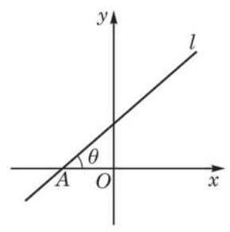 | 选择性必修第一册
x1-1-1 直线的倾斜角与斜率
教材 · 正文插图 | 290 × 293 px
一般插图（内容类型待视觉确认）
位置已核对；内容初分待视觉核验 | x1-1-1_教材_节内插图001.svg来源定位sources/textbooks/选择性必修第一册/第1章平面直角坐标系中的直线/第1章平面直角坐标系中的直线-dollar.md
L15
sources/textbooks/选择性必修第一册/第1章平面直角坐标系中的直线/images/bo_d4slnhbef24c73be0pog_1_215_617_290_293_0.jpg
img-a9ce298b0a2106eb |
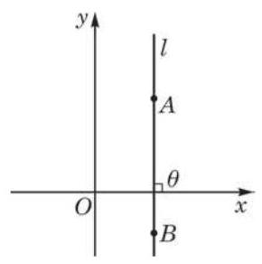 | 选择性必修第一册
x1-1-1 直线的倾斜角与斜率
教材 · 正文插图 | 290 × 292 px
一般插图（内容类型待视觉确认）
位置已核对；内容初分待视觉核验 | x1-1-1_教材_节内插图002.svg来源定位sources/textbooks/选择性必修第一册/第1章平面直角坐标系中的直线/第1章平面直角坐标系中的直线-dollar.md
L25
sources/textbooks/选择性必修第一册/第1章平面直角坐标系中的直线/images/bo_d4slnhbef24c73be0pog_1_563_1754_290_292_0.jpg
img-bde4a7d44e23dae6 |
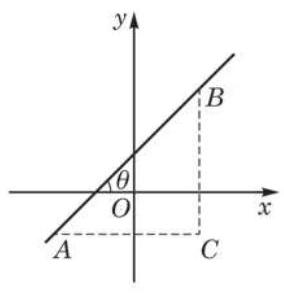 | 选择性必修第一册
x1-1-1 直线的倾斜角与斜率
教材 · 正文插图 | 284 × 293 px
一般插图（内容类型待视觉确认）
位置已核对；内容初分待视觉核验 | x1-1-1_教材_节内插图003.svg来源定位sources/textbooks/选择性必修第一册/第1章平面直角坐标系中的直线/第1章平面直角坐标系中的直线-dollar.md
L29
sources/textbooks/选择性必修第一册/第1章平面直角坐标系中的直线/images/bo_d4slnhbef24c73be0pog_1_872_1748_284_293_0.jpg
img-8536197cbe47b178 |
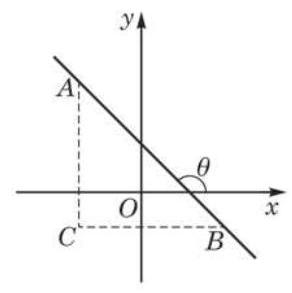 | 选择性必修第一册
x1-1-1 直线的倾斜角与斜率
教材 · 正文插图 | 292 × 293 px
一般插图（内容类型待视觉确认）
位置已核对；内容初分待视觉核验 | x1-1-1_教材_节内插图004.svg来源定位sources/textbooks/选择性必修第一册/第1章平面直角坐标系中的直线/第1章平面直角坐标系中的直线-dollar.md
L33
sources/textbooks/选择性必修第一册/第1章平面直角坐标系中的直线/images/bo_d4slnhbef24c73be0pog_1_1176_1748_292_293_0.jpg
img-c18394366177204e |
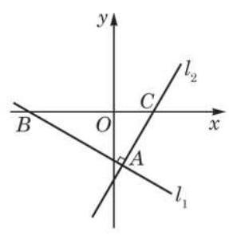 | 选择性必修第一册
x1-1-1 直线的倾斜角与斜率
教材 · 题目配图 | 287 × 295 px
一般插图（内容类型待视觉确认）
位置已核对；内容初分待视觉核验 | x1-1-1_教材_节内插图005.svg来源定位sources/textbooks/选择性必修第一册/第1章平面直角坐标系中的直线/第1章平面直角坐标系中的直线-dollar.md
L117
sources/textbooks/选择性必修第一册/第1章平面直角坐标系中的直线/images/bo_d4slnhbef24c73be0pog_3_1191_1616_287_295_0.jpg
img-418002d9a4223fa0 |
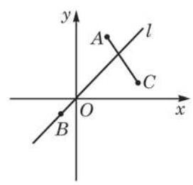 | 选择性必修第一册
x1-1-1 直线的倾斜角与斜率
教材 · 题目配图 | 272 × 261 px
一般插图（内容类型待视觉确认）
位置已核对；内容初分待视觉核验 | x1-1-1_教材_节内插图006.svg来源定位sources/textbooks/选择性必修第一册/第1章平面直角坐标系中的直线/第1章平面直角坐标系中的直线-dollar.md
L133
sources/textbooks/选择性必修第一册/第1章平面直角坐标系中的直线/images/bo_d4slnhbef24c73be0pog_4_1175_351_272_261_0.jpg
img-c71088e2254e42f4 |
| 选择性必修第一册
x1-1-1 直线的倾斜角与斜率
教材 · 正文插图 | 1653 × 1182 px
大幅插图候选（可能含章首照片）
位置已核对；内容初分待视觉核验 | x1-1-1_教材_节内插图007.svg来源定位sources/textbooks/选择性必修第一册/第1章平面直角坐标系中的直线/第1章平面直角坐标系中的直线-dollar.md
L3
sources/textbooks/选择性必修第一册/第1章平面直角坐标系中的直线/images/bo_d4slnhbef24c73be0pog_0_1_2_1653_1182_0.jpg
img-e1bb977a64c738df |
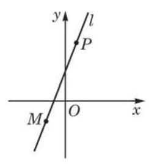 | 选择性必修第一册
x1-1-2 直线的方程
教材 · 正文插图 | 244 × 268 px
一般插图（内容类型待视觉确认）
位置已核对；内容初分待视觉核验 | x1-1-2_教材_节内插图001.svg来源定位sources/textbooks/选择性必修第一册/第1章平面直角坐标系中的直线/第1章平面直角坐标系中的直线-dollar.md
L161
sources/textbooks/选择性必修第一册/第1章平面直角坐标系中的直线/images/bo_d4slnhbef24c73be0pog_5_238_1773_244_268_0.jpg
img-510a42bc51ced101 |
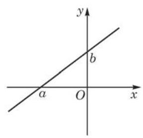 | 选择性必修第一册
x1-1-2 直线的方程
教材 · 正文插图 | 288 × 278 px
一般插图（内容类型待视觉确认）
位置已核对；内容初分待视觉核验 | x1-1-2_教材_节内插图002.svg来源定位sources/textbooks/选择性必修第一册/第1章平面直角坐标系中的直线/第1章平面直角坐标系中的直线-dollar.md
L193
sources/textbooks/选择性必修第一册/第1章平面直角坐标系中的直线/images/bo_d4slnhbef24c73be0pog_6_1142_1054_288_278_0.jpg
img-0803699d4bd156a5 |
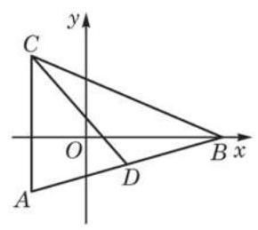 | 选择性必修第一册
x1-1-2 直线的方程
教材 · 题目配图 | 290 × 259 px
一般插图（内容类型待视觉确认）
位置已核对；内容初分待视觉核验 | x1-1-2_教材_节内插图003.svg来源定位sources/textbooks/选择性必修第一册/第1章平面直角坐标系中的直线/第1章平面直角坐标系中的直线-dollar.md
L259
sources/textbooks/选择性必修第一册/第1章平面直角坐标系中的直线/images/bo_d4slnhbef24c73be0pog_7_215_1776_290_259_0.jpg
img-0aa8765636284a38 |
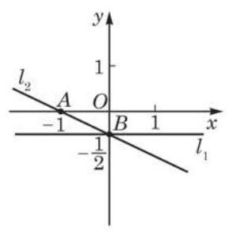 | 选择性必修第一册
x1-1-2 直线的方程
教材 · 题目配图 | 289 × 293 px
一般插图（内容类型待视觉确认）
位置已核对；内容初分待视觉核验 | x1-1-2_教材_节内插图004.svg来源定位sources/textbooks/选择性必修第一册/第1章平面直角坐标系中的直线/第1章平面直角坐标系中的直线-dollar.md
L321
sources/textbooks/选择性必修第一册/第1章平面直角坐标系中的直线/images/bo_d4slnhbef24c73be0pog_9_217_1405_289_293_0.jpg
img-8bac2035b68f5da0 |
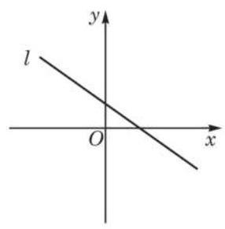 | 选择性必修第一册
x1-1-2 直线的方程
教材 · 答案解析 | 286 × 291 px
一般插图（内容类型待视觉确认）
位置已核对；内容初分待视觉核验 | x1-1-2_教材_节内插图005.svg来源定位sources/textbooks/选择性必修第一册/第1章平面直角坐标系中的直线/第1章平面直角坐标系中的直线-dollar.md
L337
sources/textbooks/选择性必修第一册/第1章平面直角坐标系中的直线/images/bo_d4slnhbef24c73be0pog_10_1144_506_286_291_0.jpg
img-9b3887bfe849369f |
| 选择性必修第一册
x1-1-2 直线的方程
教材 · 题目配图 | 149 × 146 px
一般插图（内容类型待视觉确认）
位置已核对；内容初分待视觉核验 | x1-1-2_教材_节内插图006.svg来源定位sources/textbooks/选择性必修第一册/第1章平面直角坐标系中的直线/第1章平面直角坐标系中的直线-dollar.md
L519
sources/textbooks/选择性必修第一册/第1章平面直角坐标系中的直线/images/bo_d4slnhbef24c73be0pog_13_1286_1640_149_146_0.jpg
img-b66ff40e9cc9c10a |
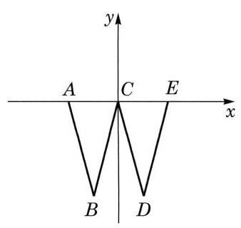 | 选择性必修第一册
x1-1-2 直线的方程
教参 · 答案解析 | 338 × 320 px
一般插图（内容类型待视觉确认）
位置已核对；内容初分待视觉核验 | x1-1-2_教参_节内插图007.svg来源定位sources/textbooks/教参与课标/沪教版教参选择性必修第一册/沪教版教参选择性必修第一册分章/01 选必第一册 第1章 平面直角坐标系中的直线.md
L656
sources/textbooks/教参与课标/沪教版教参选择性必修第一册/images/bo_d402onjef24c73d2tg30_40_1077_1646_338_320_0.jpg
img-cddfa046e981fa81 |
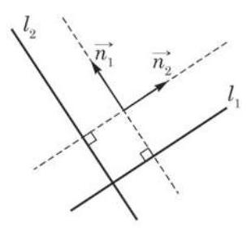 | 选择性必修第一册
x1-1-3 两条直线的位置关系
教材 · 正文插图 | 304 × 280 px
一般插图（内容类型待视觉确认）
位置已核对；内容初分待视觉核验 | x1-1-3_教材_节内插图001.svg来源定位sources/textbooks/选择性必修第一册/第1章平面直角坐标系中的直线/第1章平面直角坐标系中的直线-dollar.md
L671
sources/textbooks/选择性必修第一册/第1章平面直角坐标系中的直线/images/bo_d4slnhbef24c73be0pog_18_1141_847_304_280_0.jpg
img-66d9bb394d9c82b7 |
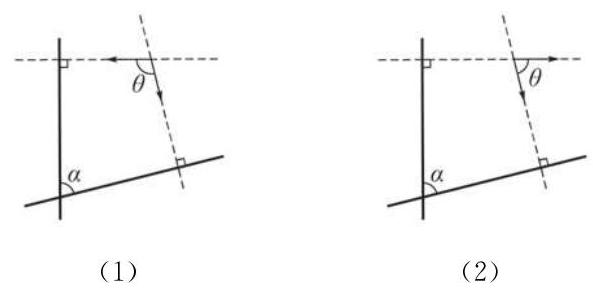 | 选择性必修第一册
x1-1-3 两条直线的位置关系
教材 · 题目配图 | 597 × 292 px
一般插图（内容类型待视觉确认）
位置已核对；内容初分待视觉核验 | x1-1-3_教材_节内插图002.svg来源定位sources/textbooks/选择性必修第一册/第1章平面直角坐标系中的直线/第1章平面直角坐标系中的直线-dollar.md
L741
sources/textbooks/选择性必修第一册/第1章平面直角坐标系中的直线/images/bo_d4slnhbef24c73be0pog_20_334_645_597_292_0.jpg
img-aff38c8d1345400f |
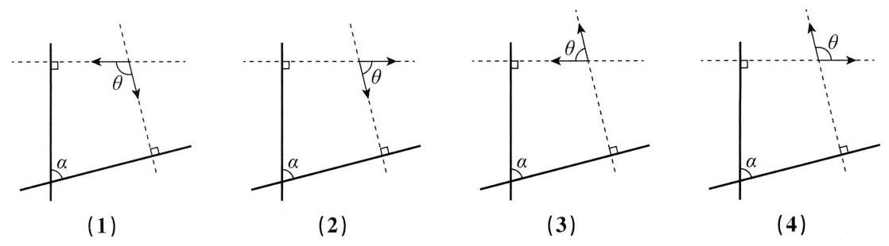 | 选择性必修第一册
x1-1-3 两条直线的位置关系
教参 · 教学建议 | 1118 × 310 px
一般插图（内容类型待视觉确认）
位置已核对；内容初分待视觉核验 | x1-1-3_教参_节内插图003.svg来源定位sources/textbooks/教参与课标/沪教版教参选择性必修第一册/沪教版教参选择性必修第一册分章/01 选必第一册 第1章 平面直角坐标系中的直线.md
L418
sources/textbooks/教参与课标/沪教版教参选择性必修第一册/images/bo_d402onjef24c73d2tg30_33_202_1542_1118_310_0.jpg
img-9cd7653758531bd2 |
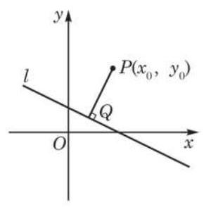 | 选择性必修第一册
x1-1-4 点到直线的距离
教材 · 正文插图 | 290 × 294 px
一般插图（内容类型待视觉确认）
位置已核对；内容初分待视觉核验 | x1-1-4_教材_节内插图001.svg来源定位sources/textbooks/选择性必修第一册/第1章平面直角坐标系中的直线/第1章平面直角坐标系中的直线-dollar.md
L857
sources/textbooks/选择性必修第一册/第1章平面直角坐标系中的直线/images/bo_d4slnhbef24c73be0pog_23_216_514_290_294_0.jpg
img-b3eea358c5acbbb8 |
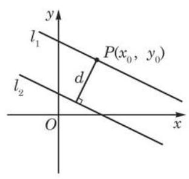 | 选择性必修第一册
x1-1-4 点到直线的距离
教材 · 答案解析 | 312 × 296 px
一般插图（内容类型待视觉确认）
位置已核对；内容初分待视觉核验 | x1-1-4_教材_节内插图002.svg来源定位sources/textbooks/选择性必修第一册/第1章平面直角坐标系中的直线/第1章平面直角坐标系中的直线-dollar.md
L919
sources/textbooks/选择性必修第一册/第1章平面直角坐标系中的直线/images/bo_d4slnhbef24c73be0pog_24_1131_964_312_296_0.jpg
img-ce0cc7c240909b50 |
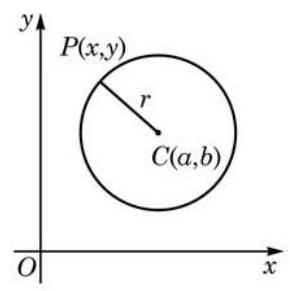 | 选择性必修第一册
x1-2-1 圆
教材 · 正文插图 | 290 × 291 px
一般插图（内容类型待视觉确认）
位置已核对；内容初分待视觉核验 | x1-2-1_教材_节内插图001.svg来源定位sources/textbooks/选择性必修第一册/第2章圆锥曲线/第2章圆锥曲线-dollar.md
L27
sources/textbooks/选择性必修第一册/第2章圆锥曲线/images/bo_d4sln7jef24c73be0pd0_2_1142_260_290_291_0.jpg
img-d9467677b765af41 |
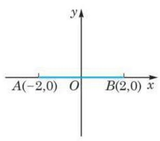 | 选择性必修第一册
x1-2-1 圆
教材 · 题目配图 | 311 × 275 px
一般插图（内容类型待视觉确认）
位置已核对；内容初分待视觉核验 | x1-2-1_教材_节内插图002.svg来源定位sources/textbooks/选择性必修第一册/第2章圆锥曲线/第2章圆锥曲线-dollar.md
L71
sources/textbooks/选择性必修第一册/第2章圆锥曲线/images/bo_d4sln7jef24c73be0pd0_2_1132_1557_311_275_0.jpg
img-5f7bbef794578d1f |
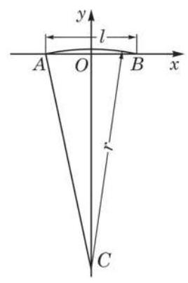 | 选择性必修第一册
x1-2-1 圆
教材 · 题目配图 | 268 × 403 px
一般插图（内容类型待视觉确认）
位置已核对；内容初分待视觉核验 | x1-2-1_教材_节内插图003.svg来源定位sources/textbooks/选择性必修第一册/第2章圆锥曲线/第2章圆锥曲线-dollar.md
L93
sources/textbooks/选择性必修第一册/第2章圆锥曲线/images/bo_d4sln7jef24c73be0pd0_3_225_412_268_403_0.jpg
img-a359078b998e0151 |
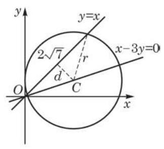 | 选择性必修第一册
x1-2-1 圆
教材 · 题目配图 | 324 × 295 px
一般插图（内容类型待视觉确认）
位置已核对；内容初分待视觉核验 | x1-2-1_教材_节内插图004.svg来源定位sources/textbooks/选择性必修第一册/第2章圆锥曲线/第2章圆锥曲线-dollar.md
L117
sources/textbooks/选择性必修第一册/第2章圆锥曲线/images/bo_d4sln7jef24c73be0pd0_3_201_1100_324_295_0.jpg
img-e438e1c3fb629831 |
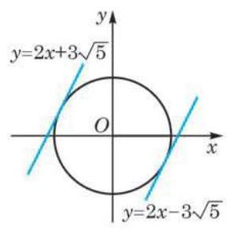 | 选择性必修第一册
x1-2-1 圆
教材 · 答案解析 | 290 × 292 px
一般插图（内容类型待视觉确认）
位置已核对；内容初分待视觉核验 | x1-2-1_教材_节内插图005.svg来源定位sources/textbooks/选择性必修第一册/第2章圆锥曲线/第2章圆锥曲线-dollar.md
L325
sources/textbooks/选择性必修第一册/第2章圆锥曲线/images/bo_d4sln7jef24c73be0pd0_6_1142_1743_290_292_0.jpg
img-854c5d219d77e4f3 |
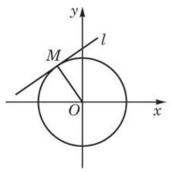 | 选择性必修第一册
x1-2-1 圆
教材 · 题目配图 | 288 × 290 px
一般插图（内容类型待视觉确认）
位置已核对；内容初分待视觉核验 | x1-2-1_教材_节内插图006.svg来源定位sources/textbooks/选择性必修第一册/第2章圆锥曲线/第2章圆锥曲线-dollar.md
L337
sources/textbooks/选择性必修第一册/第2章圆锥曲线/images/bo_d4sln7jef24c73be0pd0_7_218_436_288_290_0.jpg
img-54eba6447618ca4c |
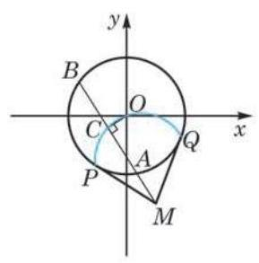 | 选择性必修第一册
x1-2-1 圆
教材 · 答案解析 | 289 × 293 px
一般插图（内容类型待视觉确认）
位置已核对；内容初分待视觉核验 | x1-2-1_教材_节内插图007.svg来源定位sources/textbooks/选择性必修第一册/第2章圆锥曲线/第2章圆锥曲线-dollar.md
L395
sources/textbooks/选择性必修第一册/第2章圆锥曲线/images/bo_d4sln7jef24c73be0pd0_7_216_1745_289_293_0.jpg
img-fc6bf9c7ab71c204 |
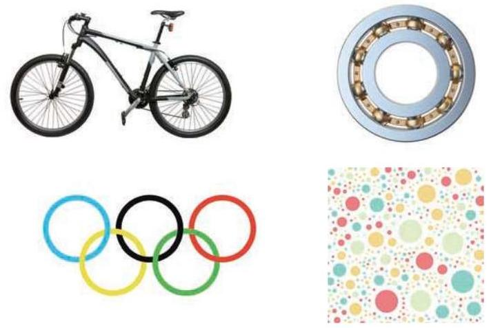 | 选择性必修第一册
x1-2-1 圆
教材 · 正文插图 | 712 × 477 px
一般插图（内容类型待视觉确认）
位置已核对；内容初分待视觉核验 | x1-2-1_教材_节内插图008.svg来源定位sources/textbooks/选择性必修第一册/第2章圆锥曲线/第2章圆锥曲线-dollar.md
L441
sources/textbooks/选择性必修第一册/第2章圆锥曲线/images/bo_d4sln7jef24c73be0pd0_8_255_1285_712_477_0.jpg
img-178c9e4d8b8b9651 |
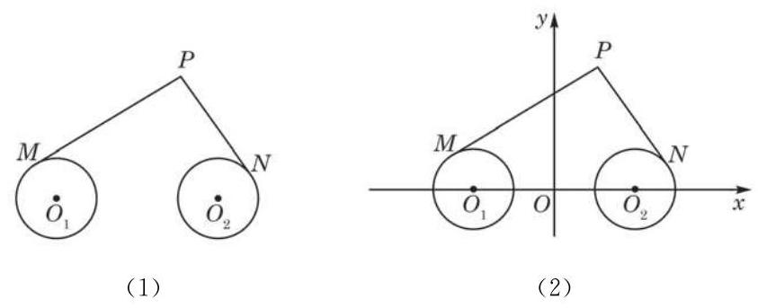 | 选择性必修第一册
x1-2-1 圆
教材 · 题目配图 | 843 × 343 px
一般插图（内容类型待视觉确认）
位置已核对；内容初分待视觉核验 | x1-2-1_教材_节内插图009.svg来源定位sources/textbooks/选择性必修第一册/第2章圆锥曲线/第2章圆锥曲线-dollar.md
L527
sources/textbooks/选择性必修第一册/第2章圆锥曲线/images/bo_d4sln7jef24c73be0pd0_10_210_1678_843_343_0.jpg
img-3e7131b632932303 |
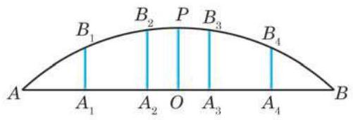 | 选择性必修第一册
x1-2-1 圆
教材 · 题目配图 | 501 × 171 px
一般插图（内容类型待视觉确认）
位置已核对；内容初分待视觉核验 | x1-2-1_教材_节内插图010.svg来源定位sources/textbooks/选择性必修第一册/第2章圆锥曲线/第2章圆锥曲线-dollar.md
L607
sources/textbooks/选择性必修第一册/第2章圆锥曲线/images/bo_d4sln7jef24c73be0pd0_12_558_940_501_171_0.jpg
img-99d1dd0326ac33d4 |
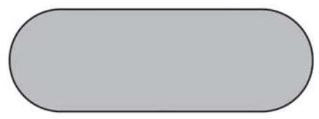 | 选择性必修第一册
x1-2-1 圆
教材 · 题目配图 | 455 × 170 px
一般插图（内容类型待视觉确认）
位置已核对；内容初分待视觉核验 | x1-2-1_教材_节内插图011.svg来源定位sources/textbooks/选择性必修第一册/第2章圆锥曲线/第2章圆锥曲线-dollar.md
L637
sources/textbooks/选择性必修第一册/第2章圆锥曲线/images/bo_d4sln7jef24c73be0pd0_13_607_335_455_170_0.jpg
img-5544846ea3f8ef16 |
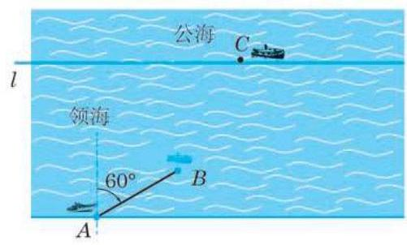 | 选择性必修第一册
x1-2-1 圆
教材 · 正文插图 | 501 × 302 px
一般插图（内容类型待视觉确认）
位置已核对；内容初分待视觉核验 | x1-2-1_教材_节内插图012.svg来源定位sources/textbooks/选择性必修第一册/第2章圆锥曲线/第2章圆锥曲线-dollar.md
L647
sources/textbooks/选择性必修第一册/第2章圆锥曲线/images/bo_d4sln7jef24c73be0pd0_13_584_1092_501_302_0.jpg
img-4bde123ce49ae992 |
| 选择性必修第一册
x1-2-1 圆
教材 · 正文插图 | 1652 × 1166 px
大幅插图候选（可能含章首照片）
位置已核对；内容初分待视觉核验 | x1-2-1_教材_节内插图013.svg来源定位sources/textbooks/选择性必修第一册/第2章圆锥曲线/第2章圆锥曲线-dollar.md
L3
sources/textbooks/选择性必修第一册/第2章圆锥曲线/images/bo_d4sln7jef24c73be0pd0_0_2_7_1652_1166_0.jpg
img-3f90ab2267261eb4 |
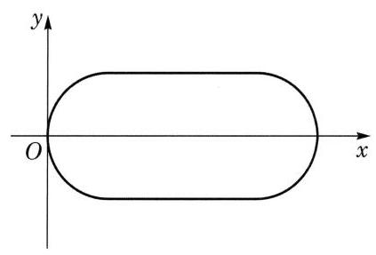 | 选择性必修第一册
x1-2-1 圆
教参 · 答案解析 | 423 × 287 px
一般插图（内容类型待视觉确认）
位置已核对；内容初分待视觉核验 | x1-2-1_教参_节内插图014.svg来源定位sources/textbooks/教参与课标/沪教版教参选择性必修第一册/沪教版教参选择性必修第一册分章/02 选必第一册 第2章 圆锥曲线.md
L1046
sources/textbooks/教参与课标/沪教版教参选择性必修第一册/images/bo_d402onjef24c73d2tg30_95_933_527_423_287_0.jpg
img-79393b9fef7dfe69 |
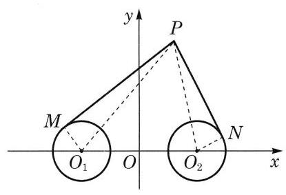 | 选择性必修第一册
x1-2-1 圆
教参 · 教学建议 | 415 × 283 px
一般插图（内容类型待视觉确认）
位置已核对；内容初分待视觉核验 | x1-2-1_教参_节内插图015.svg来源定位sources/textbooks/教参与课标/沪教版教参选择性必修第一册/沪教版教参选择性必修第一册分章/02 选必第一册 第2章 圆锥曲线.md
L164
sources/textbooks/教参与课标/沪教版教参选择性必修第一册/images/bo_d402onjef24c73d2tg30_55_945_1283_415_283_0.jpg
img-2f619c47046c9da6 |
 | 选择性必修第一册
x1-2-2 椭圆
教材 · 正文插图 | 348 × 230 px
数学结构图（小样已逐图核对）
小样人工核对 | x1-2-2_图2-2-1_椭圆拉绳.svg来源定位sources/textbooks/选择性必修第一册/第2章圆锥曲线/第2章圆锥曲线-dollar.md
L663
sources/textbooks/选择性必修第一册/第2章圆锥曲线/images/bo_d4sln7jef24c73be0pd0_14_1111_1096_348_230_0.jpg
img-518957a1cd89b7e5 |
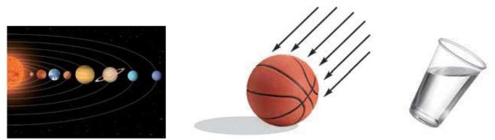 | 选择性必修第一册
x1-2-2 椭圆
教材 · 正文插图 | 844 × 239 px
一般插图（内容类型待视觉确认）
位置已核对；内容初分待视觉核验 | x1-2-2_教材_节内插图002.svg来源定位sources/textbooks/选择性必修第一册/第2章圆锥曲线/第2章圆锥曲线-dollar.md
L667
sources/textbooks/选择性必修第一册/第2章圆锥曲线/images/bo_d4sln7jef24c73be0pd0_14_203_976_844_239_0.jpg
img-0d54ab5c9e68b66a |
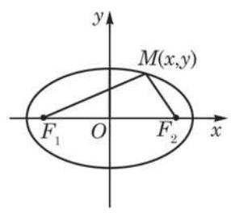 | 选择性必修第一册
x1-2-2 椭圆
教材 · 正文插图 | 286 × 264 px
一般插图（内容类型待视觉确认）
位置已核对；内容初分待视觉核验 | x1-2-2_教材_节内插图003.svg来源定位sources/textbooks/选择性必修第一册/第2章圆锥曲线/第2章圆锥曲线-dollar.md
L685
sources/textbooks/选择性必修第一册/第2章圆锥曲线/images/bo_d4sln7jef24c73be0pd0_14_1144_1779_286_264_0.jpg
img-d99ef5e36d2bc5f6 |
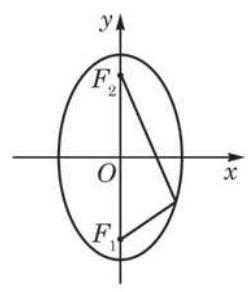 | 选择性必修第一册
x1-2-2 椭圆
教材 · 正文插图 | 250 × 292 px
一般插图（内容类型待视觉确认）
位置已核对；内容初分待视觉核验 | x1-2-2_教材_节内插图004.svg来源定位sources/textbooks/选择性必修第一册/第2章圆锥曲线/第2章圆锥曲线-dollar.md
L753
sources/textbooks/选择性必修第一册/第2章圆锥曲线/images/bo_d4sln7jef24c73be0pd0_15_234_1547_250_292_0.jpg
img-4b9966ff6cb65513 |
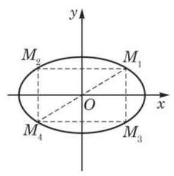 | 选择性必修第一册
x1-2-2 椭圆
教材 · 正文插图 | 290 × 293 px
一般插图（内容类型待视觉确认）
位置已核对；内容初分待视觉核验 | x1-2-2_教材_节内插图005.svg来源定位sources/textbooks/选择性必修第一册/第2章圆锥曲线/第2章圆锥曲线-dollar.md
L851
sources/textbooks/选择性必修第一册/第2章圆锥曲线/images/bo_d4sln7jef24c73be0pd0_17_216_409_290_293_0.jpg
img-26d05a4a2fb05861 |
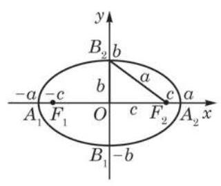 | 选择性必修第一册
x1-2-2 椭圆
教材 · 正文插图 | 320 × 269 px
一般插图（内容类型待视觉确认）
位置已核对；内容初分待视觉核验 | x1-2-2_教材_节内插图006.svg来源定位sources/textbooks/选择性必修第一册/第2章圆锥曲线/第2章圆锥曲线-dollar.md
L857
sources/textbooks/选择性必修第一册/第2章圆锥曲线/images/bo_d4sln7jef24c73be0pd0_17_200_859_320_269_0.jpg
img-ca42b407025cc1d9 |
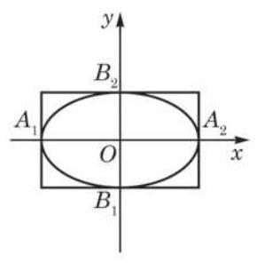 | 选择性必修第一册
x1-2-2 椭圆
教材 · 正文插图 | 290 × 296 px
一般插图（内容类型待视觉确认）
位置已核对；内容初分待视觉核验 | x1-2-2_教材_节内插图007.svg来源定位sources/textbooks/选择性必修第一册/第2章圆锥曲线/第2章圆锥曲线-dollar.md
L877
sources/textbooks/选择性必修第一册/第2章圆锥曲线/images/bo_d4sln7jef24c73be0pd0_17_217_1662_290_296_0.jpg
img-5b650f035cc836b5 |
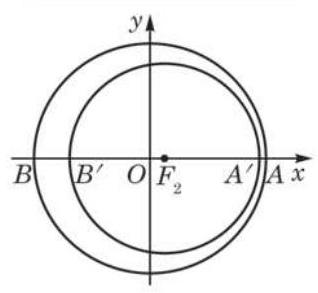 | 选择性必修第一册
x1-2-2 椭圆
教材 · 答案解析 | 318 × 293 px
一般插图（内容类型待视觉确认）
位置已核对；内容初分待视觉核验 | x1-2-2_教材_节内插图008.svg来源定位sources/textbooks/选择性必修第一册/第2章圆锥曲线/第2章圆锥曲线-dollar.md
L945
sources/textbooks/选择性必修第一册/第2章圆锥曲线/images/bo_d4sln7jef24c73be0pd0_19_202_471_318_293_0.jpg
img-f8049a3ad7e0d389 |
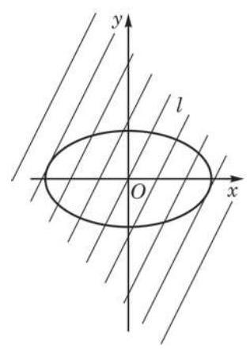 | 选择性必修第一册
x1-2-2 椭圆
教材 · 答案解析 | 316 × 444 px
一般插图（内容类型待视觉确认）
位置已核对；内容初分待视觉核验 | x1-2-2_教材_节内插图009.svg来源定位sources/textbooks/选择性必修第一册/第2章圆锥曲线/第2章圆锥曲线-dollar.md
L973
sources/textbooks/选择性必修第一册/第2章圆锥曲线/images/bo_d4sln7jef24c73be0pd0_19_200_949_316_444_0.jpg
img-64287bc89dca9f09 |
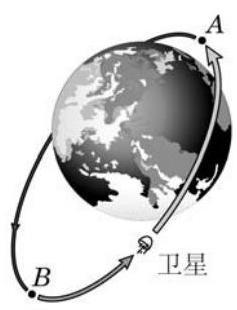 | 选择性必修第一册
x1-2-2 椭圆
教材 · 题目配图 | 237 × 310 px
一般插图（内容类型待视觉确认）
位置已核对；内容初分待视觉核验 | x1-2-2_教材_节内插图010.svg来源定位sources/textbooks/选择性必修第一册/第2章圆锥曲线/第2章圆锥曲线-dollar.md
L929
sources/textbooks/选择性必修第一册/第2章圆锥曲线/images/bo_d4sln7jef24c73be0pd0_18_1151_1721_237_310_0.jpg
img-a73b7d983eb613ef |
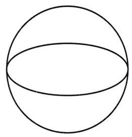 | 选择性必修第一册
x1-2-2 椭圆
教参 · 教学建议 | 262 × 271 px
一般插图（内容类型待视觉确认）
位置已核对；内容初分待视觉核验 | x1-2-2_教参_节内插图011.svg来源定位sources/textbooks/教参与课标/沪教版教参选择性必修第一册/沪教版教参选择性必修第一册分章/02 选必第一册 第2章 圆锥曲线.md
L274
sources/textbooks/教参与课标/沪教版教参选择性必修第一册/images/bo_d402onjef24c73d2tg30_61_1072_325_262_271_0.jpg
img-04179a1d4f3b2f5b |
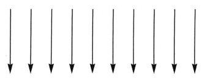 | 选择性必修第一册
x1-2-2 椭圆
教参 · 教学建议 | 331 × 130 px
一般插图（内容类型待视觉确认）
位置已核对；内容初分待视觉核验 | x1-2-2_教参_节内插图012.svg来源定位sources/textbooks/教参与课标/沪教版教参选择性必修第一册/沪教版教参选择性必修第一册分章/02 选必第一册 第2章 圆锥曲线.md
L276
sources/textbooks/教参与课标/沪教版教参选择性必修第一册/images/bo_d402onjef24c73d2tg30_61_1039_184_331_130_0.jpg
img-18bbbbf98f0746c6 |
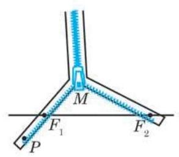 | 选择性必修第一册
x1-2-3 双曲线
教材 · 正文插图 | 293 × 258 px
一般插图（内容类型待视觉确认）
位置已核对；内容初分待视觉核验 | x1-2-3_教材_节内插图001.svg来源定位sources/textbooks/选择性必修第一册/第2章圆锥曲线/第2章圆锥曲线-dollar.md
L1053
sources/textbooks/选择性必修第一册/第2章圆锥曲线/images/bo_d4sln7jef24c73be0pd0_21_213_728_293_258_0.jpg
img-9f39c975d8a5e8dc |
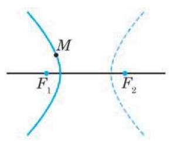 | 选择性必修第一册
x1-2-3 双曲线
教材 · 正文插图 | 290 × 242 px
一般插图（内容类型待视觉确认）
位置已核对；内容初分待视觉核验 | x1-2-3_教材_节内插图002.svg来源定位sources/textbooks/选择性必修第一册/第2章圆锥曲线/第2章圆锥曲线-dollar.md
L1059
sources/textbooks/选择性必修第一册/第2章圆锥曲线/images/bo_d4sln7jef24c73be0pd0_21_216_1139_290_242_0.jpg
img-d270cff8f2064397 |
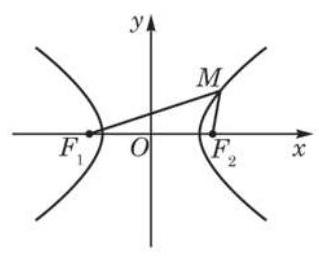 | 选择性必修第一册
x1-2-3 双曲线
教材 · 正文插图 | 319 × 256 px
一般插图（内容类型待视觉确认）
位置已核对；内容初分待视觉核验 | x1-2-3_教材_节内插图003.svg来源定位sources/textbooks/选择性必修第一册/第2章圆锥曲线/第2章圆锥曲线-dollar.md
L1083
sources/textbooks/选择性必修第一册/第2章圆锥曲线/images/bo_d4sln7jef24c73be0pd0_21_201_1783_319_256_0.jpg
img-69d710155d75cd77 |
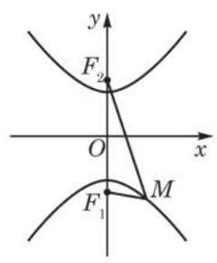 | 选择性必修第一册
x1-2-3 双曲线
教材 · 正文插图 | 238 × 289 px
一般插图（内容类型待视觉确认）
位置已核对；内容初分待视觉核验 | x1-2-3_教材_节内插图004.svg来源定位sources/textbooks/选择性必修第一册/第2章圆锥曲线/第2章圆锥曲线-dollar.md
L1133
sources/textbooks/选择性必修第一册/第2章圆锥曲线/images/bo_d4sln7jef24c73be0pd0_22_1169_1290_238_289_0.jpg
img-dcdf2c6266e5c12e |
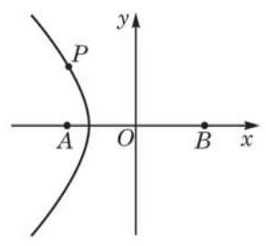 | 选择性必修第一册
x1-2-3 双曲线
教材 · 答案解析 | 296 × 273 px
一般插图（内容类型待视觉确认）
位置已核对；内容初分待视觉核验 | x1-2-3_教材_节内插图005.svg来源定位sources/textbooks/选择性必修第一册/第2章圆锥曲线/第2章圆锥曲线-dollar.md
L1185
sources/textbooks/选择性必修第一册/第2章圆锥曲线/images/bo_d4sln7jef24c73be0pd0_23_214_1012_296_273_0.jpg
img-946f6d796a1c52b6 |
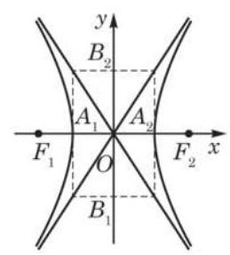 | 选择性必修第一册
x1-2-3 双曲线
教材 · 正文插图 | 259 × 287 px
一般插图（内容类型待视觉确认）
位置已核对；内容初分待视觉核验 | x1-2-3_教材_节内插图006.svg来源定位sources/textbooks/选择性必修第一册/第2章圆锥曲线/第2章圆锥曲线-dollar.md
L1259
sources/textbooks/选择性必修第一册/第2章圆锥曲线/images/bo_d4sln7jef24c73be0pd0_24_1156_1298_259_287_0.jpg
img-043e011c2e0a523d |
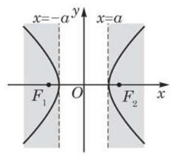 | 选择性必修第一册
x1-2-3 双曲线
教材 · 正文插图 | 290 × 262 px
一般插图（内容类型待视觉确认）
位置已核对；内容初分待视觉核验 | x1-2-3_教材_节内插图007.svg来源定位sources/textbooks/选择性必修第一册/第2章圆锥曲线/第2章圆锥曲线-dollar.md
L1275
sources/textbooks/选择性必修第一册/第2章圆锥曲线/images/bo_d4sln7jef24c73be0pd0_25_216_371_290_262_0.jpg
img-71bc73e376d1d4d2 |
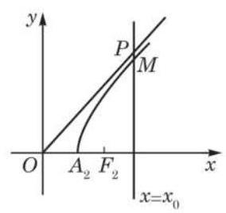 | 选择性必修第一册
x1-2-3 双曲线
教材 · 正文插图 | 284 × 268 px
一般插图（内容类型待视觉确认）
位置已核对；内容初分待视觉核验 | x1-2-3_教材_节内插图008.svg来源定位sources/textbooks/选择性必修第一册/第2章圆锥曲线/第2章圆锥曲线-dollar.md
L1291
sources/textbooks/选择性必修第一册/第2章圆锥曲线/images/bo_d4sln7jef24c73be0pd0_25_216_959_284_268_0.jpg
img-5a29f01a57583dda |
| 选择性必修第一册
x1-2-3 双曲线
教材 · 正文插图 | 290 × 289 px
一般插图（内容类型待视觉确认）
位置已核对；内容初分待视觉核验 | x1-2-3_教材_节内插图009.svg来源定位sources/textbooks/选择性必修第一册/第2章圆锥曲线/第2章圆锥曲线-dollar.md
L1325
sources/textbooks/选择性必修第一册/第2章圆锥曲线/images/bo_d4sln7jef24c73be0pd0_26_1142_276_290_289_0.jpg
img-2618e77bad069f7d |
| 选择性必修第一册
x1-2-3 双曲线
教材 · 题目配图 | 361 × 253 px
一般插图（内容类型待视觉确认）
位置已核对；内容初分待视觉核验 | x1-2-3_教材_节内插图010.svg来源定位sources/textbooks/选择性必修第一册/第2章圆锥曲线/第2章圆锥曲线-dollar.md
L1375
sources/textbooks/选择性必修第一册/第2章圆锥曲线/images/bo_d4sln7jef24c73be0pd0_27_178_574_361_253_0.jpg
img-b1de9dff8cda8d62 |
| 选择性必修第一册
x1-2-3 双曲线
教材 · 答案解析 | 259 × 281 px
一般插图（内容类型待视觉确认）
位置已核对；内容初分待视觉核验 | x1-2-3_教材_节内插图011.svg来源定位sources/textbooks/选择性必修第一册/第2章圆锥曲线/第2章圆锥曲线-dollar.md
L1415
sources/textbooks/选择性必修第一册/第2章圆锥曲线/images/bo_d4sln7jef24c73be0pd0_27_232_1734_259_281_0.jpg
img-30d398a1230aaf76 |
| 选择性必修第一册
x1-2-3 双曲线
教材 · 题目配图 | 317 × 220 px
一般插图（内容类型待视觉确认）
位置已核对；内容初分待视觉核验 | x1-2-3_教材_节内插图012.svg来源定位sources/textbooks/选择性必修第一册/第2章圆锥曲线/第2章圆锥曲线-dollar.md
L1425
sources/textbooks/选择性必修第一册/第2章圆锥曲线/images/bo_d4sln7jef24c73be0pd0_28_1130_255_317_220_0.jpg
img-19fe7a4b3a3aedcd |
| 选择性必修第一册
x1-2-3 双曲线
教材 · 题目配图 | 213 × 279 px
一般插图（内容类型待视觉确认）
位置已核对；内容初分待视觉核验 | x1-2-3_教材_节内插图013.svg来源定位sources/textbooks/选择性必修第一册/第2章圆锥曲线/第2章圆锥曲线-dollar.md
L1427
sources/textbooks/选择性必修第一册/第2章圆锥曲线/images/bo_d4sln7jef24c73be0pd0_28_335_579_213_279_0.jpg
img-6406117eb96661f9 |
| 选择性必修第一册
x1-2-3 双曲线
教材 · 题目配图 | 222 × 296 px
一般插图（内容类型待视觉确认）
位置已核对；内容初分待视觉核验 | x1-2-3_教材_节内插图014.svg来源定位sources/textbooks/选择性必修第一册/第2章圆锥曲线/第2章圆锥曲线-dollar.md
L1431
sources/textbooks/选择性必修第一册/第2章圆锥曲线/images/bo_d4sln7jef24c73be0pd0_28_719_572_222_296_0.jpg
img-9cc65afeaa592adb |
| 选择性必修第一册
x1-2-3 双曲线
教参 · 教学建议 | 404 × 366 px
一般插图（内容类型待视觉确认）
位置已核对；内容初分待视觉核验 | x1-2-3_教参_节内插图015.svg来源定位sources/textbooks/教参与课标/沪教版教参选择性必修第一册/沪教版教参选择性必修第一册分章/02 选必第一册 第2章 圆锥曲线.md
L560
sources/textbooks/教参与课标/沪教版教参选择性必修第一册/images/bo_d402onjef24c73d2tg30_73_959_518_404_366_0.jpg
img-d3eeaac37fdaa40a |
| 选择性必修第一册
x1-2-3 双曲线
教参 · 教学建议 | 314 × 292 px
一般插图（内容类型待视觉确认）
位置已核对；内容初分待视觉核验 | x1-2-3_教参_节内插图016.svg来源定位sources/textbooks/教参与课标/沪教版教参选择性必修第一册/沪教版教参选择性必修第一册分章/02 选必第一册 第2章 圆锥曲线.md
L590
sources/textbooks/教参与课标/沪教版教参选择性必修第一册/images/bo_d402onjef24c73d2tg30_73_1045_1537_314_292_0.jpg
img-4083cf4331763723 |
| 选择性必修第一册
x1-2-3 双曲线
教参 · 教学建议 | 355 × 360 px
一般插图（内容类型待视觉确认）
位置已核对；内容初分待视觉核验 | x1-2-3_教参_节内插图017.svg来源定位sources/textbooks/教参与课标/沪教版教参选择性必修第一册/沪教版教参选择性必修第一册分章/02 选必第一册 第2章 圆锥曲线.md
L672
sources/textbooks/教参与课标/沪教版教参选择性必修第一册/images/bo_d402onjef24c73d2tg30_78_1064_196_355_360_0.jpg
img-edb767e23b1bfc34 |
| 选择性必修第一册
x1-2-4 抛物线
教材 · 正文插图 | 808 × 322 px
一般插图（内容类型待视觉确认）
位置已核对；内容初分待视觉核验 | x1-2-4_教材_节内插图001.svg来源定位sources/textbooks/选择性必修第一册/第2章圆锥曲线/第2章圆锥曲线-dollar.md
L1511
sources/textbooks/选择性必修第一册/第2章圆锥曲线/images/bo_d4sln7jef24c73be0pd0_30_226_982_808_322_0.jpg
img-cc660242c820d47e |
| 选择性必修第一册
x1-2-4 抛物线
教材 · 正文插图 | 248 × 297 px
一般插图（内容类型待视觉确认）
位置已核对；内容初分待视觉核验 | x1-2-4_教材_节内插图002.svg来源定位sources/textbooks/选择性必修第一册/第2章圆锥曲线/第2章圆锥曲线-dollar.md
L1515
sources/textbooks/选择性必修第一册/第2章圆锥曲线/images/bo_d4sln7jef24c73be0pd0_30_1161_1327_248_297_0.jpg
img-33d0bb7e9c8d5ed5 |
| 选择性必修第一册
x1-2-4 抛物线
教材 · 正文插图 | 234 × 285 px
一般插图（内容类型待视觉确认）
位置已核对；内容初分待视觉核验 | x1-2-4_教材_节内插图003.svg来源定位sources/textbooks/选择性必修第一册/第2章圆锥曲线/第2章圆锥曲线-dollar.md
L1529
sources/textbooks/选择性必修第一册/第2章圆锥曲线/images/bo_d4sln7jef24c73be0pd0_31_242_253_234_285_0.jpg
img-f872e9979171fabc |
| 选择性必修第一册
x1-2-4 抛物线
教材 · 正文插图 | 243 × 256 px
一般插图（内容类型待视觉确认）
位置已核对；内容初分待视觉核验 | x1-2-4_教材_节内插图004.svg来源定位sources/textbooks/选择性必修第一册/第2章圆锥曲线/第2章圆锥曲线-dollar.md
L1575
sources/textbooks/选择性必修第一册/第2章圆锥曲线/images/bo_d4sln7jef24c73be0pd0_31_238_1783_243_256_0.jpg
img-06d3c9d6bd799010 |
| 选择性必修第一册
x1-2-4 抛物线
教材 · 题目配图 | 285 × 301 px
一般插图（内容类型待视觉确认）
位置已核对；内容初分待视觉核验 | x1-2-4_教材_节内插图005.svg来源定位sources/textbooks/选择性必修第一册/第2章圆锥曲线/第2章圆锥曲线-dollar.md
L1615
sources/textbooks/选择性必修第一册/第2章圆锥曲线/images/bo_d4sln7jef24c73be0pd0_32_1147_985_285_301_0.jpg
img-bdc409c1d8c442ed |
| 选择性必修第一册
x1-2-4 抛物线
教材 · 答案解析 | 236 × 277 px
一般插图（内容类型待视觉确认）
位置已核对；内容初分待视觉核验 | x1-2-4_教材_节内插图006.svg来源定位sources/textbooks/选择性必修第一册/第2章圆锥曲线/第2章圆锥曲线-dollar.md
L1687
sources/textbooks/选择性必修第一册/第2章圆锥曲线/images/bo_d4sln7jef24c73be0pd0_34_1168_259_236_277_0.jpg
img-f14df07e9ef50a73 |
| 选择性必修第一册
x1-2-4 抛物线
教材 · 正文插图 | 249 × 248 px
一般插图（内容类型待视觉确认）
位置已核对；内容初分待视觉核验 | x1-2-4_教材_节内插图007.svg来源定位sources/textbooks/选择性必修第一册/第2章圆锥曲线/第2章圆锥曲线-dollar.md
L1721
sources/textbooks/选择性必修第一册/第2章圆锥曲线/images/bo_d4sln7jef24c73be0pd0_34_1159_1305_249_248_0.jpg
img-a0ab316439b59891 |
| 选择性必修第一册
x1-2-4 抛物线
教材 · 题目配图 | 177 × 238 px
一般插图（内容类型待视觉确认）
位置已核对；内容初分待视觉核验 | x1-2-4_教材_节内插图008.svg来源定位sources/textbooks/选择性必修第一册/第2章圆锥曲线/第2章圆锥曲线-dollar.md
L1735
sources/textbooks/选择性必修第一册/第2章圆锥曲线/images/bo_d4sln7jef24c73be0pd0_35_751_278_177_238_0.jpg
img-83485f0dd488c939 |
| 选择性必修第一册
x1-2-4 抛物线
教材 · 题目配图 | 225 × 253 px
一般插图（内容类型待视觉确认）
位置已核对；内容初分待视觉核验 | x1-2-4_教材_节内插图009.svg来源定位sources/textbooks/选择性必修第一册/第2章圆锥曲线/第2章圆锥曲线-dollar.md
L1739
sources/textbooks/选择性必修第一册/第2章圆锥曲线/images/bo_d4sln7jef24c73be0pd0_35_1058_266_225_253_0.jpg
img-734f577ce14ba89b |
| 选择性必修第一册
x1-2-4 抛物线
教材 · 正文插图 | 770 × 467 px
一般插图（内容类型待视觉确认）
位置已核对；内容初分待视觉核验 | x1-2-4_教材_节内插图010.svg来源定位sources/textbooks/选择性必修第一册/第2章圆锥曲线/第2章圆锥曲线-dollar.md
L1821
sources/textbooks/选择性必修第一册/第2章圆锥曲线/images/bo_d4sln7jef24c73be0pd0_37_443_257_770_467_0.jpg
img-84507196d0970383 |
| 选择性必修第一册
x1-2-5 曲线与方程
教材 · 答案解析 | 286 × 274 px
一般插图（内容类型待视觉确认）
位置已核对；内容初分待视觉核验 | x1-2-5_教材_节内插图001.svg来源定位sources/textbooks/选择性必修第一册/第2章圆锥曲线/第2章圆锥曲线-dollar.md
L1869
sources/textbooks/选择性必修第一册/第2章圆锥曲线/images/bo_d4sln7jef24c73be0pd0_39_217_921_286_274_0.jpg
img-061ea8b9c702493d |
| 选择性必修第一册
x1-2-5 曲线与方程
教材 · 正文插图 | 360 × 203 px
一般插图（内容类型待视觉确认）
位置已核对；内容初分待视觉核验 | x1-2-5_教材_节内插图002.svg来源定位sources/textbooks/选择性必修第一册/第2章圆锥曲线/第2章圆锥曲线-dollar.md
L1951
sources/textbooks/选择性必修第一册/第2章圆锥曲线/images/bo_d4sln7jef24c73be0pd0_40_1107_1790_360_203_0.jpg
img-40f0e5e46c606d7a |
| 选择性必修第一册
x1-2-5 曲线与方程
教材 · 正文插图 | 318 × 256 px
一般插图（内容类型待视觉确认）
位置已核对；内容初分待视觉核验 | x1-2-5_教材_节内插图003.svg来源定位sources/textbooks/选择性必修第一册/第2章圆锥曲线/第2章圆锥曲线-dollar.md
L1989
sources/textbooks/选择性必修第一册/第2章圆锥曲线/images/bo_d4sln7jef24c73be0pd0_42_1128_719_318_256_0.jpg
img-1cc1c25c1e183401 |
| 选择性必修第一册
x1-2-5 曲线与方程
教材 · 正文插图 | 312 × 282 px
一般插图（内容类型待视觉确认）
位置已核对；内容初分待视觉核验 | x1-2-5_教材_节内插图004.svg来源定位sources/textbooks/选择性必修第一册/第2章圆锥曲线/第2章圆锥曲线-dollar.md
L2065
sources/textbooks/选择性必修第一册/第2章圆锥曲线/images/bo_d4sln7jef24c73be0pd0_44_1131_266_312_282_0.jpg
img-28aa1e31f9b06627 |
| 选择性必修第一册
x1-2-5 曲线与方程
教材 · 正文插图 | 334 × 256 px
一般插图（内容类型待视觉确认）
位置已核对；内容初分待视觉核验 | x1-2-5_教材_节内插图005.svg来源定位sources/textbooks/选择性必修第一册/第2章圆锥曲线/第2章圆锥曲线-dollar.md
L2071
sources/textbooks/选择性必修第一册/第2章圆锥曲线/images/bo_d4sln7jef24c73be0pd0_44_1120_615_334_256_0.jpg
img-79cfa7116d765544 |
| 选择性必修第一册
x1-2-5 曲线与方程
教材 · 正文插图 | 293 × 297 px
一般插图（内容类型待视觉确认）
位置已核对；内容初分待视觉核验 | x1-2-5_教材_节内插图006.svg来源定位sources/textbooks/选择性必修第一册/第2章圆锥曲线/第2章圆锥曲线-dollar.md
L2077
sources/textbooks/选择性必修第一册/第2章圆锥曲线/images/bo_d4sln7jef24c73be0pd0_44_1142_975_293_297_0.jpg
img-7d85a09ce8c8b60f |
| 选择性必修第一册
x1-2-5 曲线与方程
教材 · 正文插图 | 284 × 211 px
一般插图（内容类型待视觉确认）
位置已核对；内容初分待视觉核验 | x1-2-5_教材_节内插图007.svg来源定位sources/textbooks/选择性必修第一册/第2章圆锥曲线/第2章圆锥曲线-dollar.md
L2081
sources/textbooks/选择性必修第一册/第2章圆锥曲线/images/bo_d4sln7jef24c73be0pd0_44_1148_1363_284_211_0.jpg
img-6cf74a7fc79ab958 |
| 选择性必修第一册
x1-2-5 曲线与方程
教材 · 题目配图 | 331 × 374 px
一般插图（内容类型待视觉确认）
位置已核对；内容初分待视觉核验 | x1-2-5_教材_节内插图008.svg来源定位sources/textbooks/选择性必修第一册/第2章圆锥曲线/第2章圆锥曲线-dollar.md
L2097
sources/textbooks/选择性必修第一册/第2章圆锥曲线/images/bo_d4sln7jef24c73be0pd0_45_196_253_331_374_0.jpg
img-94a2e838cd5b52dc |
| 选择性必修第一册
x1-2-5 曲线与方程
教材 · 题目配图 | 332 × 379 px
一般插图（内容类型待视觉确认）
位置已核对；内容初分待视觉核验 | x1-2-5_教材_节内插图009.svg来源定位sources/textbooks/选择性必修第一册/第2章圆锥曲线/第2章圆锥曲线-dollar.md
L2105
sources/textbooks/选择性必修第一册/第2章圆锥曲线/images/bo_d4sln7jef24c73be0pd0_45_1141_732_332_379_0.jpg
img-aaa97c618fd8d7b4 |
| 选择性必修第一册
x1-2-5 曲线与方程
教材 · 答案解析 | 281 × 217 px
一般插图（内容类型待视觉确认）
位置已核对；内容初分待视觉核验 | x1-2-5_教材_节内插图010.svg来源定位sources/textbooks/选择性必修第一册/第2章圆锥曲线/第2章圆锥曲线-dollar.md
L2153
sources/textbooks/选择性必修第一册/第2章圆锥曲线/images/bo_d4sln7jef24c73be0pd0_46_1147_536_281_217_0.jpg
img-89f6bb122bf9448d |
| 选择性必修第一册
x1-2-5 曲线与方程
教材 · 题目配图 | 297 × 224 px
一般插图（内容类型待视觉确认）
位置已核对；内容初分待视觉核验 | x1-2-5_教材_节内插图011.svg来源定位sources/textbooks/选择性必修第一册/第2章圆锥曲线/第2章圆锥曲线-dollar.md
L2133
sources/textbooks/选择性必修第一册/第2章圆锥曲线/images/bo_d4sln7jef24c73be0pd0_45_213_1809_297_224_0.jpg
img-7d8f836e55ef08b9 |
| 选择性必修第一册
x1-2-5 曲线与方程
教材 · 答案解析 | 321 × 233 px
一般插图（内容类型待视觉确认）
位置已核对；内容初分待视觉核验 | x1-2-5_教材_节内插图012.svg来源定位sources/textbooks/选择性必修第一册/第2章圆锥曲线/第2章圆锥曲线-dollar.md
L2191
sources/textbooks/选择性必修第一册/第2章圆锥曲线/images/bo_d4sln7jef24c73be0pd0_46_1128_1303_321_233_0.jpg
img-18b22711f8016d2c |
| 选择性必修第一册
x1-2-5 曲线与方程
教材 · 正文插图 | 272 × 276 px
一般插图（内容类型待视觉确认）
位置已核对；内容初分待视觉核验 | x1-2-5_教材_节内插图013.svg来源定位sources/textbooks/选择性必修第一册/第2章圆锥曲线/第2章圆锥曲线-dollar.md
L2253
sources/textbooks/选择性必修第一册/第2章圆锥曲线/images/bo_d4sln7jef24c73be0pd0_47_234_1273_272_276_0.jpg
img-19e45e34bdeb448d |
| 选择性必修第一册
x1-2-5 曲线与方程
教材 · 正文插图 | 288 × 247 px
一般插图（内容类型待视觉确认）
位置已核对；内容初分待视觉核验 | x1-2-5_教材_节内插图014.svg来源定位sources/textbooks/选择性必修第一册/第2章圆锥曲线/第2章圆锥曲线-dollar.md
L2271
sources/textbooks/选择性必修第一册/第2章圆锥曲线/images/bo_d4sln7jef24c73be0pd0_47_215_1681_288_247_0.jpg
img-dca3edce0fcb8036 |
| 选择性必修第一册
x1-2-5 曲线与方程
教材 · 正文插图 | 283 × 197 px
一般插图（内容类型待视觉确认）
位置已核对；内容初分待视觉核验 | x1-2-5_教材_节内插图015.svg来源定位sources/textbooks/选择性必修第一册/第2章圆锥曲线/第2章圆锥曲线-dollar.md
L2401
sources/textbooks/选择性必修第一册/第2章圆锥曲线/images/bo_d4sln7jef24c73be0pd0_49_1194_1827_283_197_0.jpg
img-83cea1b0fedd1764 |
| 选择性必修第一册
x1-2-5 曲线与方程
教材 · 正文插图 | 325 × 253 px
一般插图（内容类型待视觉确认）
位置已核对；内容初分待视觉核验 | x1-2-5_教材_节内插图016.svg来源定位sources/textbooks/选择性必修第一册/第2章圆锥曲线/第2章圆锥曲线-dollar.md
L2421
sources/textbooks/选择性必修第一册/第2章圆锥曲线/images/bo_d4sln7jef24c73be0pd0_50_1127_496_325_253_0.jpg
img-aff285d4b46a5052 |
| 选择性必修第一册
x1-2-5 曲线与方程
教参 · 答案解析 | 281 × 202 px
一般插图（内容类型待视觉确认）
位置已核对；内容初分待视觉核验 | x1-2-5_教参_节内插图017.svg来源定位sources/textbooks/教参与课标/沪教版教参选择性必修第一册/沪教版教参选择性必修第一册分章/02 选必第一册 第2章 圆锥曲线.md
L1236
sources/textbooks/教参与课标/沪教版教参选择性必修第一册/images/bo_d402onjef24c73d2tg30_99_320_780_281_202_0.jpg
img-1dafb9ea9c2ebc17 |
| 选择性必修第一册
x1-2-5 曲线与方程
教参 · 答案解析 | 211 × 220 px
一般插图（内容类型待视觉确认）
位置已核对；内容初分待视觉核验 | x1-2-5_教参_节内插图018.svg来源定位sources/textbooks/教参与课标/沪教版教参选择性必修第一册/沪教版教参选择性必修第一册分章/02 选必第一册 第2章 圆锥曲线.md
L1238
sources/textbooks/教参与课标/沪教版教参选择性必修第一册/images/bo_d402onjef24c73d2tg30_99_614_777_211_220_0.jpg
img-200cfe7ab0180032 |
| 选择性必修第一册
x1-2-5 曲线与方程
教参 · 答案解析 | 209 × 211 px
一般插图（内容类型待视觉确认）
位置已核对；内容初分待视觉核验 | x1-2-5_教参_节内插图019.svg来源定位sources/textbooks/教参与课标/沪教版教参选择性必修第一册/沪教版教参选择性必修第一册分章/02 选必第一册 第2章 圆锥曲线.md
L1242
sources/textbooks/教参与课标/沪教版教参选择性必修第一册/images/bo_d402onjef24c73d2tg30_99_937_774_209_211_0.jpg
img-48da523cec502691 |
| 选择性必修第一册
x1-2-5 曲线与方程
教参 · 答案解析 | 214 × 228 px
一般插图（内容类型待视觉确认）
位置已核对；内容初分待视觉核验 | x1-2-5_教参_节内插图020.svg来源定位sources/textbooks/教参与课标/沪教版教参选择性必修第一册/沪教版教参选择性必修第一册分章/02 选必第一册 第2章 圆锥曲线.md
L1244
sources/textbooks/教参与课标/沪教版教参选择性必修第一册/images/bo_d402onjef24c73d2tg30_99_1159_767_214_228_0.jpg
img-0c151dca657fd3ce |
| 选择性必修第一册
x1-2-5 曲线与方程
教参 · 教学建议 | 331 × 354 px
一般插图（内容类型待视觉确认）
位置已核对；内容初分待视觉核验 | x1-2-5_教参_节内插图021.svg来源定位sources/textbooks/教参与课标/沪教版教参选择性必修第一册/沪教版教参选择性必修第一册分章/02 选必第一册 第2章 圆锥曲线.md
L930
sources/textbooks/教参与课标/沪教版教参选择性必修第一册/images/bo_d402onjef24c73d2tg30_91_1024_395_331_354_0.jpg
img-f96b5391656bb0e1 |
| 选择性必修第一册
x1-3-1 空间向量及其运算
教材 · 正文插图 | 309 × 306 px
一般插图（内容类型待视觉确认）
位置已核对；内容初分待视觉核验 | x1-3-1_教材_节内插图001.svg来源定位sources/textbooks/选择性必修第一册/第3章空间向量及其应用/第3章空间向量及其应用-dollar.md
L33
sources/textbooks/选择性必修第一册/第3章空间向量及其应用/images/bo_d4slnd3ef24c73be0pi0_2_1124_573_309_306_0.jpg
img-99aa0b40aa0b5dba |
 | 选择性必修第一册
x1-3-1 空间向量及其运算
教材 · 答案解析 | 301 × 290 px
数学结构图（小样已逐图核对）
小样人工核对 | x1-3-1_图3-1-2_长方体向量.svg来源定位sources/textbooks/选择性必修第一册/第3章空间向量及其应用/第3章空间向量及其应用-dollar.md
L61
sources/textbooks/选择性必修第一册/第3章空间向量及其应用/images/bo_d4slnd3ef24c73be0pi0_2_1135_1534_301_290_0.jpg
img-47274f5aa899f7a4 |
| 选择性必修第一册
x1-3-1 空间向量及其运算
教材 · 题目配图 | 357 × 251 px
一般插图（内容类型待视觉确认）
位置已核对；内容初分待视觉核验 | x1-3-1_教材_节内插图003.svg来源定位sources/textbooks/选择性必修第一册/第3章空间向量及其应用/第3章空间向量及其应用-dollar.md
L79
sources/textbooks/选择性必修第一册/第3章空间向量及其应用/images/bo_d4slnd3ef24c73be0pi0_3_1123_341_357_251_0.jpg
img-c22343343dd015d6 |
| 选择性必修第一册
x1-3-1 空间向量及其运算
教材 · 题目配图 | 297 × 304 px
一般插图（内容类型待视觉确认）
位置已核对；内容初分待视觉核验 | x1-3-1_教材_节内插图004.svg来源定位sources/textbooks/选择性必修第一册/第3章空间向量及其应用/第3章空间向量及其应用-dollar.md
L95
sources/textbooks/选择性必修第一册/第3章空间向量及其应用/images/bo_d4slnd3ef24c73be0pi0_3_206_838_297_304_0.jpg
img-79430c85f55663a4 |
| 选择性必修第一册
x1-3-1 空间向量及其运算
教材 · 题目配图 | 354 × 382 px
一般插图（内容类型待视觉确认）
位置已核对；内容初分待视觉核验 | x1-3-1_教材_节内插图005.svg来源定位sources/textbooks/选择性必修第一册/第3章空间向量及其应用/第3章空间向量及其应用-dollar.md
L213
sources/textbooks/选择性必修第一册/第3章空间向量及其应用/images/bo_d4slnd3ef24c73be0pi0_4_1123_1474_354_382_0.jpg
img-8fed841fb59d6784 |
| 选择性必修第一册
x1-3-1 空间向量及其运算
教材 · 题目配图 | 317 × 306 px
一般插图（内容类型待视觉确认）
位置已核对；内容初分待视觉核验 | x1-3-1_教材_节内插图006.svg来源定位sources/textbooks/选择性必修第一册/第3章空间向量及其应用/第3章空间向量及其应用-dollar.md
L255
sources/textbooks/选择性必修第一册/第3章空间向量及其应用/images/bo_d4slnd3ef24c73be0pi0_5_1161_805_317_306_0.jpg
img-546b78cef7d12a92 |
| 选择性必修第一册
x1-3-1 空间向量及其运算
教材 · 题目配图 | 281 × 301 px
一般插图（内容类型待视觉确认）
位置已核对；内容初分待视觉核验 | x1-3-1_教材_节内插图007.svg来源定位sources/textbooks/选择性必修第一册/第3章空间向量及其应用/第3章空间向量及其应用-dollar.md
L277
sources/textbooks/选择性必修第一册/第3章空间向量及其应用/images/bo_d4slnd3ef24c73be0pi0_5_443_1747_281_301_0.jpg
img-7bb9ee2ff5f6e176 |
| 选择性必修第一册
x1-3-1 空间向量及其运算
教材 · 题目配图 | 315 × 301 px
一般插图（内容类型待视觉确认）
位置已核对；内容初分待视觉核验 | x1-3-1_教材_节内插图008.svg来源定位sources/textbooks/选择性必修第一册/第3章空间向量及其应用/第3章空间向量及其应用-dollar.md
L281
sources/textbooks/选择性必修第一册/第3章空间向量及其应用/images/bo_d4slnd3ef24c73be0pi0_5_903_1744_315_301_0.jpg
img-32a93f8486f11a9b |
| 选择性必修第一册
x1-3-1 空间向量及其运算
教材 · 题目配图 | 325 × 305 px
一般插图（内容类型待视觉确认）
位置已核对；内容初分待视觉核验 | x1-3-1_教材_节内插图009.svg来源定位sources/textbooks/选择性必修第一册/第3章空间向量及其应用/第3章空间向量及其应用-dollar.md
L295
sources/textbooks/选择性必修第一册/第3章空间向量及其应用/images/bo_d4slnd3ef24c73be0pi0_6_1125_636_325_305_0.jpg
img-2c26e97185ca8392 |
| 选择性必修第一册
x1-3-1 空间向量及其运算
教材 · 题目配图 | 312 × 272 px
一般插图（内容类型待视觉确认）
位置已核对；内容初分待视觉核验 | x1-3-1_教材_节内插图010.svg来源定位sources/textbooks/选择性必修第一册/第3章空间向量及其应用/第3章空间向量及其应用-dollar.md
L307
sources/textbooks/选择性必修第一册/第3章空间向量及其应用/images/bo_d4slnd3ef24c73be0pi0_6_1135_1038_312_272_0.jpg
img-57e1614a2b08db07 |
| 选择性必修第一册
x1-3-1 空间向量及其运算
教材 · 题目配图 | 351 × 270 px
一般插图（内容类型待视觉确认）
位置已核对；内容初分待视觉核验 | x1-3-1_教材_节内插图011.svg来源定位sources/textbooks/选择性必修第一册/第3章空间向量及其应用/第3章空间向量及其应用-dollar.md
L319
sources/textbooks/选择性必修第一册/第3章空间向量及其应用/images/bo_d4slnd3ef24c73be0pi0_6_338_1512_351_270_0.jpg
img-f54d4f53539962a1 |
| 选择性必修第一册
x1-3-1 空间向量及其运算
教材 · 题目配图 | 481 × 228 px
一般插图（内容类型待视觉确认）
位置已核对；内容初分待视觉核验 | x1-3-1_教材_节内插图012.svg来源定位sources/textbooks/选择性必修第一册/第3章空间向量及其应用/第3章空间向量及其应用-dollar.md
L323
sources/textbooks/选择性必修第一册/第3章空间向量及其应用/images/bo_d4slnd3ef24c73be0pi0_6_799_1543_481_228_0.jpg
img-a2023c23e4bc4041 |
| 选择性必修第一册
x1-3-1 空间向量及其运算
教材 · 正文插图 | 1648 × 1179 px
大幅插图候选（可能含章首照片）
位置已核对；内容初分待视觉核验 | x1-3-1_教材_节内插图013.svg来源定位sources/textbooks/选择性必修第一册/第3章空间向量及其应用/第3章空间向量及其应用-dollar.md
L3
sources/textbooks/选择性必修第一册/第3章空间向量及其应用/images/bo_d4slnd3ef24c73be0pi0_0_5_5_1648_1179_0.jpg
img-608e6b27b1093c3d |
| 选择性必修第一册
x1-3-1 空间向量及其运算
教参 · 答案解析 | 523 × 337 px
一般插图（内容类型待视觉确认）
位置已核对；内容初分待视觉核验 | x1-3-1_教参_节内插图014.svg来源定位sources/textbooks/教参与课标/沪教版教参选择性必修第一册/沪教版教参选择性必修第一册分章/03 选必第一册 第3章 空间向量及其应用.md
L352
sources/textbooks/教参与课标/沪教版教参选择性必修第一册/images/bo_d402onjef24c73d2tg30_121_827_1646_523_337_0.jpg
img-30a43ffeaec77152 |
| 选择性必修第一册
x1-3-1 空间向量及其运算
教参 · 教学建议 | 443 × 280 px
一般插图（内容类型待视觉确认）
位置已核对；内容初分待视觉核验 | x1-3-1_教参_节内插图015.svg来源定位sources/textbooks/教参与课标/沪教版教参选择性必修第一册/沪教版教参选择性必修第一册分章/03 选必第一册 第3章 空间向量及其应用.md
L104
sources/textbooks/教参与课标/沪教版教参选择性必修第一册/images/bo_d402onjef24c73d2tg30_110_581_1692_443_280_0.jpg
img-dcedd0e3714334ba |
| 选择性必修第一册
x1-3-2 空间向量基本定理
教材 · 正文插图 | 354 × 292 px
一般插图（内容类型待视觉确认）
位置已核对；内容初分待视觉核验 | x1-3-2_教材_节内插图001.svg来源定位sources/textbooks/选择性必修第一册/第3章空间向量及其应用/第3章空间向量及其应用-dollar.md
L335
sources/textbooks/选择性必修第一册/第3章空间向量及其应用/images/bo_d4slnd3ef24c73be0pi0_7_194_713_354_292_0.jpg
img-bd07e665ba89dd02 |
| 选择性必修第一册
x1-3-2 空间向量基本定理
教材 · 正文插图 | 304 × 222 px
一般插图（内容类型待视觉确认）
位置已核对；内容初分待视觉核验 | x1-3-2_教材_节内插图002.svg来源定位sources/textbooks/选择性必修第一册/第3章空间向量及其应用/第3章空间向量及其应用-dollar.md
L355
sources/textbooks/选择性必修第一册/第3章空间向量及其应用/images/bo_d4slnd3ef24c73be0pi0_7_201_1772_304_222_0.jpg
img-8f9527155b4badea |
| 选择性必修第一册
x1-3-2 空间向量基本定理
教材 · 题目配图 | 298 × 177 px
一般插图（内容类型待视觉确认）
位置已核对；内容初分待视觉核验 | x1-3-2_教材_节内插图003.svg来源定位sources/textbooks/选择性必修第一册/第3章空间向量及其应用/第3章空间向量及其应用-dollar.md
L391
sources/textbooks/选择性必修第一册/第3章空间向量及其应用/images/bo_d4slnd3ef24c73be0pi0_8_1124_728_298_177_0.jpg
img-210027611daf6e52 |
| 选择性必修第一册
x1-3-2 空间向量基本定理
教材 · 正文插图 | 305 × 291 px
一般插图（内容类型待视觉确认）
位置已核对；内容初分待视觉核验 | x1-3-2_教材_节内插图004.svg来源定位sources/textbooks/选择性必修第一册/第3章空间向量及其应用/第3章空间向量及其应用-dollar.md
L431
sources/textbooks/选择性必修第一册/第3章空间向量及其应用/images/bo_d4slnd3ef24c73be0pi0_9_198_414_305_291_0.jpg
img-1ab19fd5c091f78b |
| 选择性必修第一册
x1-3-2 空间向量基本定理
教材 · 正文插图 | 322 × 295 px
一般插图（内容类型待视觉确认）
位置已核对；内容初分待视觉核验 | x1-3-2_教材_节内插图005.svg来源定位sources/textbooks/选择性必修第一册/第3章空间向量及其应用/第3章空间向量及其应用-dollar.md
L455
sources/textbooks/选择性必修第一册/第3章空间向量及其应用/images/bo_d4slnd3ef24c73be0pi0_9_199_1380_322_295_0.jpg
img-359d55873235c2c4 |
| 选择性必修第一册
x1-3-2 空间向量基本定理
教材 · 题目配图 | 356 × 243 px
一般插图（内容类型待视觉确认）
位置已核对；内容初分待视觉核验 | x1-3-2_教材_节内插图006.svg来源定位sources/textbooks/选择性必修第一册/第3章空间向量及其应用/第3章空间向量及其应用-dollar.md
L505
sources/textbooks/选择性必修第一册/第3章空间向量及其应用/images/bo_d4slnd3ef24c73be0pi0_10_1097_1040_356_243_0.jpg
img-f49b6e5ebec584fb |
| 选择性必修第一册
x1-3-2 空间向量基本定理
教材 · 题目配图 | 306 × 233 px
一般插图（内容类型待视觉确认）
位置已核对；内容初分待视觉核验 | x1-3-2_教材_节内插图007.svg来源定位sources/textbooks/选择性必修第一册/第3章空间向量及其应用/第3章空间向量及其应用-dollar.md
L521
sources/textbooks/选择性必修第一册/第3章空间向量及其应用/images/bo_d4slnd3ef24c73be0pi0_10_1134_1682_306_233_0.jpg
img-8569ff52e7d94f47 |
| 选择性必修第一册
x1-3-2 空间向量基本定理
教材 · 题目配图 | 300 × 304 px
一般插图（内容类型待视觉确认）
位置已核对；内容初分待视觉核验 | x1-3-2_教材_节内插图008.svg来源定位sources/textbooks/选择性必修第一册/第3章空间向量及其应用/第3章空间向量及其应用-dollar.md
L535
sources/textbooks/选择性必修第一册/第3章空间向量及其应用/images/bo_d4slnd3ef24c73be0pi0_11_1175_265_300_304_0.jpg
img-3db2066646c917ab |
| 选择性必修第一册
x1-3-2 空间向量基本定理
教材 · 来源引用 | 296 × 307 px
一般插图（内容类型待视觉确认）
位置已核对；内容初分待视觉核验 | x1-3-2_教材_节内插图009.svg来源定位sources/textbooks/选择性必修第一册/第3章空间向量及其应用/第3章空间向量及其应用-dollar.md
L549
sources/textbooks/选择性必修第一册/第3章空间向量及其应用/images/bo_d4slnd3ef24c73be0pi0_11_1175_867_296_307_0.jpg
img-e27f6a66db14b8f9 |
| 选择性必修第一册
x1-3-3 空间向量的坐标表示
教材 · 正文插图 | 309 × 301 px
一般插图（内容类型待视觉确认）
位置已核对；内容初分待视觉核验 | x1-3-3_教材_节内插图001.svg来源定位sources/textbooks/选择性必修第一册/第3章空间向量及其应用/第3章空间向量及其应用-dollar.md
L571
sources/textbooks/选择性必修第一册/第3章空间向量及其应用/images/bo_d4slnd3ef24c73be0pi0_12_265_1066_309_301_0.jpg
img-84fdad60d1400243 |
| 选择性必修第一册
x1-3-3 空间向量的坐标表示
教材 · 正文插图 | 292 × 292 px
一般插图（内容类型待视觉确认）
位置已核对；内容初分待视觉核验 | x1-3-3_教材_节内插图002.svg来源定位sources/textbooks/选择性必修第一册/第3章空间向量及其应用/第3章空间向量及其应用-dollar.md
L575
sources/textbooks/选择性必修第一册/第3章空间向量及其应用/images/bo_d4slnd3ef24c73be0pi0_12_698_1075_292_292_0.jpg
img-10491688c9e75864 |
| 选择性必修第一册
x1-3-3 空间向量的坐标表示
教材 · 正文插图 | 221 × 258 px
一般插图（内容类型待视觉确认）
位置已核对；内容初分待视觉核验 | x1-3-3_教材_节内插图003.svg来源定位sources/textbooks/选择性必修第一册/第3章空间向量及其应用/第3章空间向量及其应用-dollar.md
L581
sources/textbooks/选择性必修第一册/第3章空间向量及其应用/images/bo_d4slnd3ef24c73be0pi0_12_318_1802_221_258_0.jpg
img-9db05ef676102175 |
| 选择性必修第一册
x1-3-3 空间向量的坐标表示
教材 · 正文插图 | 254 × 253 px
一般插图（内容类型待视觉确认）
位置已核对；内容初分待视觉核验 | x1-3-3_教材_节内插图004.svg来源定位sources/textbooks/选择性必修第一册/第3章空间向量及其应用/第3章空间向量及其应用-dollar.md
L585
sources/textbooks/选择性必修第一册/第3章空间向量及其应用/images/bo_d4slnd3ef24c73be0pi0_12_708_1802_254_253_0.jpg
img-307b4bc8bdcc3482 |
| 选择性必修第一册
x1-3-3 空间向量的坐标表示
教材 · 正文插图 | 314 × 309 px
一般插图（内容类型待视觉确认）
位置已核对；内容初分待视觉核验 | x1-3-3_教材_节内插图005.svg来源定位sources/textbooks/选择性必修第一册/第3章空间向量及其应用/第3章空间向量及其应用-dollar.md
L591
sources/textbooks/选择性必修第一册/第3章空间向量及其应用/images/bo_d4slnd3ef24c73be0pi0_13_875_551_314_309_0.jpg
img-41a53993e3cb7929 |
| 选择性必修第一册
x1-3-3 空间向量的坐标表示
教材 · 答案解析 | 304 × 357 px
一般插图（内容类型待视觉确认）
位置已核对；内容初分待视觉核验 | x1-3-3_教材_节内插图006.svg来源定位sources/textbooks/选择性必修第一册/第3章空间向量及其应用/第3章空间向量及其应用-dollar.md
L601
sources/textbooks/选择性必修第一册/第3章空间向量及其应用/images/bo_d4slnd3ef24c73be0pi0_13_866_1364_304_357_0.jpg
img-660202ae5a565b4e |
| 选择性必修第一册
x1-3-3 空间向量的坐标表示
教材 · 正文插图 | 310 × 332 px
一般插图（内容类型待视觉确认）
位置已核对；内容初分待视觉核验 | x1-3-3_教材_节内插图007.svg来源定位sources/textbooks/选择性必修第一册/第3章空间向量及其应用/第3章空间向量及其应用-dollar.md
L697
sources/textbooks/选择性必修第一册/第3章空间向量及其应用/images/bo_d4slnd3ef24c73be0pi0_15_203_1706_310_332_0.jpg
img-b00d9dc06b625f10 |
| 选择性必修第一册
x1-3-3 空间向量的坐标表示
教材 · 题目配图 | 280 × 410 px
一般插图（内容类型待视觉确认）
位置已核对；内容初分待视觉核验 | x1-3-3_教材_节内插图008.svg来源定位sources/textbooks/选择性必修第一册/第3章空间向量及其应用/第3章空间向量及其应用-dollar.md
L763
sources/textbooks/选择性必修第一册/第3章空间向量及其应用/images/bo_d4slnd3ef24c73be0pi0_17_1204_584_280_410_0.jpg
img-abe2861932c7f2a4 |
| 选择性必修第一册
x1-3-3 空间向量的坐标表示
教参 · 答案解析 | 288 × 332 px
一般插图（内容类型待视觉确认）
位置已核对；内容初分待视觉核验 | x1-3-3_教参_节内插图009.svg来源定位sources/textbooks/教参与课标/沪教版教参选择性必修第一册/沪教版教参选择性必修第一册分章/03 选必第一册 第3章 空间向量及其应用.md
L442
sources/textbooks/教参与课标/沪教版教参选择性必修第一册/images/bo_d402onjef24c73d2tg30_124_1130_529_288_332_0.jpg
img-0e02fe520430eb9f |
| 选择性必修第一册
x1-3-3 空间向量的坐标表示
教参 · 教学建议 | 305 × 326 px
一般插图（内容类型待视觉确认）
位置已核对；内容初分待视觉核验 | x1-3-3_教参_节内插图010.svg来源定位sources/textbooks/教参与课标/沪教版教参选择性必修第一册/沪教版教参选择性必修第一册分章/03 选必第一册 第3章 空间向量及其应用.md
L190
sources/textbooks/教参与课标/沪教版教参选择性必修第一册/images/bo_d402onjef24c73d2tg30_115_377_731_305_326_0.jpg
img-d5b33d0f8bfacf10 |
| 选择性必修第一册
x1-3-3 空间向量的坐标表示
教参 · 教学建议 | 304 × 329 px
一般插图（内容类型待视觉确认）
位置已核对；内容初分待视觉核验 | x1-3-3_教参_节内插图011.svg来源定位sources/textbooks/教参与课标/沪教版教参选择性必修第一册/沪教版教参选择性必修第一册分章/03 选必第一册 第3章 空间向量及其应用.md
L194
sources/textbooks/教参与课标/沪教版教参选择性必修第一册/images/bo_d402onjef24c73d2tg30_115_827_730_304_329_0.jpg
img-9b194c8d4e305db7 |
| 选择性必修第一册
x1-3-4 空间向量在立体几何中的应用
教材 · 正文插图 | 302 × 301 px
一般插图（内容类型待视觉确认）
位置已核对；内容初分待视觉核验 | x1-3-4_教材_节内插图001.svg来源定位sources/textbooks/选择性必修第一册/第3章空间向量及其应用/第3章空间向量及其应用-dollar.md
L795
sources/textbooks/选择性必修第一册/第3章空间向量及其应用/images/bo_d4slnd3ef24c73be0pi0_18_1127_1664_302_301_0.jpg
img-9a0fe7e8be04b4ec |
| 选择性必修第一册
x1-3-4 空间向量在立体几何中的应用
教材 · 题目配图 | 298 × 331 px
一般插图（内容类型待视觉确认）
位置已核对；内容初分待视觉核验 | x1-3-4_教材_节内插图002.svg来源定位sources/textbooks/选择性必修第一册/第3章空间向量及其应用/第3章空间向量及其应用-dollar.md
L829
sources/textbooks/选择性必修第一册/第3章空间向量及其应用/images/bo_d4slnd3ef24c73be0pi0_19_214_1406_298_331_0.jpg
img-e64d31b654883e5c |
| 选择性必修第一册
x1-3-4 空间向量在立体几何中的应用
教材 · 题目配图 | 419 × 324 px
一般插图（内容类型待视觉确认）
位置已核对；内容初分待视觉核验 | x1-3-4_教材_节内插图003.svg来源定位sources/textbooks/选择性必修第一册/第3章空间向量及其应用/第3章空间向量及其应用-dollar.md
L885
sources/textbooks/选择性必修第一册/第3章空间向量及其应用/images/bo_d4slnd3ef24c73be0pi0_20_407_1007_419_324_0.jpg
img-d874652deb3bc414 |
| 选择性必修第一册
x1-3-4 空间向量在立体几何中的应用
教材 · 题目配图 | 242 × 288 px
一般插图（内容类型待视觉确认）
位置已核对；内容初分待视觉核验 | x1-3-4_教材_节内插图004.svg来源定位sources/textbooks/选择性必修第一册/第3章空间向量及其应用/第3章空间向量及其应用-dollar.md
L889
sources/textbooks/选择性必修第一册/第3章空间向量及其应用/images/bo_d4slnd3ef24c73be0pi0_20_962_1044_242_288_0.jpg
img-977c6a40375455b4 |
| 选择性必修第一册
x1-3-4 空间向量在立体几何中的应用
教材 · 题目配图 | 301 × 286 px
一般插图（内容类型待视觉确认）
位置已核对；内容初分待视觉核验 | x1-3-4_教材_节内插图005.svg来源定位sources/textbooks/选择性必修第一册/第3章空间向量及其应用/第3章空间向量及其应用-dollar.md
L899
sources/textbooks/选择性必修第一册/第3章空间向量及其应用/images/bo_d4slnd3ef24c73be0pi0_20_1128_1740_301_286_0.jpg
img-c67f4dbc05c61a8b |
| 选择性必修第一册
x1-3-4 空间向量在立体几何中的应用
教材 · 正文插图 | 288 × 226 px
一般插图（内容类型待视觉确认）
位置已核对；内容初分待视觉核验 | x1-3-4_教材_节内插图006.svg来源定位sources/textbooks/选择性必修第一册/第3章空间向量及其应用/第3章空间向量及其应用-dollar.md
L919
sources/textbooks/选择性必修第一册/第3章空间向量及其应用/images/bo_d4slnd3ef24c73be0pi0_21_206_604_288_226_0.jpg
img-3da8ad7d6c4d3867 |
| 选择性必修第一册
x1-3-4 空间向量在立体几何中的应用
教材 · 答案解析 | 298 × 334 px
一般插图（内容类型待视觉确认）
位置已核对；内容初分待视觉核验 | x1-3-4_教材_节内插图007.svg来源定位sources/textbooks/选择性必修第一册/第3章空间向量及其应用/第3章空间向量及其应用-dollar.md
L961
sources/textbooks/选择性必修第一册/第3章空间向量及其应用/images/bo_d4slnd3ef24c73be0pi0_22_1142_260_298_334_0.jpg
img-1009f9abd1122645 |
| 选择性必修第一册
x1-3-4 空间向量在立体几何中的应用
教材 · 正文插图 | 310 × 331 px
一般插图（内容类型待视觉确认）
位置已核对；内容初分待视觉核验 | x1-3-4_教材_节内插图008.svg来源定位sources/textbooks/选择性必修第一册/第3章空间向量及其应用/第3章空间向量及其应用-dollar.md
L1005
sources/textbooks/选择性必修第一册/第3章空间向量及其应用/images/bo_d4slnd3ef24c73be0pi0_22_1132_1608_310_331_0.jpg
img-616dc059168e7d45 |
| 选择性必修第一册
x1-3-4 空间向量在立体几何中的应用
教材 · 正文插图 | 300 × 219 px
一般插图（内容类型待视觉确认）
位置已核对；内容初分待视觉核验 | x1-3-4_教材_节内插图009.svg来源定位sources/textbooks/选择性必修第一册/第3章空间向量及其应用/第3章空间向量及其应用-dollar.md
L1035
sources/textbooks/选择性必修第一册/第3章空间向量及其应用/images/bo_d4slnd3ef24c73be0pi0_23_198_1398_300_219_0.jpg
img-246b3d290fc526a4 |
| 选择性必修第一册
x1-3-4 空间向量在立体几何中的应用
教材 · 题目配图 | 302 × 231 px
一般插图（内容类型待视觉确认）
位置已核对；内容初分待视觉核验 | x1-3-4_教材_节内插图010.svg来源定位sources/textbooks/选择性必修第一册/第3章空间向量及其应用/第3章空间向量及其应用-dollar.md
L1045
sources/textbooks/选择性必修第一册/第3章空间向量及其应用/images/bo_d4slnd3ef24c73be0pi0_23_197_1807_302_231_0.jpg
img-297458ec833004f0 |
| 选择性必修第一册
x1-3-4 空间向量在立体几何中的应用
教材 · 题目配图 | 299 × 292 px
一般插图（内容类型待视觉确认）
位置已核对；内容初分待视觉核验 | x1-3-4_教材_节内插图011.svg来源定位sources/textbooks/选择性必修第一册/第3章空间向量及其应用/第3章空间向量及其应用-dollar.md
L1065
sources/textbooks/选择性必修第一册/第3章空间向量及其应用/images/bo_d4slnd3ef24c73be0pi0_24_394_1341_299_292_0.jpg
img-c446e6cc320dfb01 |
| 选择性必修第一册
x1-3-4 空间向量在立体几何中的应用
教材 · 题目配图 | 312 × 306 px
一般插图（内容类型待视觉确认）
位置已核对；内容初分待视觉核验 | x1-3-4_教材_节内插图012.svg来源定位sources/textbooks/选择性必修第一册/第3章空间向量及其应用/第3章空间向量及其应用-dollar.md
L1069
sources/textbooks/选择性必修第一册/第3章空间向量及其应用/images/bo_d4slnd3ef24c73be0pi0_24_906_1325_312_306_0.jpg
img-0c5a11a11088dace |
| 选择性必修第一册
x1-3-4 空间向量在立体几何中的应用
教材 · 题目配图 | 780 × 338 px
一般插图（内容类型待视觉确认）
位置已核对；内容初分待视觉核验 | x1-3-4_教材_节内插图013.svg来源定位sources/textbooks/选择性必修第一册/第3章空间向量及其应用/第3章空间向量及其应用-dollar.md
L1081
sources/textbooks/选择性必修第一册/第3章空间向量及其应用/images/bo_d4slnd3ef24c73be0pi0_25_624_264_780_338_0.jpg
img-752c8ab97a15ffd9 |
| 选择性必修第一册
x1-3-4 空间向量在立体几何中的应用
教材 · 题目配图 | 799 × 365 px
一般插图（内容类型待视觉确认）
位置已核对；内容初分待视觉核验 | x1-3-4_教材_节内插图014.svg来源定位sources/textbooks/选择性必修第一册/第3章空间向量及其应用/第3章空间向量及其应用-dollar.md
L1093
sources/textbooks/选择性必修第一册/第3章空间向量及其应用/images/bo_d4slnd3ef24c73be0pi0_25_616_1186_799_365_0.jpg
img-9f77e0337e5746d9 |
| 选择性必修第一册
x1-3-4 空间向量在立体几何中的应用
教材 · 题目配图 | 295 × 312 px
一般插图（内容类型待视觉确认）
位置已核对；内容初分待视觉核验 | x1-3-4_教材_节内插图015.svg来源定位sources/textbooks/选择性必修第一册/第3章空间向量及其应用/第3章空间向量及其应用-dollar.md
L1117
sources/textbooks/选择性必修第一册/第3章空间向量及其应用/images/bo_d4slnd3ef24c73be0pi0_26_449_1085_295_312_0.jpg
img-b6f2acab826d6d3d |
| 选择性必修第一册
x1-3-4 空间向量在立体几何中的应用
教材 · 题目配图 | 290 × 323 px
一般插图（内容类型待视觉确认）
位置已核对；内容初分待视觉核验 | x1-3-4_教材_节内插图016.svg来源定位sources/textbooks/选择性必修第一册/第3章空间向量及其应用/第3章空间向量及其应用-dollar.md
L1121
sources/textbooks/选择性必修第一册/第3章空间向量及其应用/images/bo_d4slnd3ef24c73be0pi0_26_879_1072_290_323_0.jpg
img-08ccf32e671093e1 |
| 选择性必修第一册
x1-3-4 空间向量在立体几何中的应用
教材 · 题目配图 | 265 × 305 px
一般插图（内容类型待视觉确认）
位置已核对；内容初分待视觉核验 | x1-3-4_教材_节内插图017.svg来源定位sources/textbooks/选择性必修第一册/第3章空间向量及其应用/第3章空间向量及其应用-dollar.md
L1139
sources/textbooks/选择性必修第一册/第3章空间向量及其应用/images/bo_d4slnd3ef24c73be0pi0_27_429_364_265_305_0.jpg
img-c1879bafd23e3007 |
| 选择性必修第一册
x1-3-4 空间向量在立体几何中的应用
教材 · 题目配图 | 265 × 270 px
一般插图（内容类型待视觉确认）
位置已核对；内容初分待视觉核验 | x1-3-4_教材_节内插图018.svg来源定位sources/textbooks/选择性必修第一册/第3章空间向量及其应用/第3章空间向量及其应用-dollar.md
L1143
sources/textbooks/选择性必修第一册/第3章空间向量及其应用/images/bo_d4slnd3ef24c73be0pi0_27_976_401_265_270_0.jpg
img-7cac8005f362e70b |
| 选择性必修第一册
x1-3-4 空间向量在立体几何中的应用
教材 · 题目配图 | 278 × 329 px
一般插图（内容类型待视觉确认）
位置已核对；内容初分待视觉核验 | x1-3-4_教材_节内插图019.svg来源定位sources/textbooks/选择性必修第一册/第3章空间向量及其应用/第3章空间向量及其应用-dollar.md
L1147
sources/textbooks/选择性必修第一册/第3章空间向量及其应用/images/bo_d4slnd3ef24c73be0pi0_27_1196_756_278_329_0.jpg
img-644e6c3a856172e3 |
| 选择性必修第一册
x1-3-4 空间向量在立体几何中的应用
教材 · 题目配图 | 340 × 310 px
一般插图（内容类型待视觉确认）
位置已核对；内容初分待视觉核验 | x1-3-4_教材_节内插图020.svg来源定位sources/textbooks/选择性必修第一册/第3章空间向量及其应用/第3章空间向量及其应用-dollar.md
L1163
sources/textbooks/选择性必修第一册/第3章空间向量及其应用/images/bo_d4slnd3ef24c73be0pi0_27_409_1409_340_310_0.jpg
img-b22e95c5a6ede05b |
| 选择性必修第一册
x1-3-4 空间向量在立体几何中的应用
教材 · 题目配图 | 363 × 349 px
一般插图（内容类型待视觉确认）
位置已核对；内容初分待视觉核验 | x1-3-4_教材_节内插图021.svg来源定位sources/textbooks/选择性必修第一册/第3章空间向量及其应用/第3章空间向量及其应用-dollar.md
L1167
sources/textbooks/选择性必修第一册/第3章空间向量及其应用/images/bo_d4slnd3ef24c73be0pi0_27_916_1371_363_349_0.jpg
img-e8b36c2c184e8f92 |
| 选择性必修第一册
x1-3-4 空间向量在立体几何中的应用
教材 · 题目配图 | 311 × 309 px
一般插图（内容类型待视觉确认）
位置已核对；内容初分待视觉核验 | x1-3-4_教材_节内插图022.svg来源定位sources/textbooks/选择性必修第一册/第3章空间向量及其应用/第3章空间向量及其应用-dollar.md
L1179
sources/textbooks/选择性必修第一册/第3章空间向量及其应用/images/bo_d4slnd3ef24c73be0pi0_28_1135_262_311_309_0.jpg
img-b4e7c45019a95b40 |
| 选择性必修第一册
x1-chapter-end-3 章末阅读、内容提要与复习题
教材 · 题目配图 | 291 × 281 px
一般插图（内容类型待视觉确认）
位置已核对；内容初分待视觉核验 | x1-chapter-end-3_教材_节内插图001.svg来源定位sources/textbooks/选择性必修第一册/第3章空间向量及其应用/第3章空间向量及其应用-dollar.md
L1279
sources/textbooks/选择性必修第一册/第3章空间向量及其应用/images/bo_d4slnd3ef24c73be0pi0_30_1151_1797_291_281_0.jpg
img-5250df4cfc78b8fe |
| 选择性必修第一册
x1-chapter-end-3 章末阅读、内容提要与复习题
教材 · 题目配图 | 301 × 377 px
一般插图（内容类型待视觉确认）
位置已核对；内容初分待视觉核验 | x1-chapter-end-3_教材_节内插图002.svg来源定位sources/textbooks/选择性必修第一册/第3章空间向量及其应用/第3章空间向量及其应用-dollar.md
L1305
sources/textbooks/选择性必修第一册/第3章空间向量及其应用/images/bo_d4slnd3ef24c73be0pi0_31_417_760_301_377_0.jpg
img-af70e2c7bd35b16c |
| 选择性必修第一册
x1-chapter-end-3 章末阅读、内容提要与复习题
教材 · 题目配图 | 347 × 326 px
一般插图（内容类型待视觉确认）
位置已核对；内容初分待视觉核验 | x1-chapter-end-3_教材_节内插图003.svg来源定位sources/textbooks/选择性必修第一册/第3章空间向量及其应用/第3章空间向量及其应用-dollar.md
L1309
sources/textbooks/选择性必修第一册/第3章空间向量及其应用/images/bo_d4slnd3ef24c73be0pi0_31_897_792_347_326_0.jpg
img-fc67d7201ba01d42 |
| 选择性必修第一册
x1-chapter-end-3 章末阅读、内容提要与复习题
教材 · 题目配图 | 504 × 253 px
一般插图（内容类型待视觉确认）
位置已核对；内容初分待视觉核验 | x1-chapter-end-3_教材_节内插图004.svg来源定位sources/textbooks/选择性必修第一册/第3章空间向量及其应用/第3章空间向量及其应用-dollar.md
L1325
sources/textbooks/选择性必修第一册/第3章空间向量及其应用/images/bo_d4slnd3ef24c73be0pi0_31_370_1658_504_253_0.jpg
img-7dca0007d2692bd7 |
| 选择性必修第一册
x1-chapter-end-3 章末阅读、内容提要与复习题
教材 · 题目配图 | 261 × 354 px
一般插图（内容类型待视觉确认）
位置已核对；内容初分待视觉核验 | x1-chapter-end-3_教材_节内插图005.svg来源定位sources/textbooks/选择性必修第一册/第3章空间向量及其应用/第3章空间向量及其应用-dollar.md
L1329
sources/textbooks/选择性必修第一册/第3章空间向量及其应用/images/bo_d4slnd3ef24c73be0pi0_31_1054_1560_261_354_0.jpg
img-648e08f4f5975d9b |
| 选择性必修第一册
x1-chapter-end-3 章末阅读、内容提要与复习题
教材 · 题目配图 | 294 × 321 px
一般插图（内容类型待视觉确认）
位置已核对；内容初分待视觉核验 | x1-chapter-end-3_教材_节内插图006.svg来源定位sources/textbooks/选择性必修第一册/第3章空间向量及其应用/第3章空间向量及其应用-dollar.md
L1349
sources/textbooks/选择性必修第一册/第3章空间向量及其应用/images/bo_d4slnd3ef24c73be0pi0_32_417_899_294_321_0.jpg
img-81319aeb4a2083cd |
| 选择性必修第一册
x1-chapter-end-3 章末阅读、内容提要与复习题
教材 · 题目配图 | 303 × 309 px
一般插图（内容类型待视觉确认）
位置已核对；内容初分待视觉核验 | x1-chapter-end-3_教材_节内插图007.svg来源定位sources/textbooks/选择性必修第一册/第3章空间向量及其应用/第3章空间向量及其应用-dollar.md
L1353
sources/textbooks/选择性必修第一册/第3章空间向量及其应用/images/bo_d4slnd3ef24c73be0pi0_32_891_908_303_309_0.jpg
img-c771b050212768ce |
| 选择性必修第一册
x1-chapter-end-3 章末阅读、内容提要与复习题
教材 · 题目配图 | 311 × 310 px
一般插图（内容类型待视觉确认）
位置已核对；内容初分待视觉核验 | x1-chapter-end-3_教材_节内插图008.svg来源定位sources/textbooks/选择性必修第一册/第3章空间向量及其应用/第3章空间向量及其应用-dollar.md
L1371
sources/textbooks/选择性必修第一册/第3章空间向量及其应用/images/bo_d4slnd3ef24c73be0pi0_32_1134_1745_311_310_0.jpg
img-e967752d1cc2a931 |
| 选择性必修第一册
x1-chapter-end-3 章末阅读、内容提要与复习题
教材 · 题目配图 | 410 × 282 px
一般插图（内容类型待视觉确认）
位置已核对；内容初分待视觉核验 | x1-chapter-end-3_教材_节内插图009.svg来源定位sources/textbooks/选择性必修第一册/第3章空间向量及其应用/第3章空间向量及其应用-dollar.md
L1383
sources/textbooks/选择性必修第一册/第3章空间向量及其应用/images/bo_d4slnd3ef24c73be0pi0_33_1057_259_410_282_0.jpg
img-21378525dcc80ae8 |
| 选择性必修第一册
x1-4-1 等差数列
教材 · 正文插图 | 356 × 335 px
一般插图（内容类型待视觉确认）
位置已核对；内容初分待视觉核验 | x1-4-1_教材_节内插图001.svg来源定位sources/textbooks/选择性必修第一册/第4章数列/第4章数列-dollar.md
L31
sources/textbooks/选择性必修第一册/第4章数列/images/bo_d4slnm77aajc73fspka0_1_567_1360_356_335_0.jpg
img-68bc7d3b8757ad2d |
| 选择性必修第一册
x1-4-1 等差数列
教材 · 正文插图 | 513 × 326 px
一般插图（内容类型待视觉确认）
位置已核对；内容初分待视觉核验 | x1-4-1_教材_节内插图002.svg来源定位sources/textbooks/选择性必修第一册/第4章数列/第4章数列-dollar.md
L35
sources/textbooks/选择性必修第一册/第4章数列/images/bo_d4slnm77aajc73fspka0_1_957_1369_513_326_0.jpg
img-8fd55f1e6dbcd250 |
| 选择性必修第一册
x1-4-1 等差数列
教材 · 正文插图 | 247 × 324 px
一般插图（内容类型待视觉确认）
位置已核对；内容初分待视觉核验 | x1-4-1_教材_节内插图003.svg来源定位sources/textbooks/选择性必修第一册/第4章数列/第4章数列-dollar.md
L205
sources/textbooks/选择性必修第一册/第4章数列/images/bo_d4slnm77aajc73fspka0_4_1165_893_247_324_0.jpg
img-b7774e55568ca09f |
| 选择性必修第一册
x1-4-1 等差数列
教材 · 正文插图 | 624 × 348 px
一般插图（内容类型待视觉确认）
位置已核对；内容初分待视觉核验 | x1-4-1_教材_节内插图004.svg来源定位sources/textbooks/选择性必修第一册/第4章数列/第4章数列-dollar.md
L233
sources/textbooks/选择性必修第一册/第4章数列/images/bo_d4slnm77aajc73fspka0_4_324_1653_624_348_0.jpg
img-a52beb68a0b62eb0 |
| 选择性必修第一册
x1-4-1 等差数列
教材 · 正文插图 | 1652 × 1119 px
大幅插图候选（可能含章首照片）
位置已核对；内容初分待视觉核验 | x1-4-1_教材_节内插图005.svg来源定位sources/textbooks/选择性必修第一册/第4章数列/第4章数列-dollar.md
L3
sources/textbooks/选择性必修第一册/第4章数列/images/bo_d4slnm77aajc73fspka0_0_2_2_1652_1119_0.jpg
img-9b7e5528e3891f66 |
| 选择性必修第一册
x1-4-2 等比数列
教材 · 正文插图 | 891 × 216 px
一般插图（内容类型待视觉确认）
位置已核对；内容初分待视觉核验 | x1-4-2_教材_节内插图001.svg来源定位sources/textbooks/选择性必修第一册/第4章数列/第4章数列-dollar.md
L499
sources/textbooks/选择性必修第一册/第4章数列/images/bo_d4slnm77aajc73fspka0_9_579_1169_891_216_0.jpg
img-e9900d7bff180058 |
| 选择性必修第一册
x1-4-2 等比数列
教材 · 正文插图 | 322 × 324 px
一般插图（内容类型待视觉确认）
位置已核对；内容初分待视觉核验 | x1-4-2_教材_节内插图002.svg来源定位sources/textbooks/选择性必修第一册/第4章数列/第4章数列-dollar.md
L631
sources/textbooks/选择性必修第一册/第4章数列/images/bo_d4slnm77aajc73fspka0_12_1132_251_322_324_0.jpg
img-dff2bc23229c853b |
| 选择性必修第一册
x1-4-2 等比数列
教材 · 题目配图 | 284 × 290 px
一般插图（内容类型待视觉确认）
位置已核对；内容初分待视觉核验 | x1-4-2_教材_节内插图003.svg来源定位sources/textbooks/选择性必修第一册/第4章数列/第4章数列-dollar.md
L863
sources/textbooks/选择性必修第一册/第4章数列/images/bo_d4slnm77aajc73fspka0_15_198_1748_284_290_0.jpg
img-64e24eb3b4a4c0a2 |
| 选择性必修第一册
x1-4-2 等比数列
教材 · 题目配图 | 287 × 275 px
一般插图（内容类型待视觉确认）
位置已核对；内容初分待视觉核验 | x1-4-2_教材_节内插图004.svg来源定位sources/textbooks/选择性必修第一册/第4章数列/第4章数列-dollar.md
L909
sources/textbooks/选择性必修第一册/第4章数列/images/bo_d4slnm77aajc73fspka0_16_1165_1785_287_275_0.jpg
img-f6a45ba5868005af |
| 选择性必修第一册
x1-4-2 等比数列
教材 · 题目配图 | 326 × 190 px
一般插图（内容类型待视觉确认）
位置已核对；内容初分待视觉核验 | x1-4-2_教材_节内插图005.svg来源定位sources/textbooks/选择性必修第一册/第4章数列/第4章数列-dollar.md
L981
sources/textbooks/选择性必修第一册/第4章数列/images/bo_d4slnm77aajc73fspka0_18_1121_1084_326_190_0.jpg
img-fd15caf69a8b6668 |
| 选择性必修第一册
x1-4-3 数列
教材 · 正文插图 | 534 × 118 px
横向图组／表格／文字条候选
位置已核对；内容初分待视觉核验 | x1-4-3_教材_节内插图001.svg来源定位sources/textbooks/选择性必修第一册/第4章数列/第4章数列-dollar.md
L1005
sources/textbooks/选择性必修第一册/第4章数列/images/bo_d4slnm77aajc73fspka0_19_757_927_534_118_0.jpg
img-d4641551e8d8fefd |
| 选择性必修第一册
x1-4-3 数列
教材 · 正文插图 | 536 × 149 px
一般插图（内容类型待视觉确认）
位置已核对；内容初分待视觉核验 | x1-4-3_教材_节内插图002.svg来源定位sources/textbooks/选择性必修第一册/第4章数列/第4章数列-dollar.md
L1017
sources/textbooks/选择性必修第一册/第4章数列/images/bo_d4slnm77aajc73fspka0_19_754_1266_536_149_0.jpg
img-ab0f573b8a3f8101 |
| 选择性必修第一册
x1-4-3 数列
教材 · 题目配图 | 1010 × 211 px
横向图组／表格／文字条候选
位置已核对；内容初分待视觉核验 | x1-4-3_教材_节内插图003.svg来源定位sources/textbooks/选择性必修第一册/第4章数列/第4章数列-dollar.md
L1147
sources/textbooks/选择性必修第一册/第4章数列/images/bo_d4slnm77aajc73fspka0_22_309_737_1010_211_0.jpg
img-0c4e2dfc8db0736a |
| 选择性必修第一册
x1-4-3 数列
教材 · 答案解析 | 785 × 222 px
一般插图（内容类型待视觉确认）
位置已核对；内容初分待视觉核验 | x1-4-3_教材_节内插图004.svg来源定位sources/textbooks/选择性必修第一册/第4章数列/第4章数列-dollar.md
L1177
sources/textbooks/选择性必修第一册/第4章数列/images/bo_d4slnm77aajc73fspka0_23_613_531_785_222_0.jpg
img-5226ae91031860b2 |
| 选择性必修第一册
x1-4-3 数列
教材 · 正文插图 | 439 × 285 px
一般插图（内容类型待视觉确认）
位置已核对；内容初分待视觉核验 | x1-4-3_教材_节内插图005.svg来源定位sources/textbooks/选择性必修第一册/第4章数列/第4章数列-dollar.md
L1321
sources/textbooks/选择性必修第一册/第4章数列/images/bo_d4slnm77aajc73fspka0_26_594_424_439_285_0.jpg
img-1ba2ac9dd2c63a17 |
| 选择性必修第一册
x1-4-3 数列
教材 · 题目配图 | 752 × 298 px
一般插图（内容类型待视觉确认）
位置已核对；内容初分待视觉核验 | x1-4-3_教材_节内插图006.svg来源定位sources/textbooks/选择性必修第一册/第4章数列/第4章数列-dollar.md
L1367
sources/textbooks/选择性必修第一册/第4章数列/images/bo_d4slnm77aajc73fspka0_27_465_767_752_298_0.jpg
img-d375c20352f51e3c |
| 选择性必修第一册
x1-chapter-end-4 章末阅读、内容提要与复习题
教材 · 题目配图 | 445 × 264 px
一般插图（内容类型待视觉确认）
位置已核对；内容初分待视觉核验 | x1-chapter-end-4_教材_节内插图001.svg来源定位sources/textbooks/选择性必修第一册/第4章数列/第4章数列-dollar.md
L2047
sources/textbooks/选择性必修第一册/第4章数列/images/bo_d4slnm77aajc73fspka0_41_609_1720_445_264_0.jpg
img-5f60495395eef6b5 |
| 选择性必修第一册
x1-chapter-end-4 章末阅读、内容提要与复习题
教材 · 题目配图 | 722 × 283 px
一般插图（内容类型待视觉确认）
位置已核对；内容初分待视觉核验 | x1-chapter-end-4_教材_节内插图002.svg来源定位sources/textbooks/选择性必修第一册/第4章数列/第4章数列-dollar.md
L2053
sources/textbooks/选择性必修第一册/第4章数列/images/bo_d4slnm77aajc73fspka0_42_454_410_722_283_0.jpg
img-0d0c62f7da5a5967 |
| 必修第一册
bx1-1-1 集合及其表示
教材 · 正文插图 | 173 × 267 px
一般插图（内容类型待视觉确认）
位置已核对；内容初分待视觉核验 | bx1-1-1_教材_节内插图001.svg来源定位sources/textbooks/必修第一册/第1章集合与逻辑/第1章集合与逻辑-dollar.md
L15
sources/textbooks/必修第一册/第1章集合与逻辑/images/bo_d4slo077aajc73fspke0_1_263_700_173_267_0.jpg
img-770b56d891d08517 |
| 必修第一册
bx1-1-1 集合及其表示
教材 · 答案解析 | 702 × 149 px
横向图组／表格／文字条候选
位置已核对；内容初分待视觉核验 | bx1-1-1_教材_节内插图002.svg来源定位sources/textbooks/必修第一册/第1章集合与逻辑/第1章集合与逻辑-dollar.md
L167
sources/textbooks/必修第一册/第1章集合与逻辑/images/bo_d4slo077aajc73fspke0_4_272_1321_702_149_0.jpg
img-b4aa05cc6a65c56c |
| 必修第一册
bx1-1-1 集合及其表示
教材 · 答案解析 | 703 × 149 px
横向图组／表格／文字条候选
位置已核对；内容初分待视觉核验 | bx1-1-1_教材_节内插图003.svg来源定位sources/textbooks/必修第一册/第1章集合与逻辑/第1章集合与逻辑-dollar.md
L175
sources/textbooks/必修第一册/第1章集合与逻辑/images/bo_d4slo077aajc73fspke0_4_271_1696_703_149_0.jpg
img-dc060e2f1154e2fe |
| 必修第一册
bx1-1-1 集合及其表示
教材 · 正文插图 | 255 × 259 px
一般插图（内容类型待视觉确认）
位置已核对；内容初分待视觉核验 | bx1-1-1_教材_节内插图004.svg来源定位sources/textbooks/必修第一册/第1章集合与逻辑/第1章集合与逻辑-dollar.md
L249
sources/textbooks/必修第一册/第1章集合与逻辑/images/bo_d4slo077aajc73fspke0_6_1173_285_255_259_0.jpg
img-6d9f6cc2855a3f51 |
| 必修第一册
bx1-1-1 集合及其表示
教材 · 正文插图 | 849 × 279 px
一般插图（内容类型待视觉确认）
位置已核对；内容初分待视觉核验 | bx1-1-1_教材_节内插图005.svg来源定位sources/textbooks/必修第一册/第1章集合与逻辑/第1章集合与逻辑-dollar.md
L369
sources/textbooks/必修第一册/第1章集合与逻辑/images/bo_d4slo077aajc73fspke0_8_203_338_849_279_0.jpg
img-74f6133fe014d6c7 |
| 必修第一册
bx1-1-1 集合及其表示
教材 · 答案解析 | 845 × 281 px
一般插图（内容类型待视觉确认）
位置已核对；内容初分待视觉核验 | bx1-1-1_教材_节内插图006.svg来源定位sources/textbooks/必修第一册/第1章集合与逻辑/第1章集合与逻辑-dollar.md
L401
sources/textbooks/必修第一册/第1章集合与逻辑/images/bo_d4slo077aajc73fspke0_8_205_1838_845_281_0.jpg
img-c9e3d799c6690110 |
| 必修第一册
bx1-1-1 集合及其表示
教材 · 答案解析 | 602 × 155 px
一般插图（内容类型待视觉确认）
位置已核对；内容初分待视觉核验 | bx1-1-1_教材_节内插图007.svg来源定位sources/textbooks/必修第一册/第1章集合与逻辑/第1章集合与逻辑-dollar.md
L427
sources/textbooks/必修第一册/第1章集合与逻辑/images/bo_d4slo077aajc73fspke0_9_722_701_602_155_0.jpg
img-474f61b682d9edb9 |
| 必修第一册
bx1-1-1 集合及其表示
教材 · 答案解析 | 253 × 170 px
一般插图（内容类型待视觉确认）
位置已核对；内容初分待视觉核验 | bx1-1-1_教材_节内插图008.svg来源定位sources/textbooks/必修第一册/第1章集合与逻辑/第1章集合与逻辑-dollar.md
L453
sources/textbooks/必修第一册/第1章集合与逻辑/images/bo_d4slo077aajc73fspke0_10_1173_234_253_170_0.jpg
img-f7369d0d22ba34c9 |
| 必修第一册
bx1-1-1 集合及其表示
教材 · 正文插图 | 1653 × 1113 px
大幅插图候选（可能含章首照片）
位置已核对；内容初分待视觉核验 | bx1-1-1_教材_节内插图009.svg来源定位sources/textbooks/必修第一册/第1章集合与逻辑/第1章集合与逻辑-dollar.md
L3
sources/textbooks/必修第一册/第1章集合与逻辑/images/bo_d4slo077aajc73fspke0_0_1_0_1653_1113_0.jpg
img-3f183b8c6bb21339 |
| 必修第一册
bx1-2-1 等式与不等式的性质
教材 · 答案解析 | 234 × 339 px
一般插图（内容类型待视觉确认）
位置已核对；内容初分待视觉核验 | bx1-2-1_教材_节内插图001.svg来源定位sources/textbooks/必修第一册/第2章等式与不等式/第2章等式与不等式-dollar.md
L163
sources/textbooks/必修第一册/第2章等式与不等式/images/bo_d4sloh3ef24c73be0qgg_4_1184_665_234_339_0.jpg
img-34853e7523ee0185 |
| 必修第一册
bx1-2-1 等式与不等式的性质
教材 · 正文插图 | 1654 × 1167 px
大幅插图候选（可能含章首照片）
位置已核对；内容初分待视觉核验 | bx1-2-1_教材_节内插图002.svg来源定位sources/textbooks/必修第一册/第2章等式与不等式/第2章等式与不等式-dollar.md
L3
sources/textbooks/必修第一册/第2章等式与不等式/images/bo_d4sloh3ef24c73be0qgg_0_0_0_1654_1167_0.jpg
img-0a75e5a64fc6f73f |
| 必修第一册
bx1-2-2 不等式的求解
教材 · 题目配图 | 301 × 298 px
一般插图（内容类型待视觉确认）
位置已核对；内容初分待视觉核验 | bx1-2-2_教材_节内插图001.svg来源定位sources/textbooks/必修第一册/第2章等式与不等式/第2章等式与不等式-dollar.md
L571
sources/textbooks/必修第一册/第2章等式与不等式/images/bo_d4sloh3ef24c73be0qgg_11_199_1776_301_298_0.jpg
img-a80893aba73defa0 |
| 必修第一册
bx1-2-2 不等式的求解
教材 · 正文插图 | 307 × 270 px
一般插图（内容类型待视觉确认）
位置已核对；内容初分待视觉核验 | bx1-2-2_教材_节内插图002.svg来源定位sources/textbooks/必修第一册/第2章等式与不等式/第2章等式与不等式-dollar.md
L871
sources/textbooks/必修第一册/第2章等式与不等式/images/bo_d4sloh3ef24c73be0qgg_19_194_1062_307_270_0.jpg
img-ae6b3fd90a4388fd |
| 必修第一册
bx1-2-3 基本不等式及其应用
教材 · 题目配图 | 345 × 297 px
一般插图（内容类型待视觉确认）
位置已核对；内容初分待视觉核验 | bx1-2-3_教材_节内插图001.svg来源定位sources/textbooks/必修第一册/第2章等式与不等式/第2章等式与不等式-dollar.md
L1201
sources/textbooks/必修第一册/第2章等式与不等式/images/bo_d4sloh3ef24c73be0qgg_26_1130_631_345_297_0.jpg
img-a56c71b0fea95c60 |
| 必修第一册
bx1-2-3 基本不等式及其应用
教材 · 正文插图 | 293 × 267 px
一般插图（内容类型待视觉确认）
位置已核对；内容初分待视觉核验 | bx1-2-3_教材_节内插图002.svg来源定位sources/textbooks/必修第一册/第2章等式与不等式/第2章等式与不等式-dollar.md
L1387
sources/textbooks/必修第一册/第2章等式与不等式/images/bo_d4sloh3ef24c73be0qgg_29_444_1304_293_267_0.jpg
img-391e7885c064ea76 |
| 必修第一册
bx1-2-3 基本不等式及其应用
教材 · 正文插图 | 287 × 388 px
一般插图（内容类型待视觉确认）
位置已核对；内容初分待视觉核验 | bx1-2-3_教材_节内插图003.svg来源定位sources/textbooks/必修第一册/第2章等式与不等式/第2章等式与不等式-dollar.md
L1391
sources/textbooks/必修第一册/第2章等式与不等式/images/bo_d4sloh3ef24c73be0qgg_29_948_1183_287_388_0.jpg
img-c6c1621909dc37d1 |
| 必修第一册
bx1-chapter-end-2 章末阅读、内容提要与复习题
教材 · 题目配图 | 343 × 205 px
一般插图（内容类型待视觉确认）
位置已核对；内容初分待视觉核验 | bx1-chapter-end-2_教材_节内插图001.svg来源定位sources/textbooks/必修第一册/第2章等式与不等式/第2章等式与不等式-dollar.md
L1555
sources/textbooks/必修第一册/第2章等式与不等式/images/bo_d4sloh3ef24c73be0qgg_34_315_563_343_205_0.jpg
img-d27409fde9a1a81d |
| 必修第一册
bx1-chapter-end-2 章末阅读、内容提要与复习题
教材 · 题目配图 | 467 × 300 px
一般插图（内容类型待视觉确认）
位置已核对；内容初分待视觉核验 | bx1-chapter-end-2_教材_节内插图002.svg来源定位sources/textbooks/必修第一册/第2章等式与不等式/第2章等式与不等式-dollar.md
L1559
sources/textbooks/必修第一册/第2章等式与不等式/images/bo_d4sloh3ef24c73be0qgg_34_834_475_467_300_0.jpg
img-ce70cef3e828a647 |
| 必修第一册
bx1-3-1 幂与指数
教材 · 正文插图 | 1652 × 1165 px
大幅插图候选（可能含章首照片）
位置已核对；内容初分待视觉核验 | bx1-3-1_教材_节内插图001.svg来源定位sources/textbooks/必修第一册/第3章幂、指数与对数/第3章幂、指数与对数-dollar.md
L3
sources/textbooks/必修第一册/第3章幂、指数与对数/images/bo_d4slo93ef24c73be0qag_0_2_18_1652_1165_0.jpg
img-a8836bbf1b491528 |
| 必修第一册
bx1-3-2 对数
教材 · 正文插图 | 199 × 222 px
一般插图（内容类型待视觉确认）
位置已核对；内容初分待视觉核验 | bx1-3-2_教材_节内插图001.svg来源定位sources/textbooks/必修第一册/第3章幂、指数与对数/第3章幂、指数与对数-dollar.md
L303
sources/textbooks/必修第一册/第3章幂、指数与对数/images/bo_d4slo93ef24c73be0qag_7_250_704_199_222_0.jpg
img-bb2b04d9b19e0ef9 |
| 必修第一册
bx1-3-2 对数
教材 · 题目配图 | 269 × 208 px
一般插图（内容类型待视觉确认）
位置已核对；内容初分待视觉核验 | bx1-3-2_教材_节内插图002.svg来源定位sources/textbooks/必修第一册/第3章幂、指数与对数/第3章幂、指数与对数-dollar.md
L533
sources/textbooks/必修第一册/第3章幂、指数与对数/images/bo_d4slo93ef24c73be0qag_11_209_877_269_208_0.jpg
img-8e35d3356ee705fd |
| 必修第一册
bx1-chapter-end-3 章末阅读、内容提要与复习题
教材 · 正文插图 | 429 × 293 px
一般插图（内容类型待视觉确认）
位置已核对；内容初分待视觉核验 | bx1-chapter-end-3_教材_节内插图001.svg来源定位sources/textbooks/必修第一册/第3章幂、指数与对数/第3章幂、指数与对数-dollar.md
L807
sources/textbooks/必修第一册/第3章幂、指数与对数/images/bo_d4slo93ef24c73be0qag_16_1041_1541_429_293_0.jpg
img-ea9fa1af4ad30f45 |
| 必修第一册
bx1-4-1 幂函数
教材 · 答案解析 | 320 × 304 px
一般插图（内容类型待视觉确认）
位置已核对；内容初分待视觉核验 | bx1-4-1_教材_节内插图001.svg来源定位sources/textbooks/必修第一册/第4章幂函数、指数函数与对数函数/第4章幂函数、指数函数与对数函数-dollar.md
L101
sources/textbooks/必修第一册/第4章幂函数、指数函数与对数函数/images/bo_d4slocn7aajc73fspklg_2_1141_1793_320_304_0.jpg
img-0718e096162e2d99 |
| 必修第一册
bx1-4-1 幂函数
教材 · 答案解析 | 797 × 343 px
一般插图（内容类型待视觉确认）
位置已核对；内容初分待视觉核验 | bx1-4-1_教材_节内插图002.svg来源定位sources/textbooks/必修第一册/第4章幂函数、指数函数与对数函数/第4章幂函数、指数函数与对数函数-dollar.md
L105
sources/textbooks/必修第一册/第4章幂函数、指数函数与对数函数/images/bo_d4slocn7aajc73fspklg_2_227_1622_797_343_0.jpg
img-c412631f8a443d4e |
| 必修第一册
bx1-4-1 幂函数
教材 · 答案解析 | 440 × 262 px
一般插图（内容类型待视觉确认）
位置已核对；内容初分待视觉核验 | bx1-4-1_教材_节内插图003.svg来源定位sources/textbooks/必修第一册/第4章幂函数、指数函数与对数函数/第4章幂函数、指数函数与对数函数-dollar.md
L121
sources/textbooks/必修第一册/第4章幂函数、指数函数与对数函数/images/bo_d4slocn7aajc73fspklg_3_801_915_440_262_0.jpg
img-e1ecec9874cd3d10 |
| 必修第一册
bx1-4-1 幂函数
教材 · 答案解析 | 320 × 170 px
一般插图（内容类型待视觉确认）
位置已核对；内容初分待视觉核验 | bx1-4-1_教材_节内插图004.svg来源定位sources/textbooks/必修第一册/第4章幂函数、指数函数与对数函数/第4章幂函数、指数函数与对数函数-dollar.md
L127
sources/textbooks/必修第一册/第4章幂函数、指数函数与对数函数/images/bo_d4slocn7aajc73fspklg_3_191_1390_320_170_0.jpg
img-e3652c8a9814967c |
| 必修第一册
bx1-4-1 幂函数
教材 · 正文插图 | 340 × 329 px
一般插图（内容类型待视觉确认）
位置已核对；内容初分待视觉核验 | bx1-4-1_教材_节内插图005.svg来源定位sources/textbooks/必修第一册/第4章幂函数、指数函数与对数函数/第4章幂函数、指数函数与对数函数-dollar.md
L159
sources/textbooks/必修第一册/第4章幂函数、指数函数与对数函数/images/bo_d4slocn7aajc73fspklg_4_1131_969_340_329_0.jpg
img-ae86e3ec6118b327 |
| 必修第一册
bx1-4-1 幂函数
教材 · 答案解析 | 348 × 344 px
一般插图（内容类型待视觉确认）
位置已核对；内容初分待视觉核验 | bx1-4-1_教材_节内插图006.svg来源定位sources/textbooks/必修第一册/第4章幂函数、指数函数与对数函数/第4章幂函数、指数函数与对数函数-dollar.md
L207
sources/textbooks/必修第一册/第4章幂函数、指数函数与对数函数/images/bo_d4slocn7aajc73fspklg_5_174_564_348_344_0.jpg
img-2b2e30fad7e67ff8 |
| 必修第一册
bx1-4-1 幂函数
教材 · 答案解析 | 368 × 339 px
一般插图（内容类型待视觉确认）
位置已核对；内容初分待视觉核验 | bx1-4-1_教材_节内插图007.svg来源定位sources/textbooks/必修第一册/第4章幂函数、指数函数与对数函数/第4章幂函数、指数函数与对数函数-dollar.md
L215
sources/textbooks/必修第一册/第4章幂函数、指数函数与对数函数/images/bo_d4slocn7aajc73fspklg_5_169_1211_368_339_0.jpg
img-4057131e8d4d2651 |
 | 必修第一册
bx1-4-2 指数函数
教材 · 答案解析 | 298 × 304 px
数学结构图（小样已逐图核对）
小样人工核对 | bx1-4-2_图4-2-1_指数函数2与3.svg来源定位sources/textbooks/必修第一册/第4章幂函数、指数函数与对数函数/第4章幂函数、指数函数与对数函数-dollar.md
L327
sources/textbooks/必修第一册/第4章幂函数、指数函数与对数函数/images/bo_d4slocn7aajc73fspklg_8_1154_439_298_304_0.jpg
img-4e8212eae4f9cce5 |
| 必修第一册
bx1-4-2 指数函数
教材 · 题目配图 | 363 × 306 px
一般插图（内容类型待视觉确认）
位置已核对；内容初分待视觉核验 | bx1-4-2_教材_节内插图002.svg来源定位sources/textbooks/必修第一册/第4章幂函数、指数函数与对数函数/第4章幂函数、指数函数与对数函数-dollar.md
L343
sources/textbooks/必修第一册/第4章幂函数、指数函数与对数函数/images/bo_d4slocn7aajc73fspklg_8_1118_898_363_306_0.jpg
img-d24a8ed6ad121d08 |
| 必修第一册
bx1-4-2 指数函数
教材 · 正文插图 | 362 × 298 px
一般插图（内容类型待视觉确认）
位置已核对；内容初分待视觉核验 | bx1-4-2_教材_节内插图003.svg来源定位sources/textbooks/必修第一册/第4章幂函数、指数函数与对数函数/第4章幂函数、指数函数与对数函数-dollar.md
L387
sources/textbooks/必修第一册/第4章幂函数、指数函数与对数函数/images/bo_d4slocn7aajc73fspklg_9_170_978_362_298_0.jpg
img-f221facb8be5fd17 |
| 必修第一册
bx1-4-2 指数函数
教材 · 题目配图 | 1054 × 264 px
一般插图（内容类型待视觉确认）
位置已核对；内容初分待视觉核验 | bx1-4-2_教材_节内插图004.svg来源定位sources/textbooks/必修第一册/第4章幂函数、指数函数与对数函数/第4章幂函数、指数函数与对数函数-dollar.md
L559
sources/textbooks/必修第一册/第4章幂函数、指数函数与对数函数/images/bo_d4slocn7aajc73fspklg_13_312_815_1054_264_0.jpg
img-5b9c98abd88d9b46 |
| 必修第一册
bx1-4-2 指数函数
教材 · 题目配图 | 267 × 387 px
一般插图（内容类型待视觉确认）
位置已核对；内容初分待视觉核验 | bx1-4-2_教材_节内插图005.svg来源定位sources/textbooks/必修第一册/第4章幂函数、指数函数与对数函数/第4章幂函数、指数函数与对数函数-dollar.md
L563
sources/textbooks/必修第一册/第4章幂函数、指数函数与对数函数/images/bo_d4slocn7aajc73fspklg_13_1232_1138_267_387_0.jpg
img-e27d01a399fa9703 |
 | 必修第一册
bx1-4-3 对数函数
教材 · 答案解析 | 348 × 270 px
数学结构图（小样已逐图核对）
小样人工核对 | bx1-4-3_图4-3-1_对数函数2与3.svg来源定位sources/textbooks/必修第一册/第4章幂函数、指数函数与对数函数/第4章幂函数、指数函数与对数函数-dollar.md
L653
sources/textbooks/必修第一册/第4章幂函数、指数函数与对数函数/images/bo_d4slocn7aajc73fspklg_15_172_1013_348_270_0.jpg
img-b857aa082a588fe5 |
| 必修第一册
bx1-4-3 对数函数
教材 · 答案解析 | 343 × 275 px
一般插图（内容类型待视觉确认）
位置已核对；内容初分待视觉核验 | bx1-4-3_教材_节内插图002.svg来源定位sources/textbooks/必修第一册/第4章幂函数、指数函数与对数函数/第4章幂函数、指数函数与对数函数-dollar.md
L667
sources/textbooks/必修第一册/第4章幂函数、指数函数与对数函数/images/bo_d4slocn7aajc73fspklg_15_176_1437_343_275_0.jpg
img-0edd5059fa725b6a |
| 必修第一册
bx1-4-3 对数函数
教材 · 正文插图 | 373 × 267 px
一般插图（内容类型待视觉确认）
位置已核对；内容初分待视觉核验 | bx1-4-3_教材_节内插图003.svg来源定位sources/textbooks/必修第一册/第4章幂函数、指数函数与对数函数/第4章幂函数、指数函数与对数函数-dollar.md
L707
sources/textbooks/必修第一册/第4章幂函数、指数函数与对数函数/images/bo_d4slocn7aajc73fspklg_16_438_1294_373_267_0.jpg
img-ddd985875739c2cf |
| 必修第一册
bx1-4-3 对数函数
教材 · 正文插图 | 780 × 344 px
一般插图（内容类型待视觉确认）
位置已核对；内容初分待视觉核验 | bx1-4-3_教材_节内插图004.svg来源定位sources/textbooks/必修第一册/第4章幂函数、指数函数与对数函数/第4章幂函数、指数函数与对数函数-dollar.md
L729
sources/textbooks/必修第一册/第4章幂函数、指数函数与对数函数/images/bo_d4slocn7aajc73fspklg_17_631_616_780_344_0.jpg
img-184baea1b6beeaf4 |
| 必修第一册
bx1-4-3 对数函数
教材 · 答案解析 | 319 × 472 px
一般插图（内容类型待视觉确认）
位置已核对；内容初分待视觉核验 | bx1-4-3_教材_节内插图005.svg来源定位sources/textbooks/必修第一册/第4章幂函数、指数函数与对数函数/第4章幂函数、指数函数与对数函数-dollar.md
L843
sources/textbooks/必修第一册/第4章幂函数、指数函数与对数函数/images/bo_d4slocn7aajc73fspklg_19_187_1577_319_472_0.jpg
img-8472660d634a6853 |
| 必修第一册
bx1-4-3 对数函数
教材 · 答案解析 | 343 × 250 px
一般插图（内容类型待视觉确认）
位置已核对；内容初分待视觉核验 | bx1-4-3_教材_节内插图006.svg来源定位sources/textbooks/必修第一册/第4章幂函数、指数函数与对数函数/第4章幂函数、指数函数与对数函数-dollar.md
L895
sources/textbooks/必修第一册/第4章幂函数、指数函数与对数函数/images/bo_d4slocn7aajc73fspklg_20_1128_1412_343_250_0.jpg
img-7de20ecf5ffd9fa7 |
| 必修第一册
bx1-chapter-end-4 章末阅读、内容提要与复习题
教材 · 题目配图 | 1102 × 294 px
一般插图（内容类型待视觉确认）
位置已核对；内容初分待视觉核验 | bx1-chapter-end-4_教材_节内插图001.svg来源定位sources/textbooks/必修第一册/第4章幂函数、指数函数与对数函数/第4章幂函数、指数函数与对数函数-dollar.md
L1031
sources/textbooks/必修第一册/第4章幂函数、指数函数与对数函数/images/bo_d4slocn7aajc73fspklg_24_254_350_1102_294_0.jpg
img-b309d2b14b93e14c |
| 必修第一册
bx1-chapter-end-4 章末阅读、内容提要与复习题
教材 · 题目配图 | 1083 × 288 px
一般插图（内容类型待视觉确认）
位置已核对；内容初分待视觉核验 | bx1-chapter-end-4_教材_节内插图002.svg来源定位sources/textbooks/必修第一册/第4章幂函数、指数函数与对数函数/第4章幂函数、指数函数与对数函数-dollar.md
L1073
sources/textbooks/必修第一册/第4章幂函数、指数函数与对数函数/images/bo_d4slocn7aajc73fspklg_25_295_390_1083_288_0.jpg
img-62e40bf3dacf1fec |
| 必修第一册
bx1-5-1 函数
教材 · 答案解析 | 554 × 306 px
一般插图（内容类型待视觉确认）
位置已核对；内容初分待视觉核验 | bx1-5-1_教材_节内插图001.svg来源定位sources/textbooks/必修第一册/第5章函数的概念、性质及应用/第5章函数的概念、性质及应用-dollar.md
L163
sources/textbooks/必修第一册/第5章函数的概念、性质及应用/images/bo_d4slo4v7aajc73fspkhg_5_746_937_554_306_0.jpg
img-8a295ca26900dc96 |
| 必修第一册
bx1-5-1 函数
教材 · 答案解析 | 278 × 253 px
一般插图（内容类型待视觉确认）
位置已核对；内容初分待视觉核验 | bx1-5-1_教材_节内插图002.svg来源定位sources/textbooks/必修第一册/第5章函数的概念、性质及应用/第5章函数的概念、性质及应用-dollar.md
L189
sources/textbooks/必修第一册/第5章函数的概念、性质及应用/images/bo_d4slo4v7aajc73fspkhg_6_485_494_278_253_0.jpg
img-b9db681aea828b07 |
| 必修第一册
bx1-5-1 函数
教材 · 答案解析 | 628 × 408 px
一般插图（内容类型待视觉确认）
位置已核对；内容初分待视觉核验 | bx1-5-1_教材_节内插图003.svg来源定位sources/textbooks/必修第一册/第5章函数的概念、性质及应用/第5章函数的概念、性质及应用-dollar.md
L197
sources/textbooks/必修第一册/第5章函数的概念、性质及应用/images/bo_d4slo4v7aajc73fspkhg_6_308_1062_628_408_0.jpg
img-776528f866833ccf |
| 必修第一册
bx1-5-1 函数
教材 · 题目配图 | 672 × 652 px
一般插图（内容类型待视觉确认）
位置已核对；内容初分待视觉核验 | bx1-5-1_教材_节内插图004.svg来源定位sources/textbooks/必修第一册/第5章函数的概念、性质及应用/第5章函数的概念、性质及应用-dollar.md
L171
sources/textbooks/必修第一册/第5章函数的概念、性质及应用/images/bo_d4slo4v7aajc73fspkhg_5_687_1450_672_652_0.jpg
img-a7b17dbc1d87a6fa |
| 必修第一册
bx1-5-1 函数
教材 · 答案解析 | 355 × 343 px
一般插图（内容类型待视觉确认）
位置已核对；内容初分待视觉核验 | bx1-5-1_教材_节内插图005.svg来源定位sources/textbooks/必修第一册/第5章函数的概念、性质及应用/第5章函数的概念、性质及应用-dollar.md
L227
sources/textbooks/必修第一册/第5章函数的概念、性质及应用/images/bo_d4slo4v7aajc73fspkhg_7_844_683_355_343_0.jpg
img-d26dc4e3bc2f9d28 |
| 必修第一册
bx1-5-1 函数
教材 · 题目配图 | 381 × 346 px
一般插图（内容类型待视觉确认）
位置已核对；内容初分待视觉核验 | bx1-5-1_教材_节内插图006.svg来源定位sources/textbooks/必修第一册/第5章函数的概念、性质及应用/第5章函数的概念、性质及应用-dollar.md
L249
sources/textbooks/必修第一册/第5章函数的概念、性质及应用/images/bo_d4slo4v7aajc73fspkhg_7_647_1769_381_346_0.jpg
img-691d17f1a6c61e1a |
| 必修第一册
bx1-5-1 函数
教材 · 题目配图 | 1077 × 331 px
一般插图（内容类型待视觉确认）
位置已核对；内容初分待视觉核验 | bx1-5-1_教材_节内插图007.svg来源定位sources/textbooks/必修第一册/第5章函数的概念、性质及应用/第5章函数的概念、性质及应用-dollar.md
L269
sources/textbooks/必修第一册/第5章函数的概念、性质及应用/images/bo_d4slo4v7aajc73fspkhg_8_269_967_1077_331_0.jpg
img-502c4b5e07525682 |
| 必修第一册
bx1-5-1 函数
教参 · 答案解析 | 357 × 265 px
一般插图（内容类型待视觉确认）
位置已核对；内容初分待视觉核验 | bx1-5-1_教参_节内插图008.svg来源定位sources/textbooks/教参与课标/沪教版教参必修第一册/沪教版教参必修第一册分章/05 必修第一册 第5章 函数的概念、性质及应用.md
L314
sources/textbooks/教参与课标/沪教版教参必修第一册/images/bo_d402qh3ef24c73d2tivg_114_390_275_357_265_0.jpg
img-3ae048b4d944ed05 |
| 必修第一册
bx1-5-1 函数
教参 · 答案解析 | 388 × 234 px
一般插图（内容类型待视觉确认）
位置已核对；内容初分待视觉核验 | bx1-5-1_教参_节内插图009.svg来源定位sources/textbooks/教参与课标/沪教版教参必修第一册/沪教版教参必修第一册分章/05 必修第一册 第5章 函数的概念、性质及应用.md
L318
sources/textbooks/教参与课标/沪教版教参必修第一册/images/bo_d402qh3ef24c73d2tivg_114_927_287_388_234_0.jpg
img-70e121792221843d |
| 必修第一册
bx1-5-1 函数
教参 · 答案解析 | 393 × 153 px
一般插图（内容类型待视觉确认）
位置已核对；内容初分待视觉核验 | bx1-5-1_教参_节内插图010.svg来源定位sources/textbooks/教参与课标/沪教版教参必修第一册/沪教版教参必修第一册分章/05 必修第一册 第5章 函数的概念、性质及应用.md
L322
sources/textbooks/教参与课标/沪教版教参必修第一册/images/bo_d402qh3ef24c73d2tivg_114_354_645_393_153_0.jpg
img-387f2c86d9f62953 |
| 必修第一册
bx1-5-1 函数
教参 · 答案解析 | 321 × 332 px
一般插图（内容类型待视觉确认）
位置已核对；内容初分待视觉核验 | bx1-5-1_教参_节内插图011.svg来源定位sources/textbooks/教参与课标/沪教版教参必修第一册/沪教版教参必修第一册分章/05 必修第一册 第5章 函数的概念、性质及应用.md
L326
sources/textbooks/教参与课标/沪教版教参必修第一册/images/bo_d402qh3ef24c73d2tivg_114_922_555_321_332_0.jpg
img-ef6fc4d8c6dd7483 |
| 必修第一册
bx1-5-2 函数的基本性质
教材 · 正文插图 | 341 × 153 px
一般插图（内容类型待视觉确认）
位置已核对；内容初分待视觉核验 | bx1-5-2_教材_节内插图001.svg来源定位sources/textbooks/必修第一册/第5章函数的概念、性质及应用/第5章函数的概念、性质及应用-dollar.md
L309
sources/textbooks/必修第一册/第5章函数的概念、性质及应用/images/bo_d4slo4v7aajc73fspkhg_10_1132_1135_341_153_0.jpg
img-26a5b83fcaf92fdb |
| 必修第一册
bx1-5-2 函数的基本性质
教材 · 正文插图 | 813 × 354 px
一般插图（内容类型待视觉确认）
位置已核对；内容初分待视觉核验 | bx1-5-2_教材_节内插图002.svg来源定位sources/textbooks/必修第一册/第5章函数的概念、性质及应用/第5章函数的概念、性质及应用-dollar.md
L315
sources/textbooks/必修第一册/第5章函数的概念、性质及应用/images/bo_d4slo4v7aajc73fspkhg_10_217_1636_813_354_0.jpg
img-8ff0e96090eba848 |
| 必修第一册
bx1-5-2 函数的基本性质
教材 · 正文插图 | 322 × 305 px
一般插图（内容类型待视觉确认）
位置已核对；内容初分待视觉核验 | bx1-5-2_教材_节内插图003.svg来源定位sources/textbooks/必修第一册/第5章函数的概念、性质及应用/第5章函数的概念、性质及应用-dollar.md
L333
sources/textbooks/必修第一册/第5章函数的概念、性质及应用/images/bo_d4slo4v7aajc73fspkhg_11_183_459_322_305_0.jpg
img-8699ba6ceebbf9d5 |
| 必修第一册
bx1-5-2 函数的基本性质
教材 · 题目配图 | 780 × 270 px
一般插图（内容类型待视觉确认）
位置已核对；内容初分待视觉核验 | bx1-5-2_教材_节内插图004.svg来源定位sources/textbooks/必修第一册/第5章函数的概念、性质及应用/第5章函数的概念、性质及应用-dollar.md
L409
sources/textbooks/必修第一册/第5章函数的概念、性质及应用/images/bo_d4slo4v7aajc73fspkhg_12_417_1883_780_270_0.jpg
img-e02a8497cb1284d2 |
| 必修第一册
bx1-5-2 函数的基本性质
教材 · 正文插图 | 281 × 264 px
一般插图（内容类型待视觉确认）
位置已核对；内容初分待视觉核验 | bx1-5-2_教材_节内插图005.svg来源定位sources/textbooks/必修第一册/第5章函数的概念、性质及应用/第5章函数的概念、性质及应用-dollar.md
L515
sources/textbooks/必修第一册/第5章函数的概念、性质及应用/images/bo_d4slo4v7aajc73fspkhg_14_1158_1771_281_264_0.jpg
img-31b020d96e84453c |
| 必修第一册
bx1-5-2 函数的基本性质
教材 · 题目配图 | 923 × 378 px
一般插图（内容类型待视觉确认）
位置已核对；内容初分待视觉核验 | bx1-5-2_教材_节内插图006.svg来源定位sources/textbooks/必修第一册/第5章函数的概念、性质及应用/第5章函数的概念、性质及应用-dollar.md
L657
sources/textbooks/必修第一册/第5章函数的概念、性质及应用/images/bo_d4slo4v7aajc73fspkhg_18_347_967_923_378_0.jpg
img-8937d2d07006c5e1 |
| 必修第一册
bx1-5-2 函数的基本性质
教材 · 答案解析 | 647 × 278 px
一般插图（内容类型待视觉确认）
位置已核对；内容初分待视觉核验 | bx1-5-2_教材_节内插图007.svg来源定位sources/textbooks/必修第一册/第5章函数的概念、性质及应用/第5章函数的概念、性质及应用-dollar.md
L709
sources/textbooks/必修第一册/第5章函数的概念、性质及应用/images/bo_d4slo4v7aajc73fspkhg_20_300_488_647_278_0.jpg
img-8ec85121bedaa246 |
| 必修第一册
bx1-5-2 函数的基本性质
教参 · 答案解析 | 331 × 229 px
一般插图（内容类型待视觉确认）
位置已核对；内容初分待视觉核验 | bx1-5-2_教参_节内插图008.svg来源定位sources/textbooks/教参与课标/沪教版教参必修第一册/沪教版教参必修第一册分章/05 必修第一册 第5章 函数的概念、性质及应用.md
L358
sources/textbooks/教参与课标/沪教版教参必修第一册/images/bo_d402qh3ef24c73d2tivg_115_297_231_331_229_0.jpg
img-1df2710991aee159 |
| 必修第一册
bx1-5-2 函数的基本性质
教参 · 答案解析 | 331 × 232 px
一般插图（内容类型待视觉确认）
位置已核对；内容初分待视觉核验 | bx1-5-2_教参_节内插图009.svg来源定位sources/textbooks/教参与课标/沪教版教参必修第一册/沪教版教参必修第一册分章/05 必修第一册 第5章 函数的概念、性质及应用.md
L362
sources/textbooks/教参与课标/沪教版教参必修第一册/images/bo_d402qh3ef24c73d2tivg_115_817_226_331_232_0.jpg
img-32ff9d9c221bba62 |
| 必修第一册
bx1-5-2 函数的基本性质
教参 · 答案解析 | 338 × 258 px
一般插图（内容类型待视觉确认）
位置已核对；内容初分待视觉核验 | bx1-5-2_教参_节内插图010.svg来源定位sources/textbooks/教参与课标/沪教版教参必修第一册/沪教版教参必修第一册分章/05 必修第一册 第5章 函数的概念、性质及应用.md
L462
sources/textbooks/教参与课标/沪教版教参必修第一册/images/bo_d402qh3ef24c73d2tivg_117_568_1428_338_258_0.jpg
img-16fcc6c2993dd5de |
| 必修第一册
bx1-5-3 函数的应用
教材 · 正文插图 | 343 × 291 px
一般插图（内容类型待视觉确认）
位置已核对；内容初分待视觉核验 | bx1-5-3_教材_节内插图001.svg来源定位sources/textbooks/必修第一册/第5章函数的概念、性质及应用/第5章函数的概念、性质及应用-dollar.md
L805
sources/textbooks/必修第一册/第5章函数的概念、性质及应用/images/bo_d4slo4v7aajc73fspkhg_22_1132_744_343_291_0.jpg
img-4f9ddc41313dcad2 |
| 必修第一册
bx1-5-3 函数的应用
教材 · 答案解析 | 292 × 281 px
一般插图（内容类型待视觉确认）
位置已核对；内容初分待视觉核验 | bx1-5-3_教材_节内插图002.svg来源定位sources/textbooks/必修第一册/第5章函数的概念、性质及应用/第5章函数的概念、性质及应用-dollar.md
L817
sources/textbooks/必修第一册/第5章函数的概念、性质及应用/images/bo_d4slo4v7aajc73fspkhg_22_1154_1149_292_281_0.jpg
img-3bae9a3cfd73eb14 |
| 必修第一册
bx1-5-3 函数的应用
教材 · 答案解析 | 291 × 281 px
一般插图（内容类型待视觉确认）
位置已核对；内容初分待视觉核验 | bx1-5-3_教材_节内插图003.svg来源定位sources/textbooks/必修第一册/第5章函数的概念、性质及应用/第5章函数的概念、性质及应用-dollar.md
L827
sources/textbooks/必修第一册/第5章函数的概念、性质及应用/images/bo_d4slo4v7aajc73fspkhg_22_1155_1484_291_281_0.jpg
img-61fe94468aca76cf |
| 必修第一册
bx1-5-3 函数的应用
教材 · 答案解析 | 292 × 281 px
一般插图（内容类型待视觉确认）
位置已核对；内容初分待视觉核验 | bx1-5-3_教材_节内插图004.svg来源定位sources/textbooks/必修第一册/第5章函数的概念、性质及应用/第5章函数的概念、性质及应用-dollar.md
L837
sources/textbooks/必修第一册/第5章函数的概念、性质及应用/images/bo_d4slo4v7aajc73fspkhg_22_1154_1814_292_281_0.jpg
img-40429426aea7ac80 |
| 必修第一册
bx1-5-3 函数的应用
教材 · 答案解析 | 334 × 251 px
一般插图（内容类型待视觉确认）
位置已核对；内容初分待视觉核验 | bx1-5-3_教材_节内插图005.svg来源定位sources/textbooks/必修第一册/第5章函数的概念、性质及应用/第5章函数的概念、性质及应用-dollar.md
L869
sources/textbooks/必修第一册/第5章函数的概念、性质及应用/images/bo_d4slo4v7aajc73fspkhg_23_179_1241_334_251_0.jpg
img-80d472da7c18d24c |
| 必修第一册
bx1-5-3 函数的应用
教材 · 题目配图 | 302 × 117 px
一般插图（内容类型待视觉确认）
位置已核对；内容初分待视觉核验 | bx1-5-3_教材_节内插图006.svg来源定位sources/textbooks/必修第一册/第5章函数的概念、性质及应用/第5章函数的概念、性质及应用-dollar.md
L855
sources/textbooks/必修第一册/第5章函数的概念、性质及应用/images/bo_d4slo4v7aajc73fspkhg_23_197_647_302_117_0.jpg
img-caf3e32216a6f2fe |
| 必修第一册
bx1-5-3 函数的应用
教材 · 答案解析 | 573 × 270 px
一般插图（内容类型待视觉确认）
位置已核对；内容初分待视觉核验 | bx1-5-3_教材_节内插图007.svg来源定位sources/textbooks/必修第一册/第5章函数的概念、性质及应用/第5章函数的概念、性质及应用-dollar.md
L875
sources/textbooks/必修第一册/第5章函数的概念、性质及应用/images/bo_d4slo4v7aajc73fspkhg_23_735_1752_573_270_0.jpg
img-9d1264a269fe87b3 |
| 必修第一册
bx1-5-3 函数的应用
教材 · 题目配图 | 313 × 269 px
一般插图（内容类型待视觉确认）
位置已核对；内容初分待视觉核验 | bx1-5-3_教材_节内插图008.svg来源定位sources/textbooks/必修第一册/第5章函数的概念、性质及应用/第5章函数的概念、性质及应用-dollar.md
L897
sources/textbooks/必修第一册/第5章函数的概念、性质及应用/images/bo_d4slo4v7aajc73fspkhg_24_651_854_313_269_0.jpg
img-ce69a782982141b8 |
| 必修第一册
bx1-5-3 函数的应用
教材 · 答案解析 | 310 × 273 px
一般插图（内容类型待视觉确认）
位置已核对；内容初分待视觉核验 | bx1-5-3_教材_节内插图009.svg来源定位sources/textbooks/必修第一册/第5章函数的概念、性质及应用/第5章函数的概念、性质及应用-dollar.md
L943
sources/textbooks/必修第一册/第5章函数的概念、性质及应用/images/bo_d4slo4v7aajc73fspkhg_25_191_1588_310_273_0.jpg
img-254c67557d5fe4e6 |
| 必修第一册
bx1-5-3 函数的应用
教材 · 正文插图 | 787 × 385 px
一般插图（内容类型待视觉确认）
位置已核对；内容初分待视觉核验 | bx1-5-3_教材_节内插图010.svg来源定位sources/textbooks/必修第一册/第5章函数的概念、性质及应用/第5章函数的概念、性质及应用-dollar.md
L989
sources/textbooks/必修第一册/第5章函数的概念、性质及应用/images/bo_d4slo4v7aajc73fspkhg_27_628_1093_787_385_0.jpg
img-eab1e2c46fefa09b |
| 必修第一册
bx1-5-3 函数的应用
教材 · 正文插图 | 440 × 247 px
一般插图（内容类型待视觉确认）
位置已核对；内容初分待视觉核验 | bx1-5-3_教材_节内插图011.svg来源定位sources/textbooks/必修第一册/第5章函数的概念、性质及应用/第5章函数的概念、性质及应用-dollar.md
L997
sources/textbooks/必修第一册/第5章函数的概念、性质及应用/images/bo_d4slo4v7aajc73fspkhg_27_802_1869_440_247_0.jpg
img-b894260df649f150 |
| 必修第一册
bx1-5-3 函数的应用
教参 · 答案解析 | 341 × 332 px
一般插图（内容类型待视觉确认）
位置已核对；内容初分待视觉核验 | bx1-5-3_教参_节内插图012.svg来源定位sources/textbooks/教参与课标/沪教版教参必修第一册/沪教版教参必修第一册分章/05 必修第一册 第5章 函数的概念、性质及应用.md
L506
sources/textbooks/教参与课标/沪教版教参必修第一册/images/bo_d402qh3ef24c73d2tivg_119_565_425_341_332_0.jpg
img-d27573bb497b4924 |
| 必修第一册
bx1-5-3 函数的应用
教参 · 答案解析 | 372 × 373 px
一般插图（内容类型待视觉确认）
位置已核对；内容初分待视觉核验 | bx1-5-3_教参_节内插图013.svg来源定位sources/textbooks/教参与课标/沪教版教参必修第一册/沪教版教参必修第一册分章/05 必修第一册 第5章 函数的概念、性质及应用.md
L524
sources/textbooks/教参与课标/沪教版教参必修第一册/images/bo_d402qh3ef24c73d2tivg_119_545_1423_372_373_0.jpg
img-d0a0bb9d2d887fa0 |
| 必修第一册
bx1-5-4 反函数
教材 · 正文插图 | 672 × 368 px
一般插图（内容类型待视觉确认）
位置已核对；内容初分待视觉核验 | bx1-5-4_教材_节内插图001.svg来源定位sources/textbooks/必修第一册/第5章函数的概念、性质及应用/第5章函数的概念、性质及应用-dollar.md
L1105
sources/textbooks/必修第一册/第5章函数的概念、性质及应用/images/bo_d4slo4v7aajc73fspkhg_31_687_1116_672_368_0.jpg
img-42f9d5208215da6a |
| 必修第一册
bx1-5-4 反函数
教材 · 答案解析 | 348 × 347 px
一般插图（内容类型待视觉确认）
位置已核对；内容初分待视觉核验 | bx1-5-4_教材_节内插图002.svg来源定位sources/textbooks/必修第一册/第5章函数的概念、性质及应用/第5章函数的概念、性质及应用-dollar.md
L1215
sources/textbooks/必修第一册/第5章函数的概念、性质及应用/images/bo_d4slo4v7aajc73fspkhg_35_173_294_348_347_0.jpg
img-e00db018926e4d49 |
| 必修第一册
bx1-5-4 反函数
教材 · 题目配图 | 1059 × 284 px
一般插图（内容类型待视觉确认）
位置已核对；内容初分待视觉核验 | bx1-5-4_教材_节内插图003.svg来源定位sources/textbooks/必修第一册/第5章函数的概念、性质及应用/第5章函数的概念、性质及应用-dollar.md
L1233
sources/textbooks/必修第一册/第5章函数的概念、性质及应用/images/bo_d4slo4v7aajc73fspkhg_35_310_940_1059_284_0.jpg
img-91c86d017bf3a071 |
| 必修第一册
bx1-chapter-end-5 章末阅读、内容提要与复习题
教参 · 答案解析 | 296 × 267 px
一般插图（内容类型待视觉确认）
位置已核对；内容初分待视觉核验 | bx1-chapter-end-5_教参_节内插图001.svg来源定位sources/textbooks/教参与课标/沪教版教参必修第一册/沪教版教参必修第一册分章/05 必修第一册 第5章 函数的概念、性质及应用.md
L588
sources/textbooks/教参与课标/沪教版教参必修第一册/images/bo_d402qh3ef24c73d2tivg_121_600_725_296_267_0.jpg
img-4244c3b1b09e7057 |
| 必修第一册
bx1-chapter-end-5 章末阅读、内容提要与复习题
教参 · 答案解析 | 338 × 329 px
一般插图（内容类型待视觉确认）
位置已核对；内容初分待视觉核验 | bx1-chapter-end-5_教参_节内插图002.svg来源定位sources/textbooks/教参与课标/沪教版教参必修第一册/沪教版教参必修第一册分章/05 必修第一册 第5章 函数的概念、性质及应用.md
L594
sources/textbooks/教参与课标/沪教版教参必修第一册/images/bo_d402qh3ef24c73d2tivg_121_578_1281_338_329_0.jpg
img-eaf12e7c51f2f5ec |
| 必修第一册
bx1-chapter-end-5 章末阅读、内容提要与复习题
教参 · 答案解析 | 275 × 314 px
一般插图（内容类型待视觉确认）
位置已核对；内容初分待视觉核验 | bx1-chapter-end-5_教参_节内插图003.svg来源定位sources/textbooks/教参与课标/沪教版教参必修第一册/沪教版教参必修第一册分章/05 必修第一册 第5章 函数的概念、性质及应用.md
L628
sources/textbooks/教参与课标/沪教版教参必修第一册/images/bo_d402qh3ef24c73d2tivg_122_695_897_275_314_0.jpg
img-f87ea8d1210bee34 |
| 必修第二册
bx2-6-1 正弦、余弦、正切、余切
教材 · 正文插图 | 1654 × 1178 px
大幅插图候选（可能含章首照片）
位置已核对；内容初分待视觉核验 | bx2-6-1_教材_节内插图001.svg来源定位sources/textbooks/必修第二册/第6章三角/第6章三角-dollar.md
L5
sources/textbooks/必修第二册/第6章三角/images/bo_d52056jef24c73bg6dsg_0_0_1_1654_1178_0.jpg
img-992f1c03935c7562 |
| 必修第二册
bx2-6-1 正弦、余弦、正切、余切
教材 · 正文插图 | 283 × 202 px
一般插图（内容类型待视觉确认）
位置已核对；内容初分待视觉核验 | bx2-6-1_教材_节内插图002.svg来源定位sources/textbooks/必修第二册/第6章三角/第6章三角-dollar.md
L15
sources/textbooks/必修第二册/第6章三角/images/bo_d52056jef24c73bg6dsg_1_207_701_283_202_0.jpg
img-286c810cf9817d2f |
| 必修第二册
bx2-6-1 正弦、余弦、正切、余切
教材 · 正文插图 | 256 × 224 px
一般插图（内容类型待视觉确认）
位置已核对；内容初分待视觉核验 | bx2-6-1_教材_节内插图003.svg来源定位sources/textbooks/必修第二册/第6章三角/第6章三角-dollar.md
L49
sources/textbooks/必修第二册/第6章三角/images/bo_d52056jef24c73bg6dsg_2_1172_648_256_224_0.jpg
img-a7120af7c6fcf12b |
| 必修第二册
bx2-6-1 正弦、余弦、正切、余切
教材 · 正文插图 | 782 × 279 px
一般插图（内容类型待视觉确认）
位置已核对；内容初分待视觉核验 | bx2-6-1_教材_节内插图004.svg来源定位sources/textbooks/必修第二册/第6章三角/第6章三角-dollar.md
L61
sources/textbooks/必修第二册/第6章三角/images/bo_d52056jef24c73bg6dsg_2_234_1340_782_279_0.jpg
img-ddafce420f70398c |
| 必修第二册
bx2-6-1 正弦、余弦、正切、余切
教材 · 题目配图 | 283 × 258 px
一般插图（内容类型待视觉确认）
位置已核对；内容初分待视觉核验 | bx2-6-1_教材_节内插图005.svg来源定位sources/textbooks/必修第二册/第6章三角/第6章三角-dollar.md
L115
sources/textbooks/必修第二册/第6章三角/images/bo_d52056jef24c73bg6dsg_4_1159_226_283_258_0.jpg
img-0cd51892f49987fe |
| 必修第二册
bx2-6-1 正弦、余弦、正切、余切
教材 · 答案解析 | 286 × 255 px
一般插图（内容类型待视觉确认）
位置已核对；内容初分待视觉核验 | bx2-6-1_教材_节内插图006.svg来源定位sources/textbooks/必修第二册/第6章三角/第6章三角-dollar.md
L165
sources/textbooks/必修第二册/第6章三角/images/bo_d52056jef24c73bg6dsg_5_205_523_286_255_0.jpg
img-061d8aaedada78ce |
| 必修第二册
bx2-6-1 正弦、余弦、正切、余切
教材 · 正文插图 | 291 × 233 px
一般插图（内容类型待视觉确认）
位置已核对；内容初分待视觉核验 | bx2-6-1_教材_节内插图007.svg来源定位sources/textbooks/必修第二册/第6章三角/第6章三角-dollar.md
L239
sources/textbooks/必修第二册/第6章三角/images/bo_d52056jef24c73bg6dsg_6_1154_936_291_233_0.jpg
img-1758fa3a2bd1af42 |
| 必修第二册
bx2-6-1 正弦、余弦、正切、余切
教材 · 正文插图 | 661 × 461 px
一般插图（内容类型待视觉确认）
位置已核对；内容初分待视觉核验 | bx2-6-1_教材_节内插图008.svg来源定位sources/textbooks/必修第二册/第6章三角/第6章三角-dollar.md
L251
sources/textbooks/必修第二册/第6章三角/images/bo_d52056jef24c73bg6dsg_6_294_1672_661_461_0.jpg
img-18c934abc0ac5ab9 |
| 必修第二册
bx2-6-1 正弦、余弦、正切、余切
教材 · 答案解析 | 467 × 536 px
一般插图（内容类型待视觉确认）
位置已核对；内容初分待视觉核验 | bx2-6-1_教材_节内插图009.svg来源定位sources/textbooks/必修第二册/第6章三角/第6章三角-dollar.md
L303
sources/textbooks/必修第二册/第6章三角/images/bo_d52056jef24c73bg6dsg_8_391_300_467_536_0.jpg
img-bd24505fcd4604bd |
| 必修第二册
bx2-6-1 正弦、余弦、正切、余切
教材 · 题目配图 | 275 × 273 px
一般插图（内容类型待视觉确认）
位置已核对；内容初分待视觉核验 | bx2-6-1_教材_节内插图010.svg来源定位sources/textbooks/必修第二册/第6章三角/第6章三角-dollar.md
L341
sources/textbooks/必修第二册/第6章三角/images/bo_d52056jef24c73bg6dsg_9_209_582_275_273_0.jpg
img-a5298e31d4892245 |
| 必修第二册
bx2-6-1 正弦、余弦、正切、余切
教材 · 题目配图 | 341 × 292 px
一般插图（内容类型待视觉确认）
位置已核对；内容初分待视觉核验 | bx2-6-1_教材_节内插图011.svg来源定位sources/textbooks/必修第二册/第6章三角/第6章三角-dollar.md
L335
sources/textbooks/必修第二册/第6章三角/images/bo_d52056jef24c73bg6dsg_9_177_231_341_292_0.jpg
img-6b083f216e7cff52 |
| 必修第二册
bx2-6-1 正弦、余弦、正切、余切
教材 · 正文插图 | 275 × 273 px
一般插图（内容类型待视觉确认）
位置已核对；内容初分待视觉核验 | bx2-6-1_教材_节内插图012.svg来源定位sources/textbooks/必修第二册/第6章三角/第6章三角-dollar.md
L559
sources/textbooks/必修第二册/第6章三角/images/bo_d52056jef24c73bg6dsg_13_209_233_275_273_0.jpg
img-1bbad214a00d8224 |
| 必修第二册
bx2-6-1 正弦、余弦、正切、余切
教材 · 正文插图 | 275 × 271 px
一般插图（内容类型待视觉确认）
位置已核对；内容初分待视觉核验 | bx2-6-1_教材_节内插图013.svg来源定位sources/textbooks/必修第二册/第6章三角/第6章三角-dollar.md
L585
sources/textbooks/必修第二册/第6章三角/images/bo_d52056jef24c73bg6dsg_13_209_795_275_271_0.jpg
img-2a4820677e789ec2 |
| 必修第二册
bx2-6-1 正弦、余弦、正切、余切
教材 · 正文插图 | 276 × 275 px
一般插图（内容类型待视觉确认）
位置已核对；内容初分待视觉核验 | bx2-6-1_教材_节内插图014.svg来源定位sources/textbooks/必修第二册/第6章三角/第6章三角-dollar.md
L591
sources/textbooks/必修第二册/第6章三角/images/bo_d52056jef24c73bg6dsg_13_208_1408_276_275_0.jpg
img-6305ac57cf100dfc |
| 必修第二册
bx2-6-1 正弦、余弦、正切、余切
教材 · 题目配图 | 292 × 277 px
一般插图（内容类型待视觉确认）
位置已核对；内容初分待视觉核验 | bx2-6-1_教材_节内插图015.svg来源定位sources/textbooks/必修第二册/第6章三角/第6章三角-dollar.md
L689
sources/textbooks/必修第二册/第6章三角/images/bo_d52056jef24c73bg6dsg_15_200_715_292_277_0.jpg
img-4391fae268efdb2f |
| 必修第二册
bx2-6-1 正弦、余弦、正切、余切
教材 · 题目配图 | 362 × 278 px
一般插图（内容类型待视觉确认）
位置已核对；内容初分待视觉核验 | bx2-6-1_教材_节内插图016.svg来源定位sources/textbooks/必修第二册/第6章三角/第6章三角-dollar.md
L771
sources/textbooks/必修第二册/第6章三角/images/bo_d52056jef24c73bg6dsg_17_165_1086_362_278_0.jpg
img-b6b7a81d8b71d9fb |
| 必修第二册
bx2-6-1 正弦、余弦、正切、余切
教材 · 正文插图 | 963 × 335 px
一般插图（内容类型待视觉确认）
位置已核对；内容初分待视觉核验 | bx2-6-1_教材_节内插图017.svg来源定位sources/textbooks/必修第二册/第6章三角/第6章三角-dollar.md
L797
sources/textbooks/必修第二册/第6章三角/images/bo_d52056jef24c73bg6dsg_18_146_937_963_335_0.jpg
img-c8f0cb71653a642e |
| 必修第二册
bx2-6-2 常用三角公式
教材 · 正文插图 | 473 × 273 px
一般插图（内容类型待视觉确认）
位置已核对；内容初分待视觉核验 | bx2-6-2_教材_节内插图001.svg来源定位sources/textbooks/必修第二册/第6章三角/第6章三角-dollar.md
L1017
sources/textbooks/必修第二册/第6章三角/images/bo_d52056jef24c73bg6dsg_24_141_1378_473_273_0.jpg
img-6d269bc1ddf7084c |
| 必修第二册
bx2-6-2 常用三角公式
教材 · 正文插图 | 447 × 276 px
一般插图（内容类型待视觉确认）
位置已核对；内容初分待视觉核验 | bx2-6-2_教材_节内插图002.svg来源定位sources/textbooks/必修第二册/第6章三角/第6章三角-dollar.md
L1021
sources/textbooks/必修第二册/第6章三角/images/bo_d52056jef24c73bg6dsg_24_662_1377_447_276_0.jpg
img-c20dfa86082a4092 |
| 必修第二册
bx2-6-2 常用三角公式
教材 · 题目配图 | 280 × 197 px
一般插图（内容类型待视觉确认）
位置已核对；内容初分待视觉核验 | bx2-6-2_教材_节内插图003.svg来源定位sources/textbooks/必修第二册/第6章三角/第6章三角-dollar.md
L1359
sources/textbooks/必修第二册/第6章三角/images/bo_d52056jef24c73bg6dsg_29_205_1113_280_197_0.jpg
img-c5ef33d10a2c8300 |
| 必修第二册
bx2-6-2 常用三角公式
教材 · 正文插图 | 329 × 286 px
一般插图（内容类型待视觉确认）
位置已核对；内容初分待视觉核验 | bx2-6-2_教材_节内插图004.svg来源定位sources/textbooks/必修第二册/第6章三角/第6章三角-dollar.md
L1767
sources/textbooks/必修第二册/第6章三角/images/bo_d52056jef24c73bg6dsg_38_1144_227_329_286_0.jpg
img-afc44a3a3693c3f0 |
| 必修第二册
bx2-6-3 解三角形
教材 · 题目配图 | 262 × 211 px
一般插图（内容类型待视觉确认）
位置已核对；内容初分待视觉核验 | bx2-6-3_教材_节内插图001.svg来源定位sources/textbooks/必修第二册/第6章三角/第6章三角-dollar.md
L1789
sources/textbooks/必修第二册/第6章三角/images/bo_d52056jef24c73bg6dsg_39_218_1030_262_211_0.jpg
img-069f500d0ebce582 |
| 必修第二册
bx2-6-3 解三角形
教材 · 正文插图 | 321 × 205 px
一般插图（内容类型待视觉确认）
位置已核对；内容初分待视觉核验 | bx2-6-3_教材_节内插图002.svg来源定位sources/textbooks/必修第二册/第6章三角/第6章三角-dollar.md
L1799
sources/textbooks/必修第二册/第6章三角/images/bo_d52056jef24c73bg6dsg_39_186_1616_321_205_0.jpg
img-3575ce4be7abcedc |
| 必修第二册
bx2-6-3 解三角形
教材 · 题目配图 | 293 × 253 px
一般插图（内容类型待视觉确认）
位置已核对；内容初分待视觉核验 | bx2-6-3_教材_节内插图003.svg来源定位sources/textbooks/必修第二册/第6章三角/第6章三角-dollar.md
L1859
sources/textbooks/必修第二册/第6章三角/images/bo_d52056jef24c73bg6dsg_40_1154_1847_293_253_0.jpg
img-d421ab27f47df0c4 |
| 必修第二册
bx2-6-3 解三角形
教材 · 题目配图 | 341 × 498 px
一般插图（内容类型待视觉确认）
位置已核对；内容初分待视觉核验 | bx2-6-3_教材_节内插图004.svg来源定位sources/textbooks/必修第二册/第6章三角/第6章三角-dollar.md
L2165
sources/textbooks/必修第二册/第6章三角/images/bo_d52056jef24c73bg6dsg_46_1132_646_341_498_0.jpg
img-73a98f1c34e27b6e |
| 必修第二册
bx2-6-3 解三角形
教材 · 题目配图 | 320 × 140 px
一般插图（内容类型待视觉确认）
位置已核对；内容初分待视觉核验 | bx2-6-3_教材_节内插图005.svg来源定位sources/textbooks/必修第二册/第6章三角/第6章三角-dollar.md
L2173
sources/textbooks/必修第二册/第6章三角/images/bo_d52056jef24c73bg6dsg_46_1141_1200_320_140_0.jpg
img-8f877ebe08c64a99 |
| 必修第二册
bx2-6-3 解三角形
教材 · 题目配图 | 308 × 270 px
一般插图（内容类型待视觉确认）
位置已核对；内容初分待视觉核验 | bx2-6-3_教材_节内插图006.svg来源定位sources/textbooks/必修第二册/第6章三角/第6章三角-dollar.md
L2189
sources/textbooks/必修第二册/第6章三角/images/bo_d52056jef24c73bg6dsg_46_1148_1789_308_270_0.jpg
img-fdfeb980069cfb0c |
| 必修第二册
bx2-6-3 解三角形
教材 · 题目配图 | 334 × 321 px
一般插图（内容类型待视觉确认）
位置已核对；内容初分待视觉核验 | bx2-6-3_教材_节内插图007.svg来源定位sources/textbooks/必修第二册/第6章三角/第6章三角-dollar.md
L2231
sources/textbooks/必修第二册/第6章三角/images/bo_d52056jef24c73bg6dsg_47_1170_1079_334_321_0.jpg
img-e40e4dd4da3d0067 |
| 必修第二册
bx2-6-3 解三角形
教材 · 题目配图 | 778 × 354 px
一般插图（内容类型待视觉确认）
位置已核对；内容初分待视觉核验 | bx2-6-3_教材_节内插图008.svg来源定位sources/textbooks/必修第二册/第6章三角/第6章三角-dollar.md
L2263
sources/textbooks/必修第二册/第6章三角/images/bo_d52056jef24c73bg6dsg_48_422_737_778_354_0.jpg
img-5e1ada40f0daba1e |
| 必修第二册
bx2-6-3 解三角形
教材 · 题目配图 | 361 × 276 px
一般插图（内容类型待视觉确认）
位置已核对；内容初分待视觉核验 | bx2-6-3_教材_节内插图009.svg来源定位sources/textbooks/必修第二册/第6章三角/第6章三角-dollar.md
L2291
sources/textbooks/必修第二册/第6章三角/images/bo_d52056jef24c73bg6dsg_49_1138_226_361_276_0.jpg
img-39f0e7f626aed2f2 |
| 必修第二册
bx2-chapter-end-6 章末阅读、内容提要与复习题
教材 · 正文插图 | 467 × 356 px
一般插图（内容类型待视觉确认）
位置已核对；内容初分待视觉核验 | bx2-chapter-end-6_教材_节内插图001.svg来源定位sources/textbooks/必修第二册/第6章三角/第6章三角-dollar.md
L2325
sources/textbooks/必修第二册/第6章三角/images/bo_d52056jef24c73bg6dsg_50_148_1121_467_356_0.jpg
img-1207fe997cf87646 |
| 必修第二册
bx2-chapter-end-6 章末阅读、内容提要与复习题
教材 · 题目配图 | 293 × 298 px
一般插图（内容类型待视觉确认）
位置已核对；内容初分待视觉核验 | bx2-chapter-end-6_教材_节内插图002.svg来源定位sources/textbooks/必修第二册/第6章三角/第6章三角-dollar.md
L2505
sources/textbooks/必修第二册/第6章三角/images/bo_d52056jef24c73bg6dsg_54_1180_1325_293_298_0.jpg
img-9b57d9b4f377afa1 |
| 必修第二册
bx2-chapter-end-6 章末阅读、内容提要与复习题
教参 · 答案解析 | 301 × 306 px
一般插图（内容类型待视觉确认）
位置已核对；内容初分待视觉核验 | bx2-chapter-end-6_教参_节内插图003.svg来源定位sources/textbooks/教参与课标/沪教版教参必修第二册/沪教版教参必修第二册分章/01 必修第二册 第6章 三角.md
L678
sources/textbooks/教参与课标/沪教版教参必修第二册/images/bo_d402nkref24c73d2tegg_38_1133_1378_301_306_0.jpg
img-9a29a446adc61ceb |
| 必修第二册
bx2-chapter-end-6 章末阅读、内容提要与复习题
教参 · 答案解析 | 214 × 290 px
一般插图（内容类型待视觉确认）
位置已核对；内容初分待视觉核验 | bx2-chapter-end-6_教参_节内插图004.svg来源定位sources/textbooks/教参与课标/沪教版教参必修第二册/沪教版教参必修第二册分章/01 必修第二册 第6章 三角.md
L692
sources/textbooks/教参与课标/沪教版教参必修第二册/images/bo_d402nkref24c73d2tegg_39_1160_666_214_290_0.jpg
img-bd3dc81d7c8a82e1 |
| 必修第二册
bx2-7-1 正弦函数的图像与性质
教材 · 正文插图 | 500 × 256 px
一般插图（内容类型待视觉确认）
位置已核对；内容初分待视觉核验 | bx2-7-1_教材_节内插图001.svg来源定位sources/textbooks/必修第二册/第7章三角函数/第7章三角函数-dollar.md
L21
sources/textbooks/必修第二册/第7章三角函数/images/bo_d5205277aajc73fu465g_1_774_1644_500_256_0.jpg
img-09dfab49f2cf1f98 |
| 必修第二册
bx2-7-1 正弦函数的图像与性质
教材 · 正文插图 | 794 × 312 px
一般插图（内容类型待视觉确认）
位置已核对；内容初分待视觉核验 | bx2-7-1_教材_节内插图002.svg来源定位sources/textbooks/必修第二册/第7章三角函数/第7章三角函数-dollar.md
L37
sources/textbooks/必修第二册/第7章三角函数/images/bo_d5205277aajc73fu465g_2_227_517_794_312_0.jpg
img-c86f34b36bd11804 |
| 必修第二册
bx2-7-1 正弦函数的图像与性质
教材 · 正文插图 | 904 × 220 px
一般插图（内容类型待视觉确认）
位置已核对；内容初分待视觉核验 | bx2-7-1_教材_节内插图003.svg来源定位sources/textbooks/必修第二册/第7章三角函数/第7章三角函数-dollar.md
L43
sources/textbooks/必修第二册/第7章三角函数/images/bo_d5205277aajc73fu465g_2_172_1312_904_220_0.jpg
img-f419a9e2fbd7a353 |
 | 必修第二册
bx2-7-1 正弦函数的图像与性质
教材 · 正文插图 | 544 × 250 px
数学结构图（小样已逐图核对）
小样人工核对 | bx2-7-1_图7-1-4_正弦五点.svg来源定位sources/textbooks/必修第二册/第7章三角函数/第7章三角函数-dollar.md
L49
sources/textbooks/必修第二册/第7章三角函数/images/bo_d5205277aajc73fu465g_2_352_1855_544_250_0.jpg
img-4659e86836f96a48 |
| 必修第二册
bx2-7-1 正弦函数的图像与性质
教材 · 题目配图 | 472 × 279 px
一般插图（内容类型待视觉确认）
位置已核对；内容初分待视觉核验 | bx2-7-1_教材_节内插图005.svg来源定位sources/textbooks/必修第二册/第7章三角函数/第7章三角函数-dollar.md
L65
sources/textbooks/必修第二册/第7章三角函数/images/bo_d5205277aajc73fu465g_3_788_934_472_279_0.jpg
img-7ca7f76979230822 |
| 必修第二册
bx2-7-1 正弦函数的图像与性质
教材 · 题目配图 | 783 × 169 px
横向图组／表格／文字条候选
位置已核对；内容初分待视觉核验 | bx2-7-1_教材_节内插图006.svg来源定位sources/textbooks/必修第二册/第7章三角函数/第7章三角函数-dollar.md
L197
sources/textbooks/必修第二册/第7章三角函数/images/bo_d5205277aajc73fu465g_7_446_301_783_169_0.jpg
img-84364e26afcad9f3 |
| 必修第二册
bx2-7-1 正弦函数的图像与性质
教材 · 正文插图 | 320 × 281 px
一般插图（内容类型待视觉确认）
位置已核对；内容初分待视觉核验 | bx2-7-1_教材_节内插图007.svg来源定位sources/textbooks/必修第二册/第7章三角函数/第7章三角函数-dollar.md
L207
sources/textbooks/必修第二册/第7章三角函数/images/bo_d5205277aajc73fu465g_7_863_981_320_281_0.jpg
img-f8bc04c390b6b3fc |
| 必修第二册
bx2-7-1 正弦函数的图像与性质
教材 · 题目配图 | 273 × 174 px
一般插图（内容类型待视觉确认）
位置已核对；内容初分待视觉核验 | bx2-7-1_教材_节内插图008.svg来源定位sources/textbooks/必修第二册/第7章三角函数/第7章三角函数-dollar.md
L311
sources/textbooks/必修第二册/第7章三角函数/images/bo_d5205277aajc73fu465g_9_210_1362_273_174_0.jpg
img-a122b9fc6fd7222b |
| 必修第二册
bx2-7-1 正弦函数的图像与性质
教材 · 题目配图 | 361 × 311 px
一般插图（内容类型待视觉确认）
位置已核对；内容初分待视觉核验 | bx2-7-1_教材_节内插图009.svg来源定位sources/textbooks/必修第二册/第7章三角函数/第7章三角函数-dollar.md
L339
sources/textbooks/必修第二册/第7章三角函数/images/bo_d5205277aajc73fu465g_10_1110_532_361_311_0.jpg
img-59a296ad5ac2082c |
| 必修第二册
bx2-7-1 正弦函数的图像与性质
教材 · 正文插图 | 588 × 259 px
一般插图（内容类型待视觉确认）
位置已核对；内容初分待视觉核验 | bx2-7-1_教材_节内插图010.svg来源定位sources/textbooks/必修第二册/第7章三角函数/第7章三角函数-dollar.md
L399
sources/textbooks/必修第二册/第7章三角函数/images/bo_d5205277aajc73fu465g_11_728_1065_588_259_0.jpg
img-667bcae16f9627cc |
| 必修第二册
bx2-7-1 正弦函数的图像与性质
教材 · 正文插图 | 288 × 265 px
一般插图（内容类型待视觉确认）
位置已核对；内容初分待视觉核验 | bx2-7-1_教材_节内插图011.svg来源定位sources/textbooks/必修第二册/第7章三角函数/第7章三角函数-dollar.md
L485
sources/textbooks/必修第二册/第7章三角函数/images/bo_d5205277aajc73fu465g_13_1213_1655_288_265_0.jpg
img-72143d146ddba2e4 |
| 必修第二册
bx2-7-1 正弦函数的图像与性质
教材 · 正文插图 | 345 × 92 px
一般插图（内容类型待视觉确认）
位置已核对；内容初分待视觉核验 | bx2-7-1_教材_节内插图012.svg来源定位sources/textbooks/必修第二册/第7章三角函数/第7章三角函数-dollar.md
L493
sources/textbooks/必修第二册/第7章三角函数/images/bo_d5205277aajc73fu465g_14_1128_227_345_92_0.jpg
img-47ef534c67b63736 |
| 必修第二册
bx2-7-1 正弦函数的图像与性质
教材 · 题目配图 | 320 × 208 px
一般插图（内容类型待视觉确认）
位置已核对；内容初分待视觉核验 | bx2-7-1_教材_节内插图013.svg来源定位sources/textbooks/必修第二册/第7章三角函数/第7章三角函数-dollar.md
L549
sources/textbooks/必修第二册/第7章三角函数/images/bo_d5205277aajc73fu465g_15_254_964_320_208_0.jpg
img-7d89e74dc4276ac2 |
| 必修第二册
bx2-7-1 正弦函数的图像与性质
教材 · 题目配图 | 638 × 278 px
一般插图（内容类型待视觉确认）
位置已核对；内容初分待视觉核验 | bx2-7-1_教材_节内插图014.svg来源定位sources/textbooks/必修第二册/第7章三角函数/第7章三角函数-dollar.md
L553
sources/textbooks/必修第二册/第7章三角函数/images/bo_d5205277aajc73fu465g_15_787_900_638_278_0.jpg
img-cc0388bbd3f959ce |
| 必修第二册
bx2-7-1 正弦函数的图像与性质
教材 · 正文插图 | 1654 × 1163 px
大幅插图候选（可能含章首照片）
位置已核对；内容初分待视觉核验 | bx2-7-1_教材_节内插图015.svg来源定位sources/textbooks/必修第二册/第7章三角函数/第7章三角函数-dollar.md
L3
sources/textbooks/必修第二册/第7章三角函数/images/bo_d5205277aajc73fu465g_0_0_1_1654_1163_0.jpg
img-8fd03a718556fb71 |
| 必修第二册
bx2-7-2 余弦函数的图像与性质
教材 · 正文插图 | 945 × 222 px
一般插图（内容类型待视觉确认）
位置已核对；内容初分待视觉核验 | bx2-7-2_教材_节内插图001.svg来源定位sources/textbooks/必修第二册/第7章三角函数/第7章三角函数-dollar.md
L575
sources/textbooks/必修第二册/第7章三角函数/images/bo_d5205277aajc73fu465g_16_152_1703_945_222_0.jpg
img-0ab74014bf2e2872 |
| 必修第二册
bx2-7-2 余弦函数的图像与性质
教材 · 正文插图 | 252 × 188 px
一般插图（内容类型待视觉确认）
位置已核对；内容初分待视觉核验 | bx2-7-2_教材_节内插图002.svg来源定位sources/textbooks/必修第二册/第7章三角函数/第7章三角函数-dollar.md
L583
sources/textbooks/必修第二册/第7章三角函数/images/bo_d5205277aajc73fu465g_16_1175_1778_252_188_0.jpg
img-75454739f85619cc |
| 必修第二册
bx2-7-3 函数 $y = A\sin \left( {{\omega x} + \varphi }\right)$ 的图像
教材 · 正文插图 | 298 × 302 px
一般插图（内容类型待视觉确认）
位置已核对；内容初分待视觉核验 | bx2-7-3_教材_节内插图001.svg来源定位sources/textbooks/必修第二册/第7章三角函数/第7章三角函数-dollar.md
L719
sources/textbooks/必修第二册/第7章三角函数/images/bo_d5205277aajc73fu465g_20_1152_611_298_302_0.jpg
img-4c61a03e8fa2459e |
| 必修第二册
bx2-7-3 函数 $y = A\sin \left( {{\omega x} + \varphi }\right)$ 的图像
教材 · 正文插图 | 336 × 95 px
一般插图（内容类型待视觉确认）
位置已核对；内容初分待视觉核验 | bx2-7-3_教材_节内插图002.svg来源定位sources/textbooks/必修第二册/第7章三角函数/第7章三角函数-dollar.md
L743
sources/textbooks/必修第二册/第7章三角函数/images/bo_d5205277aajc73fu465g_20_1132_1532_336_95_0.jpg
img-2e5bec1044b2d644 |
| 必修第二册
bx2-7-3 函数 $y = A\sin \left( {{\omega x} + \varphi }\right)$ 的图像
教材 · 题目配图 | 880 × 346 px
一般插图（内容类型待视觉确认）
位置已核对；内容初分待视觉核验 | bx2-7-3_教材_节内插图003.svg来源定位sources/textbooks/必修第二册/第7章三角函数/第7章三角函数-dollar.md
L771
sources/textbooks/必修第二册/第7章三角函数/images/bo_d5205277aajc73fu465g_21_584_669_880_346_0.jpg
img-72cd377b04442826 |
| 必修第二册
bx2-7-3 函数 $y = A\sin \left( {{\omega x} + \varphi }\right)$ 的图像
教材 · 题目配图 | 456 × 327 px
一般插图（内容类型待视觉确认）
位置已核对；内容初分待视觉核验 | bx2-7-3_教材_节内插图004.svg来源定位sources/textbooks/必修第二册/第7章三角函数/第7章三角函数-dollar.md
L797
sources/textbooks/必修第二册/第7章三角函数/images/bo_d5205277aajc73fu465g_22_397_1061_456_327_0.jpg
img-1e54c02b7b769381 |
| 必修第二册
bx2-7-3 函数 $y = A\sin \left( {{\omega x} + \varphi }\right)$ 的图像
教材 · 题目配图 | 616 × 236 px
一般插图（内容类型待视觉确认）
位置已核对；内容初分待视觉核验 | bx2-7-3_教材_节内插图005.svg来源定位sources/textbooks/必修第二册/第7章三角函数/第7章三角函数-dollar.md
L803
sources/textbooks/必修第二册/第7章三角函数/images/bo_d5205277aajc73fu465g_22_315_1681_616_236_0.jpg
img-3b0a27090de3bd01 |
| 必修第二册
bx2-7-3 函数 $y = A\sin \left( {{\omega x} + \varphi }\right)$ 的图像
教材 · 题目配图 | 447 × 292 px
一般插图（内容类型待视觉确认）
位置已核对；内容初分待视觉核验 | bx2-7-3_教材_节内插图006.svg来源定位sources/textbooks/必修第二册/第7章三角函数/第7章三角函数-dollar.md
L837
sources/textbooks/必修第二册/第7章三角函数/images/bo_d5205277aajc73fu465g_23_615_1158_447_292_0.jpg
img-11660b2ffdf714f1 |
| 必修第二册
bx2-7-3 函数 $y = A\sin \left( {{\omega x} + \varphi }\right)$ 的图像
教材 · 正文插图 | 773 × 421 px
一般插图（内容类型待视觉确认）
位置已核对；内容初分待视觉核验 | bx2-7-3_教材_节内插图007.svg来源定位sources/textbooks/必修第二册/第7章三角函数/第7章三角函数-dollar.md
L851
sources/textbooks/必修第二册/第7章三角函数/images/bo_d5205277aajc73fu465g_24_431_269_773_421_0.jpg
img-8b026cdf0dd229e0 |
| 必修第二册
bx2-7-3 函数 $y = A\sin \left( {{\omega x} + \varphi }\right)$ 的图像
教材 · 正文插图 | 807 × 154 px
横向图组／表格／文字条候选
位置已核对；内容初分待视觉核验 | bx2-7-3_教材_节内插图008.svg来源定位sources/textbooks/必修第二册/第7章三角函数/第7章三角函数-dollar.md
L885
sources/textbooks/必修第二册/第7章三角函数/images/bo_d5205277aajc73fu465g_25_435_539_807_154_0.jpg
img-d0a09a077cad632f |
| 必修第二册
bx2-7-3 函数 $y = A\sin \left( {{\omega x} + \varphi }\right)$ 的图像
教材 · 题目配图 | 295 × 275 px
一般插图（内容类型待视觉确认）
位置已核对；内容初分待视觉核验 | bx2-7-3_教材_节内插图009.svg来源定位sources/textbooks/必修第二册/第7章三角函数/第7章三角函数-dollar.md
L909
sources/textbooks/必修第二册/第7章三角函数/images/bo_d5205277aajc73fu465g_25_1207_1816_295_275_0.jpg
img-d9fa1731e0da8424 |
| 必修第二册
bx2-7-3 函数 $y = A\sin \left( {{\omega x} + \varphi }\right)$ 的图像
教材 · 题目配图 | 440 × 243 px
一般插图（内容类型待视觉确认）
位置已核对；内容初分待视觉核验 | bx2-7-3_教材_节内插图010.svg来源定位sources/textbooks/必修第二册/第7章三角函数/第7章三角函数-dollar.md
L923
sources/textbooks/必修第二册/第7章三角函数/images/bo_d5205277aajc73fu465g_26_1031_440_440_243_0.jpg
img-c637724e8fc584e1 |
| 必修第二册
bx2-7-4 正切函数的图像与性质
教材 · 正文插图 | 241 × 343 px
一般插图（内容类型待视觉确认）
位置已核对；内容初分待视觉核验 | bx2-7-4_教材_节内插图001.svg来源定位sources/textbooks/必修第二册/第7章三角函数/第7章三角函数-dollar.md
L947
sources/textbooks/必修第二册/第7章三角函数/images/bo_d5205277aajc73fu465g_27_228_1033_241_343_0.jpg
img-54f7bf6e82e9a54f |
| 必修第二册
bx2-7-4 正切函数的图像与性质
教材 · 正文插图 | 444 × 498 px
一般插图（内容类型待视觉确认）
位置已核对；内容初分待视觉核验 | bx2-7-4_教材_节内插图002.svg来源定位sources/textbooks/必修第二册/第7章三角函数/第7章三角函数-dollar.md
L955
sources/textbooks/必修第二册/第7章三角函数/images/bo_d5205277aajc73fu465g_27_802_1277_444_498_0.jpg
img-a18940d75e531fc6 |
| 必修第二册
bx2-7-4 正切函数的图像与性质
教材 · 正文插图 | 530 × 323 px
一般插图（内容类型待视觉确认）
位置已核对；内容初分待视觉核验 | bx2-7-4_教材_节内插图003.svg来源定位sources/textbooks/必修第二册/第7章三角函数/第7章三角函数-dollar.md
L961
sources/textbooks/必修第二册/第7章三角函数/images/bo_d5205277aajc73fu465g_28_361_439_530_323_0.jpg
img-ded48f373dada716 |
| 必修第二册
bx2-7-4 正切函数的图像与性质
教材 · 正文插图 | 336 × 234 px
一般插图（内容类型待视觉确认）
位置已核对；内容初分待视觉核验 | bx2-7-4_教材_节内插图004.svg来源定位sources/textbooks/必修第二册/第7章三角函数/第7章三角函数-dollar.md
L1051
sources/textbooks/必修第二册/第7章三角函数/images/bo_d5205277aajc73fu465g_30_410_1839_336_234_0.jpg
img-ee4e54b492baac7c |
| 必修第二册
bx2-7-4 正切函数的图像与性质
教材 · 正文插图 | 316 × 213 px
一般插图（内容类型待视觉确认）
位置已核对；内容初分待视觉核验 | bx2-7-4_教材_节内插图005.svg来源定位sources/textbooks/必修第二册/第7章三角函数/第7章三角函数-dollar.md
L1053
sources/textbooks/必修第二册/第7章三角函数/images/bo_d5205277aajc73fu465g_30_894_1858_316_213_0.jpg
img-0fb54080b82cdf28 |
| 必修第二册
bx2-chapter-end-7 章末阅读、内容提要与复习题
教材 · 题目配图 | 353 × 253 px
一般插图（内容类型待视觉确认）
位置已核对；内容初分待视觉核验 | bx2-chapter-end-7_教材_节内插图001.svg来源定位sources/textbooks/必修第二册/第7章三角函数/第7章三角函数-dollar.md
L1149
sources/textbooks/必修第二册/第7章三角函数/images/bo_d5205277aajc73fu465g_33_1148_1693_353_253_0.jpg
img-73cff52f688ba81e |
| 必修第二册
bx2-chapter-end-7 章末阅读、内容提要与复习题
教材 · 题目配图 | 344 × 337 px
一般插图（内容类型待视觉确认）
位置已核对；内容初分待视觉核验 | bx2-chapter-end-7_教材_节内插图002.svg来源定位sources/textbooks/必修第二册/第7章三角函数/第7章三角函数-dollar.md
L1195
sources/textbooks/必修第二册/第7章三角函数/images/bo_d5205277aajc73fu465g_34_1130_1594_344_337_0.jpg
img-0df30b6316b790ed |
| 必修第二册
bx2-8-1 向量的概念和线性运算
教材 · 正文插图 | 951 × 229 px
一般插图（内容类型待视觉确认）
位置已核对；内容初分待视觉核验 | bx2-8-1_教材_节内插图001.svg来源定位sources/textbooks/必修第二册/第8章平面向量/第8章平面向量-dollar.md
L11
sources/textbooks/必修第二册/第8章平面向量/images/bo_d4sllcbef24c73be0n80_1_550_716_951_229_0.jpg
img-4a5aa3b2eb280bea |
| 必修第二册
bx2-8-1 向量的概念和线性运算
教材 · 正文插图 | 390 × 257 px
一般插图（内容类型待视觉确认）
位置已核对；内容初分待视觉核验 | bx2-8-1_教材_节内插图002.svg来源定位sources/textbooks/必修第二册/第8章平面向量/第8章平面向量-dollar.md
L39
sources/textbooks/必修第二册/第8章平面向量/images/bo_d4sllcbef24c73be0n80_2_430_227_390_257_0.jpg
img-495f4b53e6806128 |
| 必修第二册
bx2-8-1 向量的概念和线性运算
教材 · 正文插图 | 347 × 166 px
一般插图（内容类型待视觉确认）
位置已核对；内容初分待视觉核验 | bx2-8-1_教材_节内插图003.svg来源定位sources/textbooks/必修第二册/第8章平面向量/第8章平面向量-dollar.md
L57
sources/textbooks/必修第二册/第8章平面向量/images/bo_d4sllcbef24c73be0n80_2_1128_819_347_166_0.jpg
img-38432d345682cddc |
 | 必修第二册
bx2-8-1 向量的概念和线性运算
教材 · 题目配图 | 317 × 287 px
数学结构图（小样已逐图核对）
小样人工核对 | bx2-8-1_图8-1-4_等边三角形中点.svg来源定位sources/textbooks/必修第二册/第8章平面向量/第8章平面向量-dollar.md
L63
sources/textbooks/必修第二册/第8章平面向量/images/bo_d4sllcbef24c73be0n80_2_1144_1107_317_287_0.jpg
img-6dc493987a721683 |
| 必修第二册
bx2-8-1 向量的概念和线性运算
教材 · 题目配图 | 277 × 312 px
一般插图（内容类型待视觉确认）
位置已核对；内容初分待视觉核验 | bx2-8-1_教材_节内插图005.svg来源定位sources/textbooks/必修第二册/第8章平面向量/第8章平面向量-dollar.md
L99
sources/textbooks/必修第二册/第8章平面向量/images/bo_d4sllcbef24c73be0n80_3_454_380_277_312_0.jpg
img-0252fc2a2aff1aca |
| 必修第二册
bx2-8-1 向量的概念和线性运算
教材 · 题目配图 | 277 × 257 px
一般插图（内容类型待视觉确认）
位置已核对；内容初分待视觉核验 | bx2-8-1_教材_节内插图006.svg来源定位sources/textbooks/必修第二册/第8章平面向量/第8章平面向量-dollar.md
L103
sources/textbooks/必修第二册/第8章平面向量/images/bo_d4sllcbef24c73be0n80_3_948_435_277_257_0.jpg
img-bf4517a3a01bff0f |
| 必修第二册
bx2-8-1 向量的概念和线性运算
教材 · 正文插图 | 614 × 179 px
一般插图（内容类型待视觉确认）
位置已核对；内容初分待视觉核验 | bx2-8-1_教材_节内插图007.svg来源定位sources/textbooks/必修第二册/第8章平面向量/第8章平面向量-dollar.md
L117
sources/textbooks/必修第二册/第8章平面向量/images/bo_d4sllcbef24c73be0n80_3_718_1296_614_179_0.jpg
img-b8d7b23beaee8e0b |
| 必修第二册
bx2-8-1 向量的概念和线性运算
教材 · 正文插图 | 302 × 191 px
一般插图（内容类型待视觉确认）
位置已核对；内容初分待视觉核验 | bx2-8-1_教材_节内插图008.svg来源定位sources/textbooks/必修第二册/第8章平面向量/第8章平面向量-dollar.md
L123
sources/textbooks/必修第二册/第8章平面向量/images/bo_d4sllcbef24c73be0n80_3_614_1897_302_191_0.jpg
img-2f18b495481eea48 |
| 必修第二册
bx2-8-1 向量的概念和线性运算
教材 · 正文插图 | 301 × 137 px
一般插图（内容类型待视觉确认）
位置已核对；内容初分待视觉核验 | bx2-8-1_教材_节内插图009.svg来源定位sources/textbooks/必修第二册/第8章平面向量/第8章平面向量-dollar.md
L127
sources/textbooks/必修第二册/第8章平面向量/images/bo_d4sllcbef24c73be0n80_3_1132_1951_301_137_0.jpg
img-ec36e8899fef947d |
| 必修第二册
bx2-8-1 向量的概念和线性运算
教材 · 正文插图 | 827 × 185 px
一般插图（内容类型待视觉确认）
位置已核对；内容初分待视觉核验 | bx2-8-1_教材_节内插图010.svg来源定位sources/textbooks/必修第二册/第8章平面向量/第8章平面向量-dollar.md
L135
sources/textbooks/必修第二册/第8章平面向量/images/bo_d4sllcbef24c73be0n80_4_213_1016_827_185_0.jpg
img-44d84e0675006463 |
| 必修第二册
bx2-8-1 向量的概念和线性运算
教材 · 正文插图 | 278 × 256 px
一般插图（内容类型待视觉确认）
位置已核对；内容初分待视觉核验 | bx2-8-1_教材_节内插图011.svg来源定位sources/textbooks/必修第二册/第8章平面向量/第8章平面向量-dollar.md
L207
sources/textbooks/必修第二册/第8章平面向量/images/bo_d4sllcbef24c73be0n80_5_210_1773_278_256_0.jpg
img-8e6d6f6b1078c5ad |
| 必修第二册
bx2-8-1 向量的概念和线性运算
教材 · 题目配图 | 256 × 281 px
一般插图（内容类型待视觉确认）
位置已核对；内容初分待视觉核验 | bx2-8-1_教材_节内插图012.svg来源定位sources/textbooks/必修第二册/第8章平面向量/第8章平面向量-dollar.md
L179
sources/textbooks/必修第二册/第8章平面向量/images/bo_d4sllcbef24c73be0n80_5_219_836_256_281_0.jpg
img-0038ba7c994338c7 |
| 必修第二册
bx2-8-1 向量的概念和线性运算
教材 · 题目配图 | 373 × 201 px
一般插图（内容类型待视觉确认）
位置已核对；内容初分待视觉核验 | bx2-8-1_教材_节内插图013.svg来源定位sources/textbooks/必修第二册/第8章平面向量/第8章平面向量-dollar.md
L231
sources/textbooks/必修第二册/第8章平面向量/images/bo_d4sllcbef24c73be0n80_6_1116_444_373_201_0.jpg
img-e4c9725361877e5e |
| 必修第二册
bx2-8-1 向量的概念和线性运算
教材 · 正文插图 | 360 × 264 px
一般插图（内容类型待视觉确认）
位置已核对；内容初分待视觉核验 | bx2-8-1_教材_节内插图014.svg来源定位sources/textbooks/必修第二册/第8章平面向量/第8章平面向量-dollar.md
L251
sources/textbooks/必修第二册/第8章平面向量/images/bo_d4sllcbef24c73be0n80_6_444_1577_360_264_0.jpg
img-ab888b2e0808a06c |
| 必修第二册
bx2-8-1 向量的概念和线性运算
教材 · 题目配图 | 301 × 214 px
一般插图（内容类型待视觉确认）
位置已核对；内容初分待视觉核验 | bx2-8-1_教材_节内插图015.svg来源定位sources/textbooks/必修第二册/第8章平面向量/第8章平面向量-dollar.md
L319
sources/textbooks/必修第二册/第8章平面向量/images/bo_d4sllcbef24c73be0n80_8_1149_1852_301_214_0.jpg
img-0fcda6e86c453e69 |
| 必修第二册
bx2-8-1 向量的概念和线性运算
教材 · 题目配图 | 312 × 270 px
一般插图（内容类型待视觉确认）
位置已核对；内容初分待视觉核验 | bx2-8-1_教材_节内插图016.svg来源定位sources/textbooks/必修第二册/第8章平面向量/第8章平面向量-dollar.md
L347
sources/textbooks/必修第二册/第8章平面向量/images/bo_d4sllcbef24c73be0n80_9_1190_1082_312_270_0.jpg
img-bc0d5a902a2d2a98 |
| 必修第二册
bx2-8-1 向量的概念和线性运算
教材 · 题目配图 | 372 × 246 px
一般插图（内容类型待视觉确认）
位置已核对；内容初分待视觉核验 | bx2-8-1_教材_节内插图017.svg来源定位sources/textbooks/必修第二册/第8章平面向量/第8章平面向量-dollar.md
L387
sources/textbooks/必修第二册/第8章平面向量/images/bo_d4sllcbef24c73be0n80_10_275_588_372_246_0.jpg
img-2ba367dbce45fe02 |
| 必修第二册
bx2-8-1 向量的概念和线性运算
教材 · 题目配图 | 487 × 115 px
一般插图（内容类型待视觉确认）
位置已核对；内容初分待视觉核验 | bx2-8-1_教材_节内插图018.svg来源定位sources/textbooks/必修第二册/第8章平面向量/第8章平面向量-dollar.md
L391
sources/textbooks/必修第二册/第8章平面向量/images/bo_d4sllcbef24c73be0n80_10_861_729_487_115_0.jpg
img-a367bd9a33c20ab9 |
| 必修第二册
bx2-8-1 向量的概念和线性运算
教材 · 题目配图 | 396 × 293 px
一般插图（内容类型待视觉确认）
位置已核对；内容初分待视觉核验 | bx2-8-1_教材_节内插图019.svg来源定位sources/textbooks/必修第二册/第8章平面向量/第8章平面向量-dollar.md
L439
sources/textbooks/必修第二册/第8章平面向量/images/bo_d4sllcbef24c73be0n80_11_642_444_396_293_0.jpg
img-17ff44ebae4932fe |
| 必修第二册
bx2-8-1 向量的概念和线性运算
教材 · 题目配图 | 472 × 147 px
一般插图（内容类型待视觉确认）
位置已核对；内容初分待视觉核验 | bx2-8-1_教材_节内插图020.svg来源定位sources/textbooks/必修第二册/第8章平面向量/第8章平面向量-dollar.md
L455
sources/textbooks/必修第二册/第8章平面向量/images/bo_d4sllcbef24c73be0n80_11_604_1158_472_147_0.jpg
img-638a7da40dc43998 |
| 必修第二册
bx2-8-1 向量的概念和线性运算
教参 · 教学建议 | 811 × 191 px
一般插图（内容类型待视觉确认）
位置已核对；内容初分待视觉核验 | bx2-8-1_教参_节内插图021.svg来源定位sources/textbooks/教参与课标/沪教版教参必修第二册/沪教版教参必修第二册分章/03 必修第二册 第8章 平面向量.md
L112
sources/textbooks/教参与课标/沪教版教参必修第二册/images/bo_d402nkref24c73d2tegg_68_415_1679_811_191_0.jpg
img-c57426d16fda8959 |
| 必修第二册
bx2-8-1 向量的概念和线性运算
教参 · 教学建议 | 359 × 182 px
一般插图（内容类型待视觉确认）
位置已核对；内容初分待视觉核验 | bx2-8-1_教参_节内插图022.svg来源定位sources/textbooks/教参与课标/沪教版教参必修第二册/沪教版教参必修第二册分章/03 必修第二册 第8章 平面向量.md
L120
sources/textbooks/教参与课标/沪教版教参必修第二册/images/bo_d402nkref24c73d2tegg_69_580_245_359_182_0.jpg
img-eef411fd1f95765d |
| 必修第二册
bx2-8-1 向量的概念和线性运算
教参 · 教学建议 | 760 × 180 px
一般插图（内容类型待视觉确认）
位置已核对；内容初分待视觉核验 | bx2-8-1_教参_节内插图023.svg来源定位sources/textbooks/教参与课标/沪教版教参必修第二册/沪教版教参必修第二册分章/03 必修第二册 第8章 平面向量.md
L138
sources/textbooks/教参与课标/沪教版教参必修第二册/images/bo_d402nkref24c73d2tegg_69_373_1874_760_180_0.jpg
img-80164d9576e1e071 |
| 必修第二册
bx2-8-2 向量的数量积
教材 · 正文插图 | 780 × 146 px
横向图组／表格／文字条候选
位置已核对；内容初分待视觉核验 | bx2-8-2_教材_节内插图001.svg来源定位sources/textbooks/必修第二册/第8章平面向量/第8章平面向量-dollar.md
L483
sources/textbooks/必修第二册/第8章平面向量/images/bo_d4sllcbef24c73be0n80_12_233_830_780_146_0.jpg
img-9463af36f532338c |
| 必修第二册
bx2-8-2 向量的数量积
教材 · 正文插图 | 779 × 146 px
横向图组／表格／文字条候选
位置已核对；内容初分待视觉核验 | bx2-8-2_教材_节内插图002.svg来源定位sources/textbooks/必修第二册/第8章平面向量/第8章平面向量-dollar.md
L495
sources/textbooks/必修第二册/第8章平面向量/images/bo_d4sllcbef24c73be0n80_12_233_1813_779_146_0.jpg
img-d1e2defaaf448c37 |
| 必修第二册
bx2-8-2 向量的数量积
教材 · 正文插图 | 271 × 258 px
一般插图（内容类型待视觉确认）
位置已核对；内容初分待视觉核验 | bx2-8-2_教材_节内插图003.svg来源定位sources/textbooks/必修第二册/第8章平面向量/第8章平面向量-dollar.md
L509
sources/textbooks/必修第二册/第8章平面向量/images/bo_d4sllcbef24c73be0n80_13_210_219_271_258_0.jpg
img-bf2cfee938c14a14 |
| 必修第二册
bx2-8-2 向量的数量积
教材 · 正文插图 | 841 × 223 px
一般插图（内容类型待视觉确认）
位置已核对；内容初分待视觉核验 | bx2-8-2_教材_节内插图004.svg来源定位sources/textbooks/必修第二册/第8章平面向量/第8章平面向量-dollar.md
L523
sources/textbooks/必修第二册/第8章平面向量/images/bo_d4sllcbef24c73be0n80_13_604_983_841_223_0.jpg
img-43cf4d7eb7d7a985 |
| 必修第二册
bx2-8-2 向量的数量积
教材 · 题目配图 | 365 × 329 px
一般插图（内容类型待视觉确认）
位置已核对；内容初分待视觉核验 | bx2-8-2_教材_节内插图005.svg来源定位sources/textbooks/必修第二册/第8章平面向量/第8章平面向量-dollar.md
L553
sources/textbooks/必修第二册/第8章平面向量/images/bo_d4sllcbef24c73be0n80_14_1120_866_365_329_0.jpg
img-ae4bd2eb59c209b8 |
| 必修第二册
bx2-8-2 向量的数量积
教材 · 题目配图 | 284 × 281 px
一般插图（内容类型待视觉确认）
位置已核对；内容初分待视觉核验 | bx2-8-2_教材_节内插图006.svg来源定位sources/textbooks/必修第二册/第8章平面向量/第8章平面向量-dollar.md
L595
sources/textbooks/必修第二册/第8章平面向量/images/bo_d4sllcbef24c73be0n80_15_206_539_284_281_0.jpg
img-0c0552f98f764606 |
| 必修第二册
bx2-8-2 向量的数量积
教参 · 教学建议 | 334 × 254 px
一般插图（内容类型待视觉确认）
位置已核对；内容初分待视觉核验 | bx2-8-2_教参_节内插图007.svg来源定位sources/textbooks/教参与课标/沪教版教参必修第二册/沪教版教参必修第二册分章/03 必修第二册 第8章 平面向量.md
L196
sources/textbooks/教参与课标/沪教版教参必修第二册/images/bo_d402nkref24c73d2tegg_73_601_613_334_254_0.jpg
img-c5e7d85d9db3c2de |
| 必修第二册
bx2-8-3 向量的坐标表示
教材 · 正文插图 | 292 × 245 px
一般插图（内容类型待视觉确认）
位置已核对；内容初分待视觉核验 | bx2-8-3_教材_节内插图001.svg来源定位sources/textbooks/必修第二册/第8章平面向量/第8章平面向量-dollar.md
L815
sources/textbooks/必修第二册/第8章平面向量/images/bo_d4sllcbef24c73be0n80_19_200_1437_292_245_0.jpg
img-ecd68301f66ff12b |
| 必修第二册
bx2-8-3 向量的坐标表示
教材 · 正文插图 | 890 × 332 px
一般插图（内容类型待视觉确认）
位置已核对；内容初分待视觉核验 | bx2-8-3_教材_节内插图002.svg来源定位sources/textbooks/必修第二册/第8章平面向量/第8章平面向量-dollar.md
L841
sources/textbooks/必修第二册/第8章平面向量/images/bo_d4sllcbef24c73be0n80_20_179_1169_890_332_0.jpg
img-f6d6750695cdd02f |
| 必修第二册
bx2-8-3 向量的坐标表示
教材 · 题目配图 | 318 × 180 px
一般插图（内容类型待视觉确认）
位置已核对；内容初分待视觉核验 | bx2-8-3_教材_节内插图003.svg来源定位sources/textbooks/必修第二册/第8章平面向量/第8章平面向量-dollar.md
L857
sources/textbooks/必修第二册/第8章平面向量/images/bo_d4sllcbef24c73be0n80_21_188_562_318_180_0.jpg
img-98e57aaf6b900474 |
| 必修第二册
bx2-8-3 向量的坐标表示
教材 · 正文插图 | 293 × 234 px
一般插图（内容类型待视觉确认）
位置已核对；内容初分待视觉核验 | bx2-8-3_教材_节内插图004.svg来源定位sources/textbooks/必修第二册/第8章平面向量/第8章平面向量-dollar.md
L891
sources/textbooks/必修第二册/第8章平面向量/images/bo_d4sllcbef24c73be0n80_21_1208_1634_293_234_0.jpg
img-789ff4a9d52d842e |
| 必修第二册
bx2-8-3 向量的坐标表示
教材 · 题目配图 | 292 × 298 px
一般插图（内容类型待视觉确认）
位置已核对；内容初分待视觉核验 | bx2-8-3_教材_节内插图005.svg来源定位sources/textbooks/必修第二册/第8章平面向量/第8章平面向量-dollar.md
L909
sources/textbooks/必修第二册/第8章平面向量/images/bo_d4sllcbef24c73be0n80_22_1179_335_292_298_0.jpg
img-5fde97b30cbb5b5f |
| 必修第二册
bx2-8-3 向量的坐标表示
教材 · 正文插图 | 335 × 160 px
一般插图（内容类型待视觉确认）
位置已核对；内容初分待视觉核验 | bx2-8-3_教材_节内插图006.svg来源定位sources/textbooks/必修第二册/第8章平面向量/第8章平面向量-dollar.md
L925
sources/textbooks/必修第二册/第8章平面向量/images/bo_d4sllcbef24c73be0n80_22_1135_1213_335_160_0.jpg
img-1a2546f7bb3b75a4 |
| 必修第二册
bx2-8-3 向量的坐标表示
教材 · 题目配图 | 295 × 301 px
一般插图（内容类型待视觉确认）
位置已核对；内容初分待视觉核验 | bx2-8-3_教材_节内插图007.svg来源定位sources/textbooks/必修第二册/第8章平面向量/第8章平面向量-dollar.md
L937
sources/textbooks/必修第二册/第8章平面向量/images/bo_d4sllcbef24c73be0n80_22_1154_1799_295_301_0.jpg
img-38d82149e934185d |
| 必修第二册
bx2-8-3 向量的坐标表示
教材 · 题目配图 | 323 × 158 px
一般插图（内容类型待视觉确认）
位置已核对；内容初分待视觉核验 | bx2-8-3_教材_节内插图008.svg来源定位sources/textbooks/必修第二册/第8章平面向量/第8章平面向量-dollar.md
L1195
sources/textbooks/必修第二册/第8章平面向量/images/bo_d4sllcbef24c73be0n80_27_1176_525_323_158_0.jpg
img-9b801bf1fd92dc00 |
| 必修第二册
bx2-8-4 向量的应用
教材 · 题目配图 | 357 × 236 px
一般插图（内容类型待视觉确认）
位置已核对；内容初分待视觉核验 | bx2-8-4_教材_节内插图001.svg来源定位sources/textbooks/必修第二册/第8章平面向量/第8章平面向量-dollar.md
L1267
sources/textbooks/必修第二册/第8章平面向量/images/bo_d4sllcbef24c73be0n80_28_1124_1554_357_236_0.jpg
img-6c74e375db90cc01 |
| 必修第二册
bx2-8-4 向量的应用
教材 · 题目配图 | 318 × 164 px
一般插图（内容类型待视觉确认）
位置已核对；内容初分待视觉核验 | bx2-8-4_教材_节内插图002.svg来源定位sources/textbooks/必修第二册/第8章平面向量/第8章平面向量-dollar.md
L1285
sources/textbooks/必修第二册/第8章平面向量/images/bo_d4sllcbef24c73be0n80_29_188_535_318_164_0.jpg
img-690e3b08339f981f |
| 必修第二册
bx2-8-4 向量的应用
教材 · 题目配图 | 376 × 214 px
一般插图（内容类型待视觉确认）
位置已核对；内容初分待视觉核验 | bx2-8-4_教材_节内插图003.svg来源定位sources/textbooks/必修第二册/第8章平面向量/第8章平面向量-dollar.md
L1311
sources/textbooks/必修第二册/第8章平面向量/images/bo_d4sllcbef24c73be0n80_29_160_1461_376_214_0.jpg
img-b21294e3b3266d01 |
| 必修第二册
bx2-8-4 向量的应用
教材 · 题目配图 | 279 × 271 px
一般插图（内容类型待视觉确认）
位置已核对；内容初分待视觉核验 | bx2-8-4_教材_节内插图004.svg来源定位sources/textbooks/必修第二册/第8章平面向量/第8章平面向量-dollar.md
L1353
sources/textbooks/必修第二册/第8章平面向量/images/bo_d4sllcbef24c73be0n80_30_1194_586_279_271_0.jpg
img-12f1335225b8ec55 |
| 必修第二册
bx2-8-4 向量的应用
教材 · 题目配图 | 276 × 273 px
一般插图（内容类型待视觉确认）
位置已核对；内容初分待视觉核验 | bx2-8-4_教材_节内插图005.svg来源定位sources/textbooks/必修第二册/第8章平面向量/第8章平面向量-dollar.md
L1363
sources/textbooks/必修第二册/第8章平面向量/images/bo_d4sllcbef24c73be0n80_30_1161_1000_276_273_0.jpg
img-85478d6898a19a2a |
| 必修第二册
bx2-8-4 向量的应用
教材 · 题目配图 | 377 × 280 px
一般插图（内容类型待视觉确认）
位置已核对；内容初分待视觉核验 | bx2-8-4_教材_节内插图006.svg来源定位sources/textbooks/必修第二册/第8章平面向量/第8章平面向量-dollar.md
L1409
sources/textbooks/必修第二册/第8章平面向量/images/bo_d4sllcbef24c73be0n80_31_156_356_377_280_0.jpg
img-e6872ee56eb3c507 |
| 必修第二册
bx2-8-4 向量的应用
教材 · 题目配图 | 711 × 388 px
一般插图（内容类型待视觉确认）
位置已核对；内容初分待视觉核验 | bx2-8-4_教材_节内插图007.svg来源定位sources/textbooks/必修第二册/第8章平面向量/第8章平面向量-dollar.md
L1445
sources/textbooks/必修第二册/第8章平面向量/images/bo_d4sllcbef24c73be0n80_31_667_1459_711_388_0.jpg
img-9b4f6716143e506e |
| 必修第二册
bx2-8-4 向量的应用
教材 · 题目配图 | 360 × 177 px
一般插图（内容类型待视觉确认）
位置已核对；内容初分待视觉核验 | bx2-8-4_教材_节内插图008.svg来源定位sources/textbooks/必修第二册/第8章平面向量/第8章平面向量-dollar.md
L1491
sources/textbooks/必修第二册/第8章平面向量/images/bo_d4sllcbef24c73be0n80_32_1110_1897_360_177_0.jpg
img-75205db06ce47a9f |
| 必修第二册
bx2-8-4 向量的应用
教材 · 正文插图 | 312 × 508 px
一般插图（内容类型待视觉确认）
位置已核对；内容初分待视觉核验 | bx2-8-4_教材_节内插图009.svg来源定位sources/textbooks/必修第二册/第8章平面向量/第8章平面向量-dollar.md
L1515
sources/textbooks/必修第二册/第8章平面向量/images/bo_d4sllcbef24c73be0n80_33_1177_1168_312_508_0.jpg
img-9cb1677e83566d04 |
| 必修第二册
bx2-chapter-end-8 章末阅读、内容提要与复习题
教材 · 题目配图 | 315 × 236 px
一般插图（内容类型待视觉确认）
位置已核对；内容初分待视觉核验 | bx2-chapter-end-8_教材_节内插图001.svg来源定位sources/textbooks/必修第二册/第8章平面向量/第8章平面向量-dollar.md
L1621
sources/textbooks/必修第二册/第8章平面向量/images/bo_d4sllcbef24c73be0n80_36_1156_1390_315_236_0.jpg
img-c21dd4b7780f4cbe |
| 必修第二册
bx2-chapter-end-8 章末阅读、内容提要与复习题
教材 · 题目配图 | 337 × 265 px
一般插图（内容类型待视觉确认）
位置已核对；内容初分待视觉核验 | bx2-chapter-end-8_教材_节内插图002.svg来源定位sources/textbooks/必修第二册/第8章平面向量/第8章平面向量-dollar.md
L1657
sources/textbooks/必修第二册/第8章平面向量/images/bo_d4sllcbef24c73be0n80_37_1165_637_337_265_0.jpg
img-10bc540814e4c70a |
| 必修第二册
bx2-chapter-end-8 章末阅读、内容提要与复习题
教材 · 题目配图 | 323 × 191 px
一般插图（内容类型待视觉确认）
位置已核对；内容初分待视觉核验 | bx2-chapter-end-8_教材_节内插图003.svg来源定位sources/textbooks/必修第二册/第8章平面向量/第8章平面向量-dollar.md
L1671
sources/textbooks/必修第二册/第8章平面向量/images/bo_d4sllcbef24c73be0n80_37_435_1443_323_191_0.jpg
img-4b71886ea6f344cf |
| 必修第二册
bx2-chapter-end-8 章末阅读、内容提要与复习题
教材 · 题目配图 | 278 × 347 px
一般插图（内容类型待视觉确认）
位置已核对；内容初分待视觉核验 | bx2-chapter-end-8_教材_节内插图004.svg来源定位sources/textbooks/必修第二册/第8章平面向量/第8章平面向量-dollar.md
L1675
sources/textbooks/必修第二册/第8章平面向量/images/bo_d4sllcbef24c73be0n80_37_971_1291_278_347_0.jpg
img-da729a90ab53b60b |
| 必修第二册
bx2-chapter-end-8 章末阅读、内容提要与复习题
教材 · 题目配图 | 315 × 294 px
一般插图（内容类型待视觉确认）
位置已核对；内容初分待视觉核验 | bx2-chapter-end-8_教材_节内插图005.svg来源定位sources/textbooks/必修第二册/第8章平面向量/第8章平面向量-dollar.md
L1695
sources/textbooks/必修第二册/第8章平面向量/images/bo_d4sllcbef24c73be0n80_38_410_543_315_294_0.jpg
img-f25823b9577e8f7b |
| 必修第二册
bx2-chapter-end-8 章末阅读、内容提要与复习题
教材 · 题目配图 | 335 × 266 px
一般插图（内容类型待视觉确认）
位置已核对；内容初分待视觉核验 | bx2-chapter-end-8_教材_节内插图006.svg来源定位sources/textbooks/必修第二册/第8章平面向量/第8章平面向量-dollar.md
L1699
sources/textbooks/必修第二册/第8章平面向量/images/bo_d4sllcbef24c73be0n80_38_872_571_335_266_0.jpg
img-51cab18c95209ce0 |
| 必修第二册
bx2-9-2 复数的几何意义
教材 · 正文插图 | 236 × 256 px
一般插图（内容类型待视觉确认）
位置已核对；内容初分待视觉核验 | bx2-9-2_教材_节内插图001.svg来源定位sources/textbooks/必修第二册/第9章复数/第9章复数-dollar.md
L421
sources/textbooks/必修第二册/第9章复数/images/bo_d4sll53ef24c73be0n1g_10_1180_899_236_256_0.jpg
img-bd3dd77b24f453c6 |
| 必修第二册
bx2-9-2 复数的几何意义
教材 · 正文插图 | 239 × 407 px
一般插图（内容类型待视觉确认）
位置已核对；内容初分待视觉核验 | bx2-9-2_教材_节内插图002.svg来源定位sources/textbooks/必修第二册/第9章复数/第9章复数-dollar.md
L427
sources/textbooks/必修第二册/第9章复数/images/bo_d4sll53ef24c73be0n1g_10_1182_1303_239_407_0.jpg
img-e09cd335187449b2 |
| 必修第二册
bx2-9-2 复数的几何意义
教材 · 正文插图 | 234 × 255 px
一般插图（内容类型待视觉确认）
位置已核对；内容初分待视觉核验 | bx2-9-2_教材_节内插图003.svg来源定位sources/textbooks/必修第二册/第9章复数/第9章复数-dollar.md
L443
sources/textbooks/必修第二册/第9章复数/images/bo_d4sll53ef24c73be0n1g_11_229_231_234_255_0.jpg
img-b52f72a9f16fc442 |
| 必修第二册
bx2-9-2 复数的几何意义
教材 · 题目配图 | 363 × 308 px
一般插图（内容类型待视觉确认）
位置已核对；内容初分待视觉核验 | bx2-9-2_教材_节内插图004.svg来源定位sources/textbooks/必修第二册/第9章复数/第9章复数-dollar.md
L447
sources/textbooks/必修第二册/第9章复数/images/bo_d4sll53ef24c73be0n1g_11_136_600_363_308_0.jpg
img-af007b2702053817 |
| 必修第二册
bx2-9-2 复数的几何意义
教材 · 正文插图 | 399 × 278 px
一般插图（内容类型待视觉确认）
位置已核对；内容初分待视觉核验 | bx2-9-2_教材_节内插图005.svg来源定位sources/textbooks/必修第二册/第9章复数/第9章复数-dollar.md
L471
sources/textbooks/必修第二册/第9章复数/images/bo_d4sll53ef24c73be0n1g_12_1127_223_399_278_0.jpg
img-f0e87af96787158c |
| 必修第二册
bx2-9-2 复数的几何意义
教材 · 题目配图 | 318 × 243 px
一般插图（内容类型待视觉确认）
位置已核对；内容初分待视觉核验 | bx2-9-2_教材_节内插图006.svg来源定位sources/textbooks/必修第二册/第9章复数/第9章复数-dollar.md
L485
sources/textbooks/必修第二册/第9章复数/images/bo_d4sll53ef24c73be0n1g_12_1142_624_318_243_0.jpg
img-730895a5c3f0f7b8 |
| 必修第二册
bx2-9-2 复数的几何意义
教材 · 答案解析 | 316 × 230 px
一般插图（内容类型待视觉确认）
位置已核对；内容初分待视觉核验 | bx2-9-2_教材_节内插图007.svg来源定位sources/textbooks/必修第二册/第9章复数/第9章复数-dollar.md
L641
sources/textbooks/必修第二册/第9章复数/images/bo_d4sll53ef24c73be0n1g_14_1141_1262_316_230_0.jpg
img-5d2a17213c5a210e |
| 必修第二册
bx2-9-2 复数的几何意义
教参 · 答案解析 | 419 × 333 px
一般插图（内容类型待视觉确认）
位置已核对；内容初分待视觉核验 | bx2-9-2_教参_节内插图008.svg来源定位sources/textbooks/教参与课标/沪教版教参必修第二册/沪教版教参必修第二册分章/04 必修第二册 第9章 复数.md
L372
sources/textbooks/教参与课标/沪教版教参必修第二册/images/bo_d402nkref24c73d2tegg_111_551_372_419_333_0.jpg
img-095aa87709331fd5 |
| 必修第二册
bx2-9-4 复数的三角形式
教材 · 正文插图 | 262 × 255 px
一般插图（内容类型待视觉确认）
位置已核对；内容初分待视觉核验 | bx2-9-4_教材_节内插图001.svg来源定位sources/textbooks/必修第二册/第9章复数/第9章复数-dollar.md
L897
sources/textbooks/必修第二册/第9章复数/images/bo_d4sll53ef24c73be0n1g_21_216_1019_262_255_0.jpg
img-e29bb1431e5b8bf6 |
| 必修第二册
bx2-9-4 复数的三角形式
教材 · 正文插图 | 193 × 214 px
一般插图（内容类型待视觉确认）
位置已核对；内容初分待视觉核验 | bx2-9-4_教材_节内插图002.svg来源定位sources/textbooks/必修第二册/第9章复数/第9章复数-dollar.md
L1009
sources/textbooks/必修第二册/第9章复数/images/bo_d4sll53ef24c73be0n1g_23_251_1624_193_214_0.jpg
img-72a1fb5cb385d548 |
| 必修第二册
bx2-9-4 复数的三角形式
教材 · 答案解析 | 887 × 307 px
一般插图（内容类型待视觉确认）
位置已核对；内容初分待视觉核验 | bx2-9-4_教材_节内插图003.svg来源定位sources/textbooks/必修第二册/第9章复数/第9章复数-dollar.md
L1091
sources/textbooks/必修第二册/第9章复数/images/bo_d4sll53ef24c73be0n1g_25_579_402_887_307_0.jpg
img-2f04e45015db749a |
| 必修第二册
bx2-9-4 复数的三角形式
教材 · 题目配图 | 255 × 315 px
一般插图（内容类型待视觉确认）
位置已核对；内容初分待视觉核验 | bx2-9-4_教材_节内插图004.svg来源定位sources/textbooks/必修第二册/第9章复数/第9章复数-dollar.md
L1117
sources/textbooks/必修第二册/第9章复数/images/bo_d4sll53ef24c73be0n1g_25_221_1468_255_315_0.jpg
img-b5172134040683ec |
| 必修第三册
bx3-10-1 平面及其基本性质
教材 · 正文插图 | 939 × 191 px
横向图组／表格／文字条候选
位置已核对；内容初分待视觉核验 | bx3-10-1_教材_节内插图001.svg来源定位sources/textbooks/必修第三册/第10章空间直线与平面/第10章空间直线与平面-dollar.md
L17
sources/textbooks/必修第三册/第10章空间直线与平面/images/bo_d4slm1v7aajc73fspjsg_1_553_867_939_191_0.jpg
img-00a79822835bc03d |
| 必修第三册
bx3-10-1 平面及其基本性质
教材 · 正文插图 | 716 × 216 px
一般插图（内容类型待视觉确认）
位置已核对；内容初分待视觉核验 | bx3-10-1_教材_节内插图002.svg来源定位sources/textbooks/必修第三册/第10章空间直线与平面/第10章空间直线与平面-dollar.md
L21
sources/textbooks/必修第三册/第10章空间直线与平面/images/bo_d4slm1v7aajc73fspjsg_1_665_1130_716_216_0.jpg
img-daad2f1a617919c1 |
| 必修第三册
bx3-10-1 平面及其基本性质
教材 · 正文插图 | 298 × 225 px
一般插图（内容类型待视觉确认）
位置已核对；内容初分待视觉核验 | bx3-10-1_教材_节内插图003.svg来源定位sources/textbooks/必修第三册/第10章空间直线与平面/第10章空间直线与平面-dollar.md
L27
sources/textbooks/必修第三册/第10章空间直线与平面/images/bo_d4slm1v7aajc73fspjsg_1_196_1838_298_225_0.jpg
img-8783dd58f2519d3b |
| 必修第三册
bx3-10-1 平面及其基本性质
教材 · 正文插图 | 285 × 99 px
一般插图（内容类型待视觉确认）
位置已核对；内容初分待视觉核验 | bx3-10-1_教材_节内插图004.svg来源定位sources/textbooks/必修第三册/第10章空间直线与平面/第10章空间直线与平面-dollar.md
L49
sources/textbooks/必修第三册/第10章空间直线与平面/images/bo_d4slm1v7aajc73fspjsg_2_1158_1849_285_99_0.jpg
img-daf15e77efac969e |
 | 必修第三册
bx3-10-1 平面及其基本性质
教材 · 正文插图 | 630 × 240 px
数学结构图（小样已逐图核对）
小样人工核对 | bx3-10-1_图10-1-5_线面两种关系.svg来源定位sources/textbooks/必修第三册/第10章空间直线与平面/第10章空间直线与平面-dollar.md
L65
sources/textbooks/必修第三册/第10章空间直线与平面/images/bo_d4slm1v7aajc73fspjsg_3_708_399_630_240_0.jpg
img-b5ef9a22b43838ca |
| 必修第三册
bx3-10-1 平面及其基本性质
教材 · 正文插图 | 287 × 98 px
一般插图（内容类型待视觉确认）
位置已核对；内容初分待视觉核验 | bx3-10-1_教材_节内插图006.svg来源定位sources/textbooks/必修第三册/第10章空间直线与平面/第10章空间直线与平面-dollar.md
L71
sources/textbooks/必修第三册/第10章空间直线与平面/images/bo_d4slm1v7aajc73fspjsg_3_880_832_287_98_0.jpg
img-81719743713fcb4c |
| 必修第三册
bx3-10-1 平面及其基本性质
教材 · 正文插图 | 407 × 134 px
一般插图（内容类型待视觉确认）
位置已核对；内容初分待视觉核验 | bx3-10-1_教材_节内插图007.svg来源定位sources/textbooks/必修第三册/第10章空间直线与平面/第10章空间直线与平面-dollar.md
L75
sources/textbooks/必修第三册/第10章空间直线与平面/images/bo_d4slm1v7aajc73fspjsg_3_143_1007_407_134_0.jpg
img-b31e8dd307930946 |
| 必修第三册
bx3-10-1 平面及其基本性质
教材 · 题目配图 | 616 × 248 px
一般插图（内容类型待视觉确认）
位置已核对；内容初分待视觉核验 | bx3-10-1_教材_节内插图008.svg来源定位sources/textbooks/必修第三册/第10章空间直线与平面/第10章空间直线与平面-dollar.md
L89
sources/textbooks/必修第三册/第10章空间直线与平面/images/bo_d4slm1v7aajc73fspjsg_3_531_1520_616_248_0.jpg
img-4215c1d1ad672d1c |
| 必修第三册
bx3-10-1 平面及其基本性质
教材 · 题目配图 | 412 × 127 px
一般插图（内容类型待视觉确认）
位置已核对；内容初分待视觉核验 | bx3-10-1_教材_节内插图009.svg来源定位sources/textbooks/必修第三册/第10章空间直线与平面/第10章空间直线与平面-dollar.md
L103
sources/textbooks/必修第三册/第10章空间直线与平面/images/bo_d4slm1v7aajc73fspjsg_4_418_795_412_127_0.jpg
img-1be3c02b79a94910 |
| 必修第三册
bx3-10-1 平面及其基本性质
教材 · 题目配图 | 965 × 169 px
横向图组／表格／文字条候选
位置已核对；内容初分待视觉核验 | bx3-10-1_教材_节内插图010.svg来源定位sources/textbooks/必修第三册/第10章空间直线与平面/第10章空间直线与平面-dollar.md
L117
sources/textbooks/必修第三册/第10章空间直线与平面/images/bo_d4slm1v7aajc73fspjsg_4_142_1461_965_169_0.jpg
img-849473e34bf15ce2 |
| 必修第三册
bx3-10-1 平面及其基本性质
教材 · 答案解析 | 411 × 127 px
一般插图（内容类型待视觉确认）
位置已核对；内容初分待视觉核验 | bx3-10-1_教材_节内插图011.svg来源定位sources/textbooks/必修第三册/第10章空间直线与平面/第10章空间直线与平面-dollar.md
L131
sources/textbooks/必修第三册/第10章空间直线与平面/images/bo_d4slm1v7aajc73fspjsg_5_816_651_411_127_0.jpg
img-a31bb9972b4a62e9 |
| 必修第三册
bx3-10-1 平面及其基本性质
教材 · 题目配图 | 362 × 294 px
一般插图（内容类型待视觉确认）
位置已核对；内容初分待视觉核验 | bx3-10-1_教材_节内插图012.svg来源定位sources/textbooks/必修第三册/第10章空间直线与平面/第10章空间直线与平面-dollar.md
L139
sources/textbooks/必修第三册/第10章空间直线与平面/images/bo_d4slm1v7aajc73fspjsg_5_1135_1162_362_294_0.jpg
img-01d75ec2162d19e2 |
| 必修第三册
bx3-10-1 平面及其基本性质
教材 · 正文插图 | 291 × 265 px
一般插图（内容类型待视觉确认）
位置已核对；内容初分待视觉核验 | bx3-10-1_教材_节内插图013.svg来源定位sources/textbooks/必修第三册/第10章空间直线与平面/第10章空间直线与平面-dollar.md
L155
sources/textbooks/必修第三册/第10章空间直线与平面/images/bo_d4slm1v7aajc73fspjsg_5_202_1804_291_265_0.jpg
img-ab8b3b04a55c13bc |
| 必修第三册
bx3-10-1 平面及其基本性质
教材 · 正文插图 | 313 × 153 px
一般插图（内容类型待视觉确认）
位置已核对；内容初分待视觉核验 | bx3-10-1_教材_节内插图014.svg来源定位sources/textbooks/必修第三册/第10章空间直线与平面/第10章空间直线与平面-dollar.md
L165
sources/textbooks/必修第三册/第10章空间直线与平面/images/bo_d4slm1v7aajc73fspjsg_6_469_562_313_153_0.jpg
img-9969dc376d1e2d98 |
| 必修第三册
bx3-10-1 平面及其基本性质
教材 · 正文插图 | 365 × 295 px
一般插图（内容类型待视觉确认）
位置已核对；内容初分待视觉核验 | bx3-10-1_教材_节内插图015.svg来源定位sources/textbooks/必修第三册/第10章空间直线与平面/第10章空间直线与平面-dollar.md
L169
sources/textbooks/必修第三册/第10章空间直线与平面/images/bo_d4slm1v7aajc73fspjsg_6_1117_795_365_295_0.jpg
img-15a5f6eeb775e57e |
| 必修第三册
bx3-10-1 平面及其基本性质
教材 · 答案解析 | 365 × 298 px
一般插图（内容类型待视觉确认）
位置已核对；内容初分待视觉核验 | bx3-10-1_教材_节内插图016.svg来源定位sources/textbooks/必修第三册/第10章空间直线与平面/第10章空间直线与平面-dollar.md
L189
sources/textbooks/必修第三册/第10章空间直线与平面/images/bo_d4slm1v7aajc73fspjsg_6_1117_1348_365_298_0.jpg
img-6404518d0d94b4b0 |
| 必修第三册
bx3-10-1 平面及其基本性质
教材 · 题目配图 | 364 × 291 px
一般插图（内容类型待视觉确认）
位置已核对；内容初分待视觉核验 | bx3-10-1_教材_节内插图017.svg来源定位sources/textbooks/必修第三册/第10章空间直线与平面/第10章空间直线与平面-dollar.md
L201
sources/textbooks/必修第三册/第10章空间直线与平面/images/bo_d4slm1v7aajc73fspjsg_7_1134_211_364_291_0.jpg
img-816d35f73f3ff2a3 |
| 必修第三册
bx3-10-1 平面及其基本性质
教材 · 正文插图 | 334 × 240 px
一般插图（内容类型待视觉确认）
位置已核对；内容初分待视觉核验 | bx3-10-1_教材_节内插图018.svg来源定位sources/textbooks/必修第三册/第10章空间直线与平面/第10章空间直线与平面-dollar.md
L213
sources/textbooks/必修第三册/第10章空间直线与平面/images/bo_d4slm1v7aajc73fspjsg_7_179_707_334_240_0.jpg
img-6553f702994aa86b |
| 必修第三册
bx3-10-1 平面及其基本性质
教材 · 答案解析 | 989 × 326 px
一般插图（内容类型待视觉确认）
位置已核对；内容初分待视觉核验 | bx3-10-1_教材_节内插图019.svg来源定位sources/textbooks/必修第三册/第10章空间直线与平面/第10章空间直线与平面-dollar.md
L229
sources/textbooks/必修第三册/第10章空间直线与平面/images/bo_d4slm1v7aajc73fspjsg_7_531_1816_989_326_0.jpg
img-a2be78496a7e36ea |
| 必修第三册
bx3-10-1 平面及其基本性质
教材 · 答案解析 | 864 × 233 px
一般插图（内容类型待视觉确认）
位置已核对；内容初分待视觉核验 | bx3-10-1_教材_节内插图020.svg来源定位sources/textbooks/必修第三册/第10章空间直线与平面/第10章空间直线与平面-dollar.md
L241
sources/textbooks/必修第三册/第10章空间直线与平面/images/bo_d4slm1v7aajc73fspjsg_8_191_825_864_233_0.jpg
img-676c98b841297440 |
| 必修第三册
bx3-10-1 平面及其基本性质
教材 · 题目配图 | 298 × 240 px
一般插图（内容类型待视觉确认）
位置已核对；内容初分待视觉核验 | bx3-10-1_教材_节内插图021.svg来源定位sources/textbooks/必修第三册/第10章空间直线与平面/第10章空间直线与平面-dollar.md
L247
sources/textbooks/必修第三册/第10章空间直线与平面/images/bo_d4slm1v7aajc73fspjsg_8_1170_1199_298_240_0.jpg
img-73bca33703809202 |
| 必修第三册
bx3-10-1 平面及其基本性质
教材 · 题目配图 | 329 × 256 px
一般插图（内容类型待视觉确认）
位置已核对；内容初分待视觉核验 | bx3-10-1_教材_节内插图022.svg来源定位sources/textbooks/必修第三册/第10章空间直线与平面/第10章空间直线与平面-dollar.md
L259
sources/textbooks/必修第三册/第10章空间直线与平面/images/bo_d4slm1v7aajc73fspjsg_8_1141_1741_329_256_0.jpg
img-bc51f4cf3e3ff15b |
| 必修第三册
bx3-10-1 平面及其基本性质
教材 · 题目配图 | 329 × 222 px
一般插图（内容类型待视觉确认）
位置已核对；内容初分待视觉核验 | bx3-10-1_教材_节内插图023.svg来源定位sources/textbooks/必修第三册/第10章空间直线与平面/第10章空间直线与平面-dollar.md
L279
sources/textbooks/必修第三册/第10章空间直线与平面/images/bo_d4slm1v7aajc73fspjsg_9_1172_277_329_222_0.jpg
img-f788e0031363746a |
| 必修第三册
bx3-10-1 平面及其基本性质
教材 · 题目配图 | 318 × 273 px
一般插图（内容类型待视觉确认）
位置已核对；内容初分待视觉核验 | bx3-10-1_教材_节内插图024.svg来源定位sources/textbooks/必修第三册/第10章空间直线与平面/第10章空间直线与平面-dollar.md
L315
sources/textbooks/必修第三册/第10章空间直线与平面/images/bo_d4slm1v7aajc73fspjsg_9_394_1290_318_273_0.jpg
img-fc8d0647e50c272d |
| 必修第三册
bx3-10-1 平面及其基本性质
教材 · 题目配图 | 357 × 265 px
一般插图（内容类型待视觉确认）
位置已核对；内容初分待视觉核验 | bx3-10-1_教材_节内插图025.svg来源定位sources/textbooks/必修第三册/第10章空间直线与平面/第10章空间直线与平面-dollar.md
L319
sources/textbooks/必修第三册/第10章空间直线与平面/images/bo_d4slm1v7aajc73fspjsg_9_926_1298_357_265_0.jpg
img-6161849897b9be78 |
| 必修第三册
bx3-10-1 平面及其基本性质
教材 · 题目配图 | 348 × 345 px
一般插图（内容类型待视觉确认）
位置已核对；内容初分待视觉核验 | bx3-10-1_教材_节内插图026.svg来源定位sources/textbooks/必修第三册/第10章空间直线与平面/第10章空间直线与平面-dollar.md
L339
sources/textbooks/必修第三册/第10章空间直线与平面/images/bo_d4slm1v7aajc73fspjsg_10_375_347_348_345_0.jpg
img-ffc7c0ffc025788f |
| 必修第三册
bx3-10-1 平面及其基本性质
教材 · 题目配图 | 306 × 206 px
一般插图（内容类型待视觉确认）
位置已核对；内容初分待视觉核验 | bx3-10-1_教材_节内插图027.svg来源定位sources/textbooks/必修第三册/第10章空间直线与平面/第10章空间直线与平面-dollar.md
L343
sources/textbooks/必修第三册/第10章空间直线与平面/images/bo_d4slm1v7aajc73fspjsg_10_934_493_306_206_0.jpg
img-a51bf62e285faa36 |
| 必修第三册
bx3-10-1 平面及其基本性质
教材 · 题目配图 | 341 × 334 px
一般插图（内容类型待视觉确认）
位置已核对；内容初分待视觉核验 | bx3-10-1_教材_节内插图028.svg来源定位sources/textbooks/必修第三册/第10章空间直线与平面/第10章空间直线与平面-dollar.md
L351
sources/textbooks/必修第三册/第10章空间直线与平面/images/bo_d4slm1v7aajc73fspjsg_10_309_960_341_334_0.jpg
img-7ef511395c7f1f9c |
| 必修第三册
bx3-10-1 平面及其基本性质
教材 · 题目配图 | 447 × 349 px
一般插图（内容类型待视觉确认）
位置已核对；内容初分待视觉核验 | bx3-10-1_教材_节内插图029.svg来源定位sources/textbooks/必修第三册/第10章空间直线与平面/第10章空间直线与平面-dollar.md
L355
sources/textbooks/必修第三册/第10章空间直线与平面/images/bo_d4slm1v7aajc73fspjsg_10_862_948_447_349_0.jpg
img-0b72f1e07813efde |
| 必修第三册
bx3-10-1 平面及其基本性质
教材 · 正文插图 | 1654 × 1190 px
大幅插图候选（可能含章首照片）
位置已核对；内容初分待视觉核验 | bx3-10-1_教材_节内插图030.svg来源定位sources/textbooks/必修第三册/第10章空间直线与平面/第10章空间直线与平面-dollar.md
L3
sources/textbooks/必修第三册/第10章空间直线与平面/images/bo_d4slm1v7aajc73fspjsg_0_0_1_1654_1190_0.jpg
img-bb1469ff3bc07084 |
| 必修第三册
bx3-10-2 直线与直线的位置关系
教材 · 正文插图 | 797 × 334 px
一般插图（内容类型待视觉确认）
位置已核对；内容初分待视觉核验 | bx3-10-2_教材_节内插图001.svg来源定位sources/textbooks/必修第三册/第10章空间直线与平面/第10章空间直线与平面-dollar.md
L369
sources/textbooks/必修第三册/第10章空间直线与平面/images/bo_d4slm1v7aajc73fspjsg_11_626_1009_797_334_0.jpg
img-a6ab16b254ecf383 |
| 必修第三册
bx3-10-2 直线与直线的位置关系
教材 · 正文插图 | 710 × 408 px
一般插图（内容类型待视觉确认）
位置已核对；内容初分待视觉核验 | bx3-10-2_教材_节内插图002.svg来源定位sources/textbooks/必修第三册/第10章空间直线与平面/第10章空间直线与平面-dollar.md
L373
sources/textbooks/必修第三册/第10章空间直线与平面/images/bo_d4slm1v7aajc73fspjsg_11_673_1402_710_408_0.jpg
img-7c00b4c5e2a3fc5b |
| 必修第三册
bx3-10-2 直线与直线的位置关系
教材 · 正文插图 | 270 × 252 px
一般插图（内容类型待视觉确认）
位置已核对；内容初分待视觉核验 | bx3-10-2_教材_节内插图003.svg来源定位sources/textbooks/必修第三册/第10章空间直线与平面/第10章空间直线与平面-dollar.md
L393
sources/textbooks/必修第三册/第10章空间直线与平面/images/bo_d4slm1v7aajc73fspjsg_12_1163_468_270_252_0.jpg
img-972ce5d431fe0aae |
| 必修第三册
bx3-10-2 直线与直线的位置关系
教材 · 正文插图 | 290 × 295 px
一般插图（内容类型待视觉确认）
位置已核对；内容初分待视觉核验 | bx3-10-2_教材_节内插图004.svg来源定位sources/textbooks/必修第三册/第10章空间直线与平面/第10章空间直线与平面-dollar.md
L413
sources/textbooks/必修第三册/第10章空间直线与平面/images/bo_d4slm1v7aajc73fspjsg_12_1155_1429_290_295_0.jpg
img-d751219f1b18bf3c |
| 必修第三册
bx3-10-2 直线与直线的位置关系
教材 · 题目配图 | 759 × 270 px
一般插图（内容类型待视觉确认）
位置已核对；内容初分待视觉核验 | bx3-10-2_教材_节内插图005.svg来源定位sources/textbooks/必修第三册/第10章空间直线与平面/第10章空间直线与平面-dollar.md
L441
sources/textbooks/必修第三册/第10章空间直线与平面/images/bo_d4slm1v7aajc73fspjsg_13_641_931_759_270_0.jpg
img-ba790b90b812dbe0 |
| 必修第三册
bx3-10-2 直线与直线的位置关系
教材 · 题目配图 | 368 × 270 px
一般插图（内容类型待视觉确认）
位置已核对；内容初分待视觉核验 | bx3-10-2_教材_节内插图006.svg来源定位sources/textbooks/必修第三册/第10章空间直线与平面/第10章空间直线与平面-dollar.md
L459
sources/textbooks/必修第三册/第10章空间直线与平面/images/bo_d4slm1v7aajc73fspjsg_13_396_1762_368_270_0.jpg
img-8c512c2d7ab481e1 |
| 必修第三册
bx3-10-2 直线与直线的位置关系
教材 · 题目配图 | 368 × 270 px
一般插图（内容类型待视觉确认）
位置已核对；内容初分待视觉核验 | bx3-10-2_教材_节内插图007.svg来源定位sources/textbooks/必修第三册/第10章空间直线与平面/第10章空间直线与平面-dollar.md
L463
sources/textbooks/必修第三册/第10章空间直线与平面/images/bo_d4slm1v7aajc73fspjsg_13_913_1762_368_270_0.jpg
img-c42e5afff49a9088 |
| 必修第三册
bx3-10-2 直线与直线的位置关系
教材 · 题目配图 | 271 × 271 px
一般插图（内容类型待视觉确认）
位置已核对；内容初分待视觉核验 | bx3-10-2_教材_节内插图008.svg来源定位sources/textbooks/必修第三册/第10章空间直线与平面/第10章空间直线与平面-dollar.md
L467
sources/textbooks/必修第三册/第10章空间直线与平面/images/bo_d4slm1v7aajc73fspjsg_14_1199_224_271_271_0.jpg
img-12585e7919c02ca3 |
| 必修第三册
bx3-10-2 直线与直线的位置关系
教材 · 正文插图 | 886 × 318 px
一般插图（内容类型待视觉确认）
位置已核对；内容初分待视觉核验 | bx3-10-2_教材_节内插图009.svg来源定位sources/textbooks/必修第三册/第10章空间直线与平面/第10章空间直线与平面-dollar.md
L479
sources/textbooks/必修第三册/第10章空间直线与平面/images/bo_d4slm1v7aajc73fspjsg_14_182_1243_886_318_0.jpg
img-34a62e68b19e1f0b |
| 必修第三册
bx3-10-2 直线与直线的位置关系
教材 · 正文插图 | 750 × 289 px
一般插图（内容类型待视觉确认）
位置已核对；内容初分待视觉核验 | bx3-10-2_教材_节内插图010.svg来源定位sources/textbooks/必修第三册/第10章空间直线与平面/第10章空间直线与平面-dollar.md
L483
sources/textbooks/必修第三册/第10章空间直线与平面/images/bo_d4slm1v7aajc73fspjsg_14_250_1647_750_289_0.jpg
img-6355f8ce2c0a20c6 |
| 必修第三册
bx3-10-2 直线与直线的位置关系
教材 · 正文插图 | 313 × 232 px
一般插图（内容类型待视觉确认）
位置已核对；内容初分待视觉核验 | bx3-10-2_教材_节内插图011.svg来源定位sources/textbooks/必修第三册/第10章空间直线与平面/第10章空间直线与平面-dollar.md
L493
sources/textbooks/必修第三册/第10章空间直线与平面/images/bo_d4slm1v7aajc73fspjsg_15_190_334_313_232_0.jpg
img-bb4ecc84773487ed |
| 必修第三册
bx3-10-2 直线与直线的位置关系
教材 · 正文插图 | 945 × 274 px
一般插图（内容类型待视觉确认）
位置已核对；内容初分待视觉核验 | bx3-10-2_教材_节内插图012.svg来源定位sources/textbooks/必修第三册/第10章空间直线与平面/第10章空间直线与平面-dollar.md
L503
sources/textbooks/必修第三册/第10章空间直线与平面/images/bo_d4slm1v7aajc73fspjsg_15_549_1426_945_274_0.jpg
img-dc23e789cf4a237e |
| 必修第三册
bx3-10-2 直线与直线的位置关系
教材 · 正文插图 | 281 × 211 px
一般插图（内容类型待视觉确认）
位置已核对；内容初分待视觉核验 | bx3-10-2_教材_节内插图013.svg来源定位sources/textbooks/必修第三册/第10章空间直线与平面/第10章空间直线与平面-dollar.md
L511
sources/textbooks/必修第三册/第10章空间直线与平面/images/bo_d4slm1v7aajc73fspjsg_16_1159_224_281_211_0.jpg
img-06be4fb671d18c2f |
| 必修第三册
bx3-10-2 直线与直线的位置关系
教材 · 正文插图 | 315 × 232 px
一般插图（内容类型待视觉确认）
位置已核对；内容初分待视觉核验 | bx3-10-2_教材_节内插图014.svg来源定位sources/textbooks/必修第三册/第10章空间直线与平面/第10章空间直线与平面-dollar.md
L521
sources/textbooks/必修第三册/第10章空间直线与平面/images/bo_d4slm1v7aajc73fspjsg_16_1139_719_315_232_0.jpg
img-8dbde266fbad1dc0 |
| 必修第三册
bx3-10-2 直线与直线的位置关系
教材 · 题目配图 | 246 × 239 px
一般插图（内容类型待视觉确认）
位置已核对；内容初分待视觉核验 | bx3-10-2_教材_节内插图015.svg来源定位sources/textbooks/必修第三册/第10章空间直线与平面/第10章空间直线与平面-dollar.md
L533
sources/textbooks/必修第三册/第10章空间直线与平面/images/bo_d4slm1v7aajc73fspjsg_16_1176_1113_246_239_0.jpg
img-d05bf1d7ee9f01c3 |
| 必修第三册
bx3-10-2 直线与直线的位置关系
教材 · 题目配图 | 833 × 316 px
一般插图（内容类型待视觉确认）
位置已核对；内容初分待视觉核验 | bx3-10-2_教材_节内插图016.svg来源定位sources/textbooks/必修第三册/第10章空间直线与平面/第10章空间直线与平面-dollar.md
L553
sources/textbooks/必修第三册/第10章空间直线与平面/images/bo_d4slm1v7aajc73fspjsg_17_423_211_833_316_0.jpg
img-5012b38bcd9a03b4 |
| 必修第三册
bx3-10-2 直线与直线的位置关系
教材 · 正文插图 | 896 × 355 px
一般插图（内容类型待视觉确认）
位置已核对；内容初分待视觉核验 | bx3-10-2_教材_节内插图017.svg来源定位sources/textbooks/必修第三册/第10章空间直线与平面/第10章空间直线与平面-dollar.md
L563
sources/textbooks/必修第三册/第10章空间直线与平面/images/bo_d4slm1v7aajc73fspjsg_17_578_1427_896_355_0.jpg
img-3444148552457c19 |
| 必修第三册
bx3-10-2 直线与直线的位置关系
教材 · 正文插图 | 425 × 152 px
一般插图（内容类型待视觉确认）
位置已核对；内容初分待视觉核验 | bx3-10-2_教材_节内插图018.svg来源定位sources/textbooks/必修第三册/第10章空间直线与平面/第10章空间直线与平面-dollar.md
L571
sources/textbooks/必修第三册/第10章空间直线与平面/images/bo_d4slm1v7aajc73fspjsg_18_413_663_425_152_0.jpg
img-f18bd189da278e4a |
| 必修第三册
bx3-10-2 直线与直线的位置关系
教材 · 题目配图 | 684 × 377 px
一般插图（内容类型待视觉确认）
位置已核对；内容初分待视觉核验 | bx3-10-2_教材_节内插图019.svg来源定位sources/textbooks/必修第三册/第10章空间直线与平面/第10章空间直线与平面-dollar.md
L591
sources/textbooks/必修第三册/第10章空间直线与平面/images/bo_d4slm1v7aajc73fspjsg_18_282_1610_684_377_0.jpg
img-50db24fbeb2aec06 |
| 必修第三册
bx3-10-2 直线与直线的位置关系
教材 · 题目配图 | 314 × 311 px
一般插图（内容类型待视觉确认）
位置已核对；内容初分待视觉核验 | bx3-10-2_教材_节内插图020.svg来源定位sources/textbooks/必修第三册/第10章空间直线与平面/第10章空间直线与平面-dollar.md
L611
sources/textbooks/必修第三册/第10章空间直线与平面/images/bo_d4slm1v7aajc73fspjsg_19_1184_813_314_311_0.jpg
img-41078c5fb80219f3 |
| 必修第三册
bx3-10-2 直线与直线的位置关系
教材 · 题目配图 | 317 × 311 px
一般插图（内容类型待视觉确认）
位置已核对；内容初分待视觉核验 | bx3-10-2_教材_节内插图021.svg来源定位sources/textbooks/必修第三册/第10章空间直线与平面/第10章空间直线与平面-dollar.md
L647
sources/textbooks/必修第三册/第10章空间直线与平面/images/bo_d4slm1v7aajc73fspjsg_20_191_258_317_311_0.jpg
img-76d318a4159930be |
| 必修第三册
bx3-10-2 直线与直线的位置关系
教材 · 题目配图 | 410 × 325 px
一般插图（内容类型待视觉确认）
位置已核对；内容初分待视觉核验 | bx3-10-2_教材_节内插图022.svg来源定位sources/textbooks/必修第三册/第10章空间直线与平面/第10章空间直线与平面-dollar.md
L651
sources/textbooks/必修第三册/第10章空间直线与平面/images/bo_d4slm1v7aajc73fspjsg_20_624_244_410_325_0.jpg
img-f6c1977f5cd51f81 |
| 必修第三册
bx3-10-2 直线与直线的位置关系
教材 · 题目配图 | 277 × 267 px
一般插图（内容类型待视觉确认）
位置已核对；内容初分待视觉核验 | bx3-10-2_教材_节内插图023.svg来源定位sources/textbooks/必修第三册/第10章空间直线与平面/第10章空间直线与平面-dollar.md
L655
sources/textbooks/必修第三册/第10章空间直线与平面/images/bo_d4slm1v7aajc73fspjsg_20_1144_302_277_267_0.jpg
img-3c1c53569ad8eca2 |
| 必修第三册
bx3-10-2 直线与直线的位置关系
教材 · 题目配图 | 337 × 285 px
一般插图（内容类型待视觉确认）
位置已核对；内容初分待视觉核验 | bx3-10-2_教材_节内插图024.svg来源定位sources/textbooks/必修第三册/第10章空间直线与平面/第10章空间直线与平面-dollar.md
L663
sources/textbooks/必修第三册/第10章空间直线与平面/images/bo_d4slm1v7aajc73fspjsg_20_1134_824_337_285_0.jpg
img-19e9d842e2345046 |
| 必修第三册
bx3-10-2 直线与直线的位置关系
教材 · 题目配图 | 274 × 264 px
一般插图（内容类型待视觉确认）
位置已核对；内容初分待视觉核验 | bx3-10-2_教材_节内插图025.svg来源定位sources/textbooks/必修第三册/第10章空间直线与平面/第10章空间直线与平面-dollar.md
L685
sources/textbooks/必修第三册/第10章空间直线与平面/images/bo_d4slm1v7aajc73fspjsg_20_401_1543_274_264_0.jpg
img-a0d23acf03caf90c |
| 必修第三册
bx3-10-2 直线与直线的位置关系
教材 · 题目配图 | 318 × 253 px
一般插图（内容类型待视觉确认）
位置已核对；内容初分待视觉核验 | bx3-10-2_教材_节内插图026.svg来源定位sources/textbooks/必修第三册/第10章空间直线与平面/第10章空间直线与平面-dollar.md
L689
sources/textbooks/必修第三册/第10章空间直线与平面/images/bo_d4slm1v7aajc73fspjsg_20_889_1557_318_253_0.jpg
img-9bd63b2df3d15afe |
| 必修第三册
bx3-10-2 直线与直线的位置关系
教材 · 题目配图 | 330 × 214 px
一般插图（内容类型待视觉确认）
位置已核对；内容初分待视觉核验 | bx3-10-2_教材_节内插图027.svg来源定位sources/textbooks/必修第三册/第10章空间直线与平面/第10章空间直线与平面-dollar.md
L707
sources/textbooks/必修第三册/第10章空间直线与平面/images/bo_d4slm1v7aajc73fspjsg_21_193_595_330_214_0.jpg
img-f65ca6ee25e058c6 |
| 必修第三册
bx3-10-2 直线与直线的位置关系
教材 · 题目配图 | 335 × 341 px
一般插图（内容类型待视觉确认）
位置已核对；内容初分待视觉核验 | bx3-10-2_教材_节内插图028.svg来源定位sources/textbooks/必修第三册/第10章空间直线与平面/第10章空间直线与平面-dollar.md
L711
sources/textbooks/必修第三册/第10章空间直线与平面/images/bo_d4slm1v7aajc73fspjsg_21_671_463_335_341_0.jpg
img-436897f01b8de6d8 |
| 必修第三册
bx3-10-2 直线与直线的位置关系
教材 · 题目配图 | 335 × 292 px
一般插图（内容类型待视觉确认）
位置已核对；内容初分待视觉核验 | bx3-10-2_教材_节内插图029.svg来源定位sources/textbooks/必修第三册/第10章空间直线与平面/第10章空间直线与平面-dollar.md
L715
sources/textbooks/必修第三册/第10章空间直线与平面/images/bo_d4slm1v7aajc73fspjsg_21_1152_513_335_292_0.jpg
img-e419b1a00f47f749 |
| 必修第三册
bx3-10-2 直线与直线的位置关系
教参 · 答案解析 | 378 × 294 px
一般插图（内容类型待视觉确认）
位置已核对；内容初分待视觉核验 | bx3-10-2_教参_节内插图030.svg来源定位sources/textbooks/教参与课标/沪教版教参必修第三册/沪教版教参必修第三册分章/01 必修第三册 第10章 空间直线与平面.md
L564
sources/textbooks/教参与课标/沪教版教参必修第三册/images/bo_d402s6jef24c73d2tl40_40_1052_1449_378_294_0.jpg
img-f70d6235632c9a06 |
| 必修第三册
bx3-10-2 直线与直线的位置关系
教参 · 答案解析 | 356 × 313 px
一般插图（内容类型待视觉确认）
位置已核对；内容初分待视觉核验 | bx3-10-2_教参_节内插图031.svg来源定位sources/textbooks/教参与课标/沪教版教参必修第三册/沪教版教参必修第三册分章/01 必修第三册 第10章 空间直线与平面.md
L610
sources/textbooks/教参与课标/沪教版教参必修第三册/images/bo_d402s6jef24c73d2tl40_42_1082_195_356_313_0.jpg
img-3de10888eadff66b |
| 必修第三册
bx3-10-2 直线与直线的位置关系
教参 · 答案解析 | 355 × 303 px
一般插图（内容类型待视觉确认）
位置已核对；内容初分待视觉核验 | bx3-10-2_教参_节内插图032.svg来源定位sources/textbooks/教参与课标/沪教版教参必修第三册/沪教版教参必修第三册分章/01 必修第三册 第10章 空间直线与平面.md
L632
sources/textbooks/教参与课标/沪教版教参必修第三册/images/bo_d402s6jef24c73d2tl40_42_1083_1609_355_303_0.jpg
img-5f4dff6b0ef090d3 |
| 必修第三册
bx3-10-3 直线与平面的位置关系
教材 · 正文插图 | 346 × 163 px
一般插图（内容类型待视觉确认）
位置已核对；内容初分待视觉核验 | bx3-10-3_教材_节内插图001.svg来源定位sources/textbooks/必修第三册/第10章空间直线与平面/第10章空间直线与平面-dollar.md
L743
sources/textbooks/必修第三册/第10章空间直线与平面/images/bo_d4slm1v7aajc73fspjsg_22_1127_1908_346_163_0.jpg
img-c3a2c0828f10538f |
| 必修第三册
bx3-10-3 直线与平面的位置关系
教材 · 题目配图 | 366 × 273 px
一般插图（内容类型待视觉确认）
位置已核对；内容初分待视觉核验 | bx3-10-3_教材_节内插图002.svg来源定位sources/textbooks/必修第三册/第10章空间直线与平面/第10章空间直线与平面-dollar.md
L755
sources/textbooks/必修第三册/第10章空间直线与平面/images/bo_d4slm1v7aajc73fspjsg_23_162_388_366_273_0.jpg
img-bb988de2d0fa39c5 |
| 必修第三册
bx3-10-3 直线与平面的位置关系
教材 · 题目配图 | 319 × 205 px
一般插图（内容类型待视觉确认）
位置已核对；内容初分待视觉核验 | bx3-10-3_教材_节内插图003.svg来源定位sources/textbooks/必修第三册/第10章空间直线与平面/第10章空间直线与平面-dollar.md
L761
sources/textbooks/必修第三册/第10章空间直线与平面/images/bo_d4slm1v7aajc73fspjsg_23_187_766_319_205_0.jpg
img-d0b47cf2ff181044 |
| 必修第三册
bx3-10-3 直线与平面的位置关系
教材 · 题目配图 | 367 × 298 px
一般插图（内容类型待视觉确认）
位置已核对；内容初分待视觉核验 | bx3-10-3_教材_节内插图004.svg来源定位sources/textbooks/必修第三册/第10章空间直线与平面/第10章空间直线与平面-dollar.md
L777
sources/textbooks/必修第三册/第10章空间直线与平面/images/bo_d4slm1v7aajc73fspjsg_23_1131_1287_367_298_0.jpg
img-e6dcebb4635b7385 |
| 必修第三册
bx3-10-3 直线与平面的位置关系
教材 · 题目配图 | 315 × 162 px
一般插图（内容类型待视觉确认）
位置已核对；内容初分待视觉核验 | bx3-10-3_教材_节内插图005.svg来源定位sources/textbooks/必修第三册/第10章空间直线与平面/第10章空间直线与平面-dollar.md
L811
sources/textbooks/必修第三册/第10章空间直线与平面/images/bo_d4slm1v7aajc73fspjsg_24_1142_567_315_162_0.jpg
img-ab8773c241e47430 |
| 必修第三册
bx3-10-3 直线与平面的位置关系
教材 · 题目配图 | 378 × 276 px
一般插图（内容类型待视觉确认）
位置已核对；内容初分待视觉核验 | bx3-10-3_教材_节内插图006.svg来源定位sources/textbooks/必修第三册/第10章空间直线与平面/第10章空间直线与平面-dollar.md
L825
sources/textbooks/必修第三册/第10章空间直线与平面/images/bo_d4slm1v7aajc73fspjsg_24_1111_885_378_276_0.jpg
img-4b188bea59b3defe |
| 必修第三册
bx3-10-3 直线与平面的位置关系
教材 · 答案解析 | 374 × 272 px
一般插图（内容类型待视觉确认）
位置已核对；内容初分待视觉核验 | bx3-10-3_教材_节内插图007.svg来源定位sources/textbooks/必修第三册/第10章空间直线与平面/第10章空间直线与平面-dollar.md
L837
sources/textbooks/必修第三册/第10章空间直线与平面/images/bo_d4slm1v7aajc73fspjsg_24_1113_1265_374_272_0.jpg
img-ca179b3e65945b81 |
| 必修第三册
bx3-10-3 直线与平面的位置关系
教材 · 正文插图 | 331 × 219 px
一般插图（内容类型待视觉确认）
位置已核对；内容初分待视觉核验 | bx3-10-3_教材_节内插图008.svg来源定位sources/textbooks/必修第三册/第10章空间直线与平面/第10章空间直线与平面-dollar.md
L865
sources/textbooks/必修第三册/第10章空间直线与平面/images/bo_d4slm1v7aajc73fspjsg_25_182_439_331_219_0.jpg
img-5ba11d11fe761a3a |
| 必修第三册
bx3-10-3 直线与平面的位置关系
教材 · 正文插图 | 303 × 197 px
一般插图（内容类型待视觉确认）
位置已核对；内容初分待视觉核验 | bx3-10-3_教材_节内插图009.svg来源定位sources/textbooks/必修第三册/第10章空间直线与平面/第10章空间直线与平面-dollar.md
L873
sources/textbooks/必修第三册/第10章空间直线与平面/images/bo_d4slm1v7aajc73fspjsg_25_196_866_303_197_0.jpg
img-40eab153f6ac5f20 |
| 必修第三册
bx3-10-3 直线与平面的位置关系
教材 · 正文插图 | 130 × 419 px
一般插图（内容类型待视觉确认）
位置已核对；内容初分待视觉核验 | bx3-10-3_教材_节内插图010.svg来源定位sources/textbooks/必修第三册/第10章空间直线与平面/第10章空间直线与平面-dollar.md
L889
sources/textbooks/必修第三册/第10章空间直线与平面/images/bo_d4slm1v7aajc73fspjsg_25_281_1568_130_419_0.jpg
img-3b0a8d07edff4137 |
| 必修第三册
bx3-10-3 直线与平面的位置关系
教材 · 正文插图 | 957 × 259 px
一般插图（内容类型待视觉确认）
位置已核对；内容初分待视觉核验 | bx3-10-3_教材_节内插图011.svg来源定位sources/textbooks/必修第三册/第10章空间直线与平面/第10章空间直线与平面-dollar.md
L893
sources/textbooks/必修第三册/第10章空间直线与平面/images/bo_d4slm1v7aajc73fspjsg_25_545_1585_957_259_0.jpg
img-07bca8e9cd45218a |
| 必修第三册
bx3-10-3 直线与平面的位置关系
教材 · 答案解析 | 343 × 223 px
一般插图（内容类型待视觉确认）
位置已核对；内容初分待视觉核验 | bx3-10-3_教材_节内插图012.svg来源定位sources/textbooks/必修第三册/第10章空间直线与平面/第10章空间直线与平面-dollar.md
L925
sources/textbooks/必修第三册/第10章空间直线与平面/images/bo_d4slm1v7aajc73fspjsg_26_1128_1385_343_223_0.jpg
img-fbdbef3e93b44b76 |
| 必修第三册
bx3-10-3 直线与平面的位置关系
教材 · 答案解析 | 571 × 237 px
一般插图（内容类型待视觉确认）
位置已核对；内容初分待视觉核验 | bx3-10-3_教材_节内插图013.svg来源定位sources/textbooks/必修第三册/第10章空间直线与平面/第10章空间直线与平面-dollar.md
L943
sources/textbooks/必修第三册/第10章空间直线与平面/images/bo_d4slm1v7aajc73fspjsg_27_737_498_571_237_0.jpg
img-27218c1e8eb23313 |
| 必修第三册
bx3-10-3 直线与平面的位置关系
教材 · 答案解析 | 298 × 298 px
一般插图（内容类型待视觉确认）
位置已核对；内容初分待视觉核验 | bx3-10-3_教材_节内插图014.svg来源定位sources/textbooks/必修第三册/第10章空间直线与平面/第10章空间直线与平面-dollar.md
L947
sources/textbooks/必修第三册/第10章空间直线与平面/images/bo_d4slm1v7aajc73fspjsg_27_197_795_298_298_0.jpg
img-0a43779920a2feae |
| 必修第三册
bx3-10-3 直线与平面的位置关系
教材 · 题目配图 | 342 × 169 px
一般插图（内容类型待视觉确认）
位置已核对；内容初分待视觉核验 | bx3-10-3_教材_节内插图015.svg来源定位sources/textbooks/必修第三册/第10章空间直线与平面/第10章空间直线与平面-dollar.md
L913
sources/textbooks/必修第三册/第10章空间直线与平面/images/bo_d4slm1v7aajc73fspjsg_26_1128_630_342_169_0.jpg
img-c14ce03c1b1080b8 |
| 必修第三册
bx3-10-3 直线与平面的位置关系
教材 · 题目配图 | 196 × 149 px
一般插图（内容类型待视觉确认）
位置已核对；内容初分待视觉核验 | bx3-10-3_教材_节内插图016.svg来源定位sources/textbooks/必修第三册/第10章空间直线与平面/第10章空间直线与平面-dollar.md
L967
sources/textbooks/必修第三册/第10章空间直线与平面/images/bo_d4slm1v7aajc73fspjsg_28_439_301_196_149_0.jpg
img-625c9b79a2900623 |
| 必修第三册
bx3-10-3 直线与平面的位置关系
教材 · 题目配图 | 328 × 208 px
一般插图（内容类型待视觉确认）
位置已核对；内容初分待视觉核验 | bx3-10-3_教材_节内插图017.svg来源定位sources/textbooks/必修第三册/第10章空间直线与平面/第10章空间直线与平面-dollar.md
L971
sources/textbooks/必修第三册/第10章空间直线与平面/images/bo_d4slm1v7aajc73fspjsg_28_953_244_328_208_0.jpg
img-47168b14174bee90 |
| 必修第三册
bx3-10-3 直线与平面的位置关系
教材 · 正文插图 | 648 × 270 px
一般插图（内容类型待视觉确认）
位置已核对；内容初分待视觉核验 | bx3-10-3_教材_节内插图018.svg来源定位sources/textbooks/必修第三册/第10章空间直线与平面/第10章空间直线与平面-dollar.md
L983
sources/textbooks/必修第三册/第10章空间直线与平面/images/bo_d4slm1v7aajc73fspjsg_28_300_1246_648_270_0.jpg
img-d610b982bb0d8580 |
| 必修第三册
bx3-10-3 直线与平面的位置关系
教材 · 题目配图 | 344 × 236 px
一般插图（内容类型待视觉确认）
位置已核对；内容初分待视觉核验 | bx3-10-3_教材_节内插图019.svg来源定位sources/textbooks/必修第三册/第10章空间直线与平面/第10章空间直线与平面-dollar.md
L1015
sources/textbooks/必修第三册/第10章空间直线与平面/images/bo_d4slm1v7aajc73fspjsg_29_175_1003_344_236_0.jpg
img-de20f3513751e2f8 |
| 必修第三册
bx3-10-3 直线与平面的位置关系
教材 · 题目配图 | 299 × 205 px
一般插图（内容类型待视觉确认）
位置已核对；内容初分待视觉核验 | bx3-10-3_教材_节内插图020.svg来源定位sources/textbooks/必修第三册/第10章空间直线与平面/第10章空间直线与平面-dollar.md
L1007
sources/textbooks/必修第三册/第10章空间直线与平面/images/bo_d4slm1v7aajc73fspjsg_29_198_567_299_205_0.jpg
img-492e63f63779ed68 |
| 必修第三册
bx3-10-3 直线与平面的位置关系
教材 · 正文插图 | 298 × 199 px
一般插图（内容类型待视觉确认）
位置已核对；内容初分待视觉核验 | bx3-10-3_教材_节内插图021.svg来源定位sources/textbooks/必修第三册/第10章空间直线与平面/第10章空间直线与平面-dollar.md
L1060
sources/textbooks/必修第三册/第10章空间直线与平面/images/bo_d4slm1v7aajc73fspjsg_30_1151_971_298_199_0.jpg
img-bccba77483bcf415 |
| 必修第三册
bx3-10-3 直线与平面的位置关系
教材 · 题目配图 | 315 × 303 px
一般插图（内容类型待视觉确认）
位置已核对；内容初分待视觉核验 | bx3-10-3_教材_节内插图022.svg来源定位sources/textbooks/必修第三册/第10章空间直线与平面/第10章空间直线与平面-dollar.md
L1080
sources/textbooks/必修第三册/第10章空间直线与平面/images/bo_d4slm1v7aajc73fspjsg_30_466_1799_315_303_0.jpg
img-87f6063b96e29c22 |
| 必修第三册
bx3-10-3 直线与平面的位置关系
教材 · 题目配图 | 272 × 221 px
一般插图（内容类型待视觉确认）
位置已核对；内容初分待视觉核验 | bx3-10-3_教材_节内插图023.svg来源定位sources/textbooks/必修第三册/第10章空间直线与平面/第10章空间直线与平面-dollar.md
L1096
sources/textbooks/必修第三册/第10章空间直线与平面/images/bo_d4slm1v7aajc73fspjsg_31_211_397_272_221_0.jpg
img-59f90a0fe8fcd608 |
| 必修第三册
bx3-10-3 直线与平面的位置关系
教材 · 题目配图 | 290 × 259 px
一般插图（内容类型待视觉确认）
位置已核对；内容初分待视觉核验 | bx3-10-3_教材_节内插图024.svg来源定位sources/textbooks/必修第三册/第10章空间直线与平面/第10章空间直线与平面-dollar.md
L1128
sources/textbooks/必修第三册/第10章空间直线与平面/images/bo_d4slm1v7aajc73fspjsg_31_1211_1737_290_259_0.jpg
img-3e8ab4d15bba7ee8 |
| 必修第三册
bx3-10-3 直线与平面的位置关系
教材 · 题目配图 | 341 × 210 px
一般插图（内容类型待视觉确认）
位置已核对；内容初分待视觉核验 | bx3-10-3_教材_节内插图025.svg来源定位sources/textbooks/必修第三册/第10章空间直线与平面/第10章空间直线与平面-dollar.md
L1146
sources/textbooks/必修第三册/第10章空间直线与平面/images/bo_d4slm1v7aajc73fspjsg_32_391_678_341_210_0.jpg
img-993d5e8a0ec12f46 |
| 必修第三册
bx3-10-3 直线与平面的位置关系
教材 · 题目配图 | 273 × 237 px
一般插图（内容类型待视觉确认）
位置已核对；内容初分待视觉核验 | bx3-10-3_教材_节内插图026.svg来源定位sources/textbooks/必修第三册/第10章空间直线与平面/第10章空间直线与平面-dollar.md
L1150
sources/textbooks/必修第三册/第10章空间直线与平面/images/bo_d4slm1v7aajc73fspjsg_32_953_649_273_237_0.jpg
img-46da66fac7608501 |
| 必修第三册
bx3-10-3 直线与平面的位置关系
教材 · 题目配图 | 267 × 245 px
一般插图（内容类型待视觉确认）
位置已核对；内容初分待视觉核验 | bx3-10-3_教材_节内插图027.svg来源定位sources/textbooks/必修第三册/第10章空间直线与平面/第10章空间直线与平面-dollar.md
L1174
sources/textbooks/必修第三册/第10章空间直线与平面/images/bo_d4slm1v7aajc73fspjsg_32_1203_1869_267_245_0.jpg
img-79cfd5bab7f0f16d |
| 必修第三册
bx3-10-3 直线与平面的位置关系
教材 · 题目配图 | 302 × 281 px
一般插图（内容类型待视觉确认）
位置已核对；内容初分待视觉核验 | bx3-10-3_教材_节内插图028.svg来源定位sources/textbooks/必修第三册/第10章空间直线与平面/第10章空间直线与平面-dollar.md
L1182
sources/textbooks/必修第三册/第10章空间直线与平面/images/bo_d4slm1v7aajc73fspjsg_33_423_254_302_281_0.jpg
img-414b3beabe6b69ef |
| 必修第三册
bx3-10-3 直线与平面的位置关系
教材 · 题目配图 | 318 × 309 px
一般插图（内容类型待视觉确认）
位置已核对；内容初分待视觉核验 | bx3-10-3_教材_节内插图029.svg来源定位sources/textbooks/必修第三册/第10章空间直线与平面/第10章空间直线与平面-dollar.md
L1186
sources/textbooks/必修第三册/第10章空间直线与平面/images/bo_d4slm1v7aajc73fspjsg_33_934_227_318_309_0.jpg
img-cfdd74f962ab6fdb |
| 必修第三册
bx3-10-3 直线与平面的位置关系
教材 · 题目配图 | 339 × 199 px
一般插图（内容类型待视觉确认）
位置已核对；内容初分待视觉核验 | bx3-10-3_教材_节内插图030.svg来源定位sources/textbooks/必修第三册/第10章空间直线与平面/第10章空间直线与平面-dollar.md
L1198
sources/textbooks/必修第三册/第10章空间直线与平面/images/bo_d4slm1v7aajc73fspjsg_33_1162_950_339_199_0.jpg
img-776e74e25b14c78d |
| 必修第三册
bx3-10-3 直线与平面的位置关系
教参 · 教学建议 | 294 × 170 px
一般插图（内容类型待视觉确认）
位置已核对；内容初分待视觉核验 | bx3-10-3_教参_节内插图031.svg来源定位sources/textbooks/教参与课标/沪教版教参必修第三册/沪教版教参必修第三册分章/01 必修第三册 第10章 空间直线与平面.md
L318
sources/textbooks/教参与课标/沪教版教参必修第三册/images/bo_d402s6jef24c73d2tl40_31_1077_192_294_170_0.jpg
img-f95cf442e2312f1f |
| 必修第三册
bx3-10-3 直线与平面的位置关系
教参 · 教学建议 | 325 × 244 px
一般插图（内容类型待视觉确认）
位置已核对；内容初分待视觉核验 | bx3-10-3_教参_节内插图032.svg来源定位sources/textbooks/教参与课标/沪教版教参必修第三册/沪教版教参必修第三册分章/01 必修第三册 第10章 空间直线与平面.md
L354
sources/textbooks/教参与课标/沪教版教参必修第三册/images/bo_d402s6jef24c73d2tl40_32_1108_1140_325_244_0.jpg
img-07aa37fa1fca54d2 |
| 必修第三册
bx3-10-4 平面与平面的位置关系
教材 · 正文插图 | 349 × 211 px
一般插图（内容类型待视觉确认）
位置已核对；内容初分待视觉核验 | bx3-10-4_教材_节内插图001.svg来源定位sources/textbooks/必修第三册/第10章空间直线与平面/第10章空间直线与平面-dollar.md
L1222
sources/textbooks/必修第三册/第10章空间直线与平面/images/bo_d4slm1v7aajc73fspjsg_34_1125_1288_349_211_0.jpg
img-87fcbe7acb1f11b3 |
| 必修第三册
bx3-10-4 平面与平面的位置关系
教材 · 正文插图 | 287 × 194 px
一般插图（内容类型待视觉确认）
位置已核对；内容初分待视觉核验 | bx3-10-4_教材_节内插图002.svg来源定位sources/textbooks/必修第三册/第10章空间直线与平面/第10章空间直线与平面-dollar.md
L1230
sources/textbooks/必修第三册/第10章空间直线与平面/images/bo_d4slm1v7aajc73fspjsg_34_1156_1605_287_194_0.jpg
img-0535ce6c1d19b1bf |
| 必修第三册
bx3-10-4 平面与平面的位置关系
教材 · 正文插图 | 332 × 199 px
一般插图（内容类型待视觉确认）
位置已核对；内容初分待视觉核验 | bx3-10-4_教材_节内插图003.svg来源定位sources/textbooks/必修第三册/第10章空间直线与平面/第10章空间直线与平面-dollar.md
L1240
sources/textbooks/必修第三册/第10章空间直线与平面/images/bo_d4slm1v7aajc73fspjsg_35_182_229_332_199_0.jpg
img-2b07e15ffdeeb114 |
| 必修第三册
bx3-10-4 平面与平面的位置关系
教材 · 答案解析 | 283 × 313 px
一般插图（内容类型待视觉确认）
位置已核对；内容初分待视觉核验 | bx3-10-4_教材_节内插图004.svg来源定位sources/textbooks/必修第三册/第10章空间直线与平面/第10章空间直线与平面-dollar.md
L1254
sources/textbooks/必修第三册/第10章空间直线与平面/images/bo_d4slm1v7aajc73fspjsg_35_206_1091_283_313_0.jpg
img-8940ac66d0ad2300 |
| 必修第三册
bx3-10-4 平面与平面的位置关系
教材 · 题目配图 | 330 × 238 px
一般插图（内容类型待视觉确认）
位置已核对；内容初分待视觉核验 | bx3-10-4_教材_节内插图005.svg来源定位sources/textbooks/必修第三册/第10章空间直线与平面/第10章空间直线与平面-dollar.md
L1246
sources/textbooks/必修第三册/第10章空间直线与平面/images/bo_d4slm1v7aajc73fspjsg_35_178_561_330_238_0.jpg
img-898e4eb38f3cc17a |
| 必修第三册
bx3-10-4 平面与平面的位置关系
教材 · 答案解析 | 321 × 224 px
一般插图（内容类型待视觉确认）
位置已核对；内容初分待视觉核验 | bx3-10-4_教材_节内插图006.svg来源定位sources/textbooks/必修第三册/第10章空间直线与平面/第10章空间直线与平面-dollar.md
L1274
sources/textbooks/必修第三册/第10章空间直线与平面/images/bo_d4slm1v7aajc73fspjsg_36_1139_223_321_224_0.jpg
img-d318d7e6988f31fa |
| 必修第三册
bx3-10-4 平面与平面的位置关系
教材 · 题目配图 | 256 × 295 px
一般插图（内容类型待视觉确认）
位置已核对；内容初分待视觉核验 | bx3-10-4_教材_节内插图007.svg来源定位sources/textbooks/必修第三册/第10章空间直线与平面/第10章空间直线与平面-dollar.md
L1264
sources/textbooks/必修第三册/第10章空间直线与平面/images/bo_d4slm1v7aajc73fspjsg_35_220_1518_256_295_0.jpg
img-594c4331e93036d4 |
| 必修第三册
bx3-10-4 平面与平面的位置关系
教材 · 题目配图 | 270 × 272 px
一般插图（内容类型待视觉确认）
位置已核对；内容初分待视觉核验 | bx3-10-4_教材_节内插图008.svg来源定位sources/textbooks/必修第三册/第10章空间直线与平面/第10章空间直线与平面-dollar.md
L1294
sources/textbooks/必修第三册/第10章空间直线与平面/images/bo_d4slm1v7aajc73fspjsg_36_1201_981_270_272_0.jpg
img-db2a7f507bef8e36 |
| 必修第三册
bx3-10-4 平面与平面的位置关系
教材 · 正文插图 | 394 × 208 px
一般插图（内容类型待视觉确认）
位置已核对；内容初分待视觉核验 | bx3-10-4_教材_节内插图009.svg来源定位sources/textbooks/必修第三册/第10章空间直线与平面/第10章空间直线与平面-dollar.md
L1314
sources/textbooks/必修第三册/第10章空间直线与平面/images/bo_d4slm1v7aajc73fspjsg_36_1107_1518_394_208_0.jpg
img-4986de96555123fe |
| 必修第三册
bx3-10-4 平面与平面的位置关系
教材 · 正文插图 | 397 × 180 px
一般插图（内容类型待视觉确认）
位置已核对；内容初分待视觉核验 | bx3-10-4_教材_节内插图010.svg来源定位sources/textbooks/必修第三册/第10章空间直线与平面/第10章空间直线与平面-dollar.md
L1318
sources/textbooks/必修第三册/第10章空间直线与平面/images/bo_d4slm1v7aajc73fspjsg_36_1104_1889_397_180_0.jpg
img-bcdfcdf0ff4907b0 |
| 必修第三册
bx3-10-4 平面与平面的位置关系
教材 · 正文插图 | 650 × 205 px
一般插图（内容类型待视觉确认）
位置已核对；内容初分待视觉核验 | bx3-10-4_教材_节内插图011.svg来源定位sources/textbooks/必修第三册/第10章空间直线与平面/第10章空间直线与平面-dollar.md
L1332
sources/textbooks/必修第三册/第10章空间直线与平面/images/bo_d4slm1v7aajc73fspjsg_37_699_722_650_205_0.jpg
img-a654c6ae38a00f39 |
| 必修第三册
bx3-10-4 平面与平面的位置关系
教材 · 正文插图 | 302 × 206 px
一般插图（内容类型待视觉确认）
位置已核对；内容初分待视觉核验 | bx3-10-4_教材_节内插图012.svg来源定位sources/textbooks/必修第三册/第10章空间直线与平面/第10章空间直线与平面-dollar.md
L1342
sources/textbooks/必修第三册/第10章空间直线与平面/images/bo_d4slm1v7aajc73fspjsg_37_196_1260_302_206_0.jpg
img-d2554bb81dc85a9d |
| 必修第三册
bx3-10-4 平面与平面的位置关系
教材 · 正文插图 | 315 × 311 px
一般插图（内容类型待视觉确认）
位置已核对；内容初分待视觉核验 | bx3-10-4_教材_节内插图013.svg来源定位sources/textbooks/必修第三册/第10章空间直线与平面/第10章空间直线与平面-dollar.md
L1352
sources/textbooks/必修第三册/第10章空间直线与平面/images/bo_d4slm1v7aajc73fspjsg_38_1141_226_315_311_0.jpg
img-2934fb4a0f237a1c |
| 必修第三册
bx3-10-4 平面与平面的位置关系
教材 · 题目配图 | 323 × 267 px
一般插图（内容类型待视觉确认）
位置已核对；内容初分待视觉核验 | bx3-10-4_教材_节内插图014.svg来源定位sources/textbooks/必修第三册/第10章空间直线与平面/第10章空间直线与平面-dollar.md
L1374
sources/textbooks/必修第三册/第10章空间直线与平面/images/bo_d4slm1v7aajc73fspjsg_38_1147_1006_323_267_0.jpg
img-ce0ecf506e2d8f85 |
| 必修第三册
bx3-10-4 平面与平面的位置关系
教材 · 题目配图 | 305 × 293 px
一般插图（内容类型待视觉确认）
位置已核对；内容初分待视觉核验 | bx3-10-4_教材_节内插图015.svg来源定位sources/textbooks/必修第三册/第10章空间直线与平面/第10章空间直线与平面-dollar.md
L1404
sources/textbooks/必修第三册/第10章空间直线与平面/images/bo_d4slm1v7aajc73fspjsg_39_434_248_305_293_0.jpg
img-5fba4c647acc7621 |
| 必修第三册
bx3-10-4 平面与平面的位置关系
教材 · 题目配图 | 284 × 313 px
一般插图（内容类型待视觉确认）
位置已核对；内容初分待视觉核验 | bx3-10-4_教材_节内插图016.svg来源定位sources/textbooks/必修第三册/第10章空间直线与平面/第10章空间直线与平面-dollar.md
L1408
sources/textbooks/必修第三册/第10章空间直线与平面/images/bo_d4slm1v7aajc73fspjsg_39_957_227_284_313_0.jpg
img-39826af84a900b38 |
| 必修第三册
bx3-10-4 平面与平面的位置关系
教材 · 题目配图 | 291 × 242 px
一般插图（内容类型待视觉确认）
位置已核对；内容初分待视觉核验 | bx3-10-4_教材_节内插图017.svg来源定位sources/textbooks/必修第三册/第10章空间直线与平面/第10章空间直线与平面-dollar.md
L1414
sources/textbooks/必修第三册/第10章空间直线与平面/images/bo_d4slm1v7aajc73fspjsg_39_489_829_291_242_0.jpg
img-083a9db338e83962 |
| 必修第三册
bx3-10-4 平面与平面的位置关系
教材 · 题目配图 | 258 × 343 px
一般插图（内容类型待视觉确认）
位置已核对；内容初分待视觉核验 | bx3-10-4_教材_节内插图018.svg来源定位sources/textbooks/必修第三册/第10章空间直线与平面/第10章空间直线与平面-dollar.md
L1418
sources/textbooks/必修第三册/第10章空间直线与平面/images/bo_d4slm1v7aajc73fspjsg_39_929_726_258_343_0.jpg
img-ab47d4691092ce2f |
| 必修第三册
bx3-10-4 平面与平面的位置关系
教材 · 题目配图 | 290 × 248 px
一般插图（内容类型待视觉确认）
位置已核对；内容初分待视觉核验 | bx3-10-4_教材_节内插图019.svg来源定位sources/textbooks/必修第三册/第10章空间直线与平面/第10章空间直线与平面-dollar.md
L1430
sources/textbooks/必修第三册/第10章空间直线与平面/images/bo_d4slm1v7aajc73fspjsg_39_361_1669_290_248_0.jpg
img-59f93086047cadda |
| 必修第三册
bx3-10-4 平面与平面的位置关系
教材 · 题目配图 | 453 × 264 px
一般插图（内容类型待视觉确认）
位置已核对；内容初分待视觉核验 | bx3-10-4_教材_节内插图020.svg来源定位sources/textbooks/必修第三册/第10章空间直线与平面/第10章空间直线与平面-dollar.md
L1434
sources/textbooks/必修第三册/第10章空间直线与平面/images/bo_d4slm1v7aajc73fspjsg_39_863_1658_453_264_0.jpg
img-b8e328bb3600ee8a |
| 必修第三册
bx3-10-4 平面与平面的位置关系
教材 · 题目配图 | 288 × 269 px
一般插图（内容类型待视觉确认）
位置已核对；内容初分待视觉核验 | bx3-10-4_教材_节内插图021.svg来源定位sources/textbooks/必修第三册/第10章空间直线与平面/第10章空间直线与平面-dollar.md
L1452
sources/textbooks/必修第三册/第10章空间直线与平面/images/bo_d4slm1v7aajc73fspjsg_40_1183_596_288_269_0.jpg
img-b6d16d85a5e72fbc |
| 必修第三册
bx3-10-4 平面与平面的位置关系
教参 · 教学建议 | 622 × 457 px
一般插图（内容类型待视觉确认）
位置已核对；内容初分待视觉核验 | bx3-10-4_教参_节内插图022.svg来源定位sources/textbooks/教参与课标/沪教版教参必修第三册/沪教版教参必修第三册分章/01 必修第三册 第10章 空间直线与平面.md
L434
sources/textbooks/教参与课标/沪教版教参必修第三册/images/bo_d402s6jef24c73d2tl40_36_498_614_622_457_0.jpg
img-bf62c4b332a94f35 |
| 必修第三册
bx3-10-5 异面直线间的距离
教材 · 正文插图 | 311 × 175 px
一般插图（内容类型待视觉确认）
位置已核对；内容初分待视觉核验 | bx3-10-5_教材_节内插图001.svg来源定位sources/textbooks/必修第三册/第10章空间直线与平面/第10章空间直线与平面-dollar.md
L1468
sources/textbooks/必修第三册/第10章空间直线与平面/images/bo_d4slm1v7aajc73fspjsg_41_191_487_311_175_0.jpg
img-20f664afc1c88cc2 |
| 必修第三册
bx3-10-5 异面直线间的距离
教材 · 正文插图 | 331 × 204 px
一般插图（内容类型待视觉确认）
位置已核对；内容初分待视觉核验 | bx3-10-5_教材_节内插图002.svg来源定位sources/textbooks/必修第三册/第10章空间直线与平面/第10章空间直线与平面-dollar.md
L1478
sources/textbooks/必修第三册/第10章空间直线与平面/images/bo_d4slm1v7aajc73fspjsg_41_182_1300_331_204_0.jpg
img-9ae2e3c7937f9dd3 |
| 必修第三册
bx3-10-5 异面直线间的距离
教材 · 正文插图 | 331 × 211 px
一般插图（内容类型待视觉确认）
位置已核对；内容初分待视觉核验 | bx3-10-5_教材_节内插图003.svg来源定位sources/textbooks/必修第三册/第10章空间直线与平面/第10章空间直线与平面-dollar.md
L1492
sources/textbooks/必修第三册/第10章空间直线与平面/images/bo_d4slm1v7aajc73fspjsg_41_182_1856_331_211_0.jpg
img-40900358dd6f82ad |
| 必修第三册
bx3-10-5 异面直线间的距离
教材 · 正文插图 | 315 × 310 px
一般插图（内容类型待视觉确认）
位置已核对；内容初分待视觉核验 | bx3-10-5_教材_节内插图004.svg来源定位sources/textbooks/必修第三册/第10章空间直线与平面/第10章空间直线与平面-dollar.md
L1502
sources/textbooks/必修第三册/第10章空间直线与平面/images/bo_d4slm1v7aajc73fspjsg_42_1141_768_315_310_0.jpg
img-6962e7909b9126ce |
| 必修第三册
bx3-10-5 异面直线间的距离
教材 · 题目配图 | 297 × 253 px
一般插图（内容类型待视觉确认）
位置已核对；内容初分待视觉核验 | bx3-10-5_教材_节内插图005.svg来源定位sources/textbooks/必修第三册/第10章空间直线与平面/第10章空间直线与平面-dollar.md
L1518
sources/textbooks/必修第三册/第10章空间直线与平面/images/bo_d4slm1v7aajc73fspjsg_42_1152_1367_297_253_0.jpg
img-146451fc9b55f19c |
| 必修第三册
bx3-10-5 异面直线间的距离
教材 · 题目配图 | 301 × 305 px
一般插图（内容类型待视觉确认）
位置已核对；内容初分待视觉核验 | bx3-10-5_教材_节内插图006.svg来源定位sources/textbooks/必修第三册/第10章空间直线与平面/第10章空间直线与平面-dollar.md
L1526
sources/textbooks/必修第三册/第10章空间直线与平面/images/bo_d4slm1v7aajc73fspjsg_43_1200_332_301_305_0.jpg
img-13d08171f4079f2c |
| 必修第三册
bx3-10-5 异面直线间的距离
教材 · 题目配图 | 325 × 245 px
一般插图（内容类型待视觉确认）
位置已核对；内容初分待视觉核验 | bx3-10-5_教材_节内插图007.svg来源定位sources/textbooks/必修第三册/第10章空间直线与平面/第10章空间直线与平面-dollar.md
L1556
sources/textbooks/必修第三册/第10章空间直线与平面/images/bo_d4slm1v7aajc73fspjsg_43_1177_1571_325_245_0.jpg
img-deaf82bc9b485e52 |
| 必修第三册
bx3-10-5 异面直线间的距离
教材 · 题目配图 | 367 × 310 px
一般插图（内容类型待视觉确认）
位置已核对；内容初分待视觉核验 | bx3-10-5_教材_节内插图008.svg来源定位sources/textbooks/必修第三册/第10章空间直线与平面/第10章空间直线与平面-dollar.md
L1578
sources/textbooks/必修第三册/第10章空间直线与平面/images/bo_d4slm1v7aajc73fspjsg_44_398_543_367_310_0.jpg
img-b5928511505e4b8b |
| 必修第三册
bx3-10-5 异面直线间的距离
教材 · 题目配图 | 273 × 276 px
一般插图（内容类型待视觉确认）
位置已核对；内容初分待视觉核验 | bx3-10-5_教材_节内插图009.svg来源定位sources/textbooks/必修第三册/第10章空间直线与平面/第10章空间直线与平面-dollar.md
L1582
sources/textbooks/必修第三册/第10章空间直线与平面/images/bo_d4slm1v7aajc73fspjsg_44_944_575_273_276_0.jpg
img-f757bac3c32b3025 |
| 必修第三册
bx3-chapter-end-10 章末阅读、内容提要与复习题
教材 · 题目配图 | 357 × 360 px
一般插图（内容类型待视觉确认）
位置已核对；内容初分待视觉核验 | bx3-chapter-end-10_教材_节内插图001.svg来源定位sources/textbooks/必修第三册/第10章空间直线与平面/第10章空间直线与平面-dollar.md
L1664
sources/textbooks/必修第三册/第10章空间直线与平面/images/bo_d4slm1v7aajc73fspjsg_46_1114_1560_357_360_0.jpg
img-761944ad1909d33a |
| 必修第三册
bx3-chapter-end-10 章末阅读、内容提要与复习题
教材 · 题目配图 | 343 × 332 px
一般插图（内容类型待视觉确认）
位置已核对；内容初分待视觉核验 | bx3-chapter-end-10_教材_节内插图002.svg来源定位sources/textbooks/必修第三册/第10章空间直线与平面/第10章空间直线与平面-dollar.md
L1682
sources/textbooks/必修第三册/第10章空间直线与平面/images/bo_d4slm1v7aajc73fspjsg_47_371_228_343_332_0.jpg
img-b004c1311976545c |
| 必修第三册
bx3-chapter-end-10 章末阅读、内容提要与复习题
教材 · 题目配图 | 312 × 302 px
一般插图（内容类型待视觉确认）
位置已核对；内容初分待视觉核验 | bx3-chapter-end-10_教材_节内插图003.svg来源定位sources/textbooks/必修第三册/第10章空间直线与平面/第10章空间直线与平面-dollar.md
L1686
sources/textbooks/必修第三册/第10章空间直线与平面/images/bo_d4slm1v7aajc73fspjsg_47_995_257_312_302_0.jpg
img-550535da6d38b66d |
| 必修第三册
bx3-chapter-end-10 章末阅读、内容提要与复习题
教材 · 题目配图 | 272 × 281 px
一般插图（内容类型待视觉确认）
位置已核对；内容初分待视觉核验 | bx3-chapter-end-10_教材_节内插图004.svg来源定位sources/textbooks/必修第三册/第10章空间直线与平面/第10章空间直线与平面-dollar.md
L1710
sources/textbooks/必修第三册/第10章空间直线与平面/images/bo_d4slm1v7aajc73fspjsg_47_376_1305_272_281_0.jpg
img-dff3c36dc4dfd087 |
| 必修第三册
bx3-chapter-end-10 章末阅读、内容提要与复习题
教材 · 题目配图 | 338 × 278 px
一般插图（内容类型待视觉确认）
位置已核对；内容初分待视觉核验 | bx3-chapter-end-10_教材_节内插图005.svg来源定位sources/textbooks/必修第三册/第10章空间直线与平面/第10章空间直线与平面-dollar.md
L1714
sources/textbooks/必修第三册/第10章空间直线与平面/images/bo_d4slm1v7aajc73fspjsg_47_965_1308_338_278_0.jpg
img-9d880a28fa749d70 |
| 必修第三册
bx3-chapter-end-10 章末阅读、内容提要与复习题
教材 · 题目配图 | 255 × 307 px
一般插图（内容类型待视觉确认）
位置已核对；内容初分待视觉核验 | bx3-chapter-end-10_教材_节内插图006.svg来源定位sources/textbooks/必修第三册/第10章空间直线与平面/第10章空间直线与平面-dollar.md
L1752
sources/textbooks/必修第三册/第10章空间直线与平面/images/bo_d4slm1v7aajc73fspjsg_48_423_931_255_307_0.jpg
img-702fd807b9a46cf9 |
| 必修第三册
bx3-chapter-end-10 章末阅读、内容提要与复习题
教材 · 题目配图 | 267 × 309 px
一般插图（内容类型待视觉确认）
位置已核对；内容初分待视觉核验 | bx3-chapter-end-10_教材_节内插图007.svg来源定位sources/textbooks/必修第三册/第10章空间直线与平面/第10章空间直线与平面-dollar.md
L1756
sources/textbooks/必修第三册/第10章空间直线与平面/images/bo_d4slm1v7aajc73fspjsg_48_927_929_267_309_0.jpg
img-28a74f909c4eaa66 |
| 必修第三册
bx3-chapter-end-10 章末阅读、内容提要与复习题
教材 · 题目配图 | 299 × 200 px
一般插图（内容类型待视觉确认）
位置已核对；内容初分待视觉核验 | bx3-chapter-end-10_教材_节内插图008.svg来源定位sources/textbooks/必修第三册/第10章空间直线与平面/第10章空间直线与平面-dollar.md
L1768
sources/textbooks/必修第三册/第10章空间直线与平面/images/bo_d4slm1v7aajc73fspjsg_48_438_1776_299_200_0.jpg
img-199bd84ddf2761b0 |
| 必修第三册
bx3-chapter-end-10 章末阅读、内容提要与复习题
教材 · 题目配图 | 291 × 186 px
一般插图（内容类型待视觉确认）
位置已核对；内容初分待视觉核验 | bx3-chapter-end-10_教材_节内插图009.svg来源定位sources/textbooks/必修第三册/第10章空间直线与平面/第10章空间直线与平面-dollar.md
L1772
sources/textbooks/必修第三册/第10章空间直线与平面/images/bo_d4slm1v7aajc73fspjsg_48_886_1793_291_186_0.jpg
img-d2664677053d2066 |
| 必修第三册
bx3-chapter-end-10 章末阅读、内容提要与复习题
教材 · 题目配图 | 354 × 246 px
一般插图（内容类型待视觉确认）
位置已核对；内容初分待视觉核验 | bx3-chapter-end-10_教材_节内插图010.svg来源定位sources/textbooks/必修第三册/第10章空间直线与平面/第10章空间直线与平面-dollar.md
L1784
sources/textbooks/必修第三册/第10章空间直线与平面/images/bo_d4slm1v7aajc73fspjsg_49_662_565_354_246_0.jpg
img-b405a33b48cccb7b |
| 必修第三册
bx3-chapter-end-10 章末阅读、内容提要与复习题
教材 · 正文插图 | 198 × 191 px
一般插图（内容类型待视觉确认）
位置已核对；内容初分待视觉核验 | bx3-chapter-end-10_教材_节内插图011.svg来源定位sources/textbooks/必修第三册/第10章空间直线与平面/第10章空间直线与平面-dollar.md
L1804
sources/textbooks/必修第三册/第10章空间直线与平面/images/bo_d4slm1v7aajc73fspjsg_49_394_1776_198_191_0.jpg
img-beb5bfe4991464c5 |
| 必修第三册
bx3-chapter-end-10 章末阅读、内容提要与复习题
教材 · 正文插图 | 200 × 188 px
一般插图（内容类型待视觉确认）
位置已核对；内容初分待视觉核验 | bx3-chapter-end-10_教材_节内插图012.svg来源定位sources/textbooks/必修第三册/第10章空间直线与平面/第10章空间直线与平面-dollar.md
L1806
sources/textbooks/必修第三册/第10章空间直线与平面/images/bo_d4slm1v7aajc73fspjsg_49_740_1779_200_188_0.jpg
img-d428ba5163fc3f65 |
| 必修第三册
bx3-chapter-end-10 章末阅读、内容提要与复习题
教材 · 正文插图 | 197 × 188 px
一般插图（内容类型待视觉确认）
位置已核对；内容初分待视觉核验 | bx3-chapter-end-10_教材_节内插图013.svg来源定位sources/textbooks/必修第三册/第10章空间直线与平面/第10章空间直线与平面-dollar.md
L1808
sources/textbooks/必修第三册/第10章空间直线与平面/images/bo_d4slm1v7aajc73fspjsg_49_1086_1779_197_188_0.jpg
img-a47b3972b486ede4 |
| 必修第三册
bx3-chapter-end-10 章末阅读、内容提要与复习题
教材 · 正文插图 | 312 × 308 px
一般插图（内容类型待视觉确认）
位置已核对；内容初分待视觉核验 | bx3-chapter-end-10_教材_节内插图014.svg来源定位sources/textbooks/必修第三册/第10章空间直线与平面/第10章空间直线与平面-dollar.md
L1814
sources/textbooks/必修第三册/第10章空间直线与平面/images/bo_d4slm1v7aajc73fspjsg_50_1158_227_312_308_0.jpg
img-8cc672bd78901f4f |
| 必修第三册
bx3-chapter-end-10 章末阅读、内容提要与复习题
教材 · 正文插图 | 416 × 253 px
一般插图（内容类型待视觉确认）
位置已核对；内容初分待视觉核验 | bx3-chapter-end-10_教材_节内插图015.svg来源定位sources/textbooks/必修第三册/第10章空间直线与平面/第10章空间直线与平面-dollar.md
L1834
sources/textbooks/必修第三册/第10章空间直线与平面/images/bo_d4slm1v7aajc73fspjsg_50_383_1074_416_253_0.jpg
img-4fc42b8e25eebacf |
| 必修第三册
bx3-chapter-end-10 章末阅读、内容提要与复习题
教材 · 正文插图 | 320 × 304 px
一般插图（内容类型待视觉确认）
位置已核对；内容初分待视觉核验 | bx3-chapter-end-10_教材_节内插图016.svg来源定位sources/textbooks/必修第三册/第10章空间直线与平面/第10章空间直线与平面-dollar.md
L1836
sources/textbooks/必修第三册/第10章空间直线与平面/images/bo_d4slm1v7aajc73fspjsg_50_915_1027_320_304_0.jpg
img-6462cfb882e47839 |
| 必修第三册
bx3-chapter-end-10 章末阅读、内容提要与复习题
教材 · 正文插图 | 320 × 438 px
一般插图（内容类型待视觉确认）
位置已核对；内容初分待视觉核验 | bx3-chapter-end-10_教材_节内插图017.svg来源定位sources/textbooks/必修第三册/第10章空间直线与平面/第10章空间直线与平面-dollar.md
L1860
sources/textbooks/必修第三册/第10章空间直线与平面/images/bo_d4slm1v7aajc73fspjsg_51_184_247_320_438_0.jpg
img-65435ef3728d0002 |
 | 必修第三册
bx3-11-1 柱体
教材 · 正文插图 | 967 × 337 px
数学结构图（小样已逐图核对）
小样人工核对 | bx3-11-1_图11-1-1_三种棱柱.svg来源定位sources/textbooks/必修第三册/第11章简单几何体/第11章简单几何体-dollar.md
L19
sources/textbooks/必修第三册/第11章简单几何体/images/bo_d4slmdf7aajc73fspjug_1_542_1495_967_337_0.jpg
img-83079c506d37dd4e |
| 必修第三册
bx3-11-1 柱体
教材 · 答案解析 | 314 × 252 px
一般插图（内容类型待视觉确认）
位置已核对；内容初分待视觉核验 | bx3-11-1_教材_节内插图002.svg来源定位sources/textbooks/必修第三册/第11章简单几何体/第11章简单几何体-dollar.md
L43
sources/textbooks/必修第三册/第11章简单几何体/images/bo_d4slmdf7aajc73fspjug_2_1142_595_314_252_0.jpg
img-dadc4ad490cd6691 |
| 必修第三册
bx3-11-1 柱体
教材 · 答案解析 | 287 × 284 px
一般插图（内容类型待视觉确认）
位置已核对；内容初分待视觉核验 | bx3-11-1_教材_节内插图003.svg来源定位sources/textbooks/必修第三册/第11章简单几何体/第11章简单几何体-dollar.md
L53
sources/textbooks/必修第三册/第11章简单几何体/images/bo_d4slmdf7aajc73fspjug_2_1159_1166_287_284_0.jpg
img-6d3577bdef9198ea |
| 必修第三册
bx3-11-1 柱体
教材 · 题目配图 | 459 × 357 px
一般插图（内容类型待视觉确认）
位置已核对；内容初分待视觉核验 | bx3-11-1_教材_节内插图004.svg来源定位sources/textbooks/必修第三册/第11章简单几何体/第11章简单几何体-dollar.md
L65
sources/textbooks/必修第三册/第11章简单几何体/images/bo_d4slmdf7aajc73fspjug_2_394_1782_459_357_0.jpg
img-e94d872bccdb4593 |
| 必修第三册
bx3-11-1 柱体
教材 · 正文插图 | 608 × 252 px
一般插图（内容类型待视觉确认）
位置已核对；内容初分待视觉核验 | bx3-11-1_教材_节内插图005.svg来源定位sources/textbooks/必修第三册/第11章简单几何体/第11章简单几何体-dollar.md
L95
sources/textbooks/必修第三册/第11章简单几何体/images/bo_d4slmdf7aajc73fspjug_4_321_240_608_252_0.jpg
img-4f82d84b25ba11d2 |
| 必修第三册
bx3-11-1 柱体
教材 · 正文插图 | 752 × 313 px
一般插图（内容类型待视觉确认）
位置已核对；内容初分待视觉核验 | bx3-11-1_教材_节内插图006.svg来源定位sources/textbooks/必修第三册/第11章简单几何体/第11章简单几何体-dollar.md
L101
sources/textbooks/必修第三册/第11章简单几何体/images/bo_d4slmdf7aajc73fspjug_4_250_843_752_313_0.jpg
img-2eecff26aa74c6a5 |
| 必修第三册
bx3-11-1 柱体
教材 · 正文插图 | 626 × 289 px
一般插图（内容类型待视觉确认）
位置已核对；内容初分待视觉核验 | bx3-11-1_教材_节内插图007.svg来源定位sources/textbooks/必修第三册/第11章简单几何体/第11章简单几何体-dollar.md
L107
sources/textbooks/必修第三册/第11章简单几何体/images/bo_d4slmdf7aajc73fspjug_4_312_1463_626_289_0.jpg
img-a3d7e4146ff0ceb4 |
| 必修第三册
bx3-11-1 柱体
教材 · 题目配图 | 313 × 300 px
一般插图（内容类型待视觉确认）
位置已核对；内容初分待视觉核验 | bx3-11-1_教材_节内插图008.svg来源定位sources/textbooks/必修第三册/第11章简单几何体/第11章简单几何体-dollar.md
L129
sources/textbooks/必修第三册/第11章简单几何体/images/bo_d4slmdf7aajc73fspjug_5_189_696_313_300_0.jpg
img-58430fb9342bd042 |
| 必修第三册
bx3-11-1 柱体
教材 · 题目配图 | 473 × 208 px
一般插图（内容类型待视觉确认）
位置已核对；内容初分待视觉核验 | bx3-11-1_教材_节内插图009.svg来源定位sources/textbooks/必修第三册/第11章简单几何体/第11章简单几何体-dollar.md
L149
sources/textbooks/必修第三册/第11章简单几何体/images/bo_d4slmdf7aajc73fspjug_5_399_1445_473_208_0.jpg
img-35e79bd3ead36721 |
| 必修第三册
bx3-11-1 柱体
教材 · 题目配图 | 239 × 222 px
一般插图（内容类型待视觉确认）
位置已核对；内容初分待视觉核验 | bx3-11-1_教材_节内插图010.svg来源定位sources/textbooks/必修第三册/第11章简单几何体/第11章简单几何体-dollar.md
L153
sources/textbooks/必修第三册/第11章简单几何体/images/bo_d4slmdf7aajc73fspjug_5_1033_1425_239_222_0.jpg
img-2d088f524f5c9b65 |
| 必修第三册
bx3-11-1 柱体
教材 · 正文插图 | 802 × 423 px
一般插图（内容类型待视觉确认）
位置已核对；内容初分待视觉核验 | bx3-11-1_教材_节内插图011.svg来源定位sources/textbooks/必修第三册/第11章简单几何体/第11章简单几何体-dollar.md
L171
sources/textbooks/必修第三册/第11章简单几何体/images/bo_d4slmdf7aajc73fspjug_6_222_729_802_423_0.jpg
img-ca7451252a892c45 |
| 必修第三册
bx3-11-1 柱体
教材 · 正文插图 | 636 × 400 px
一般插图（内容类型待视觉确认）
位置已核对；内容初分待视觉核验 | bx3-11-1_教材_节内插图012.svg来源定位sources/textbooks/必修第三册/第11章简单几何体/第11章简单几何体-dollar.md
L191
sources/textbooks/必修第三册/第11章简单几何体/images/bo_d4slmdf7aajc73fspjug_7_704_222_636_400_0.jpg
img-7cca430754fe461d |
| 必修第三册
bx3-11-1 柱体
教材 · 题目配图 | 227 × 281 px
一般插图（内容类型待视觉确认）
位置已核对；内容初分待视觉核验 | bx3-11-1_教材_节内插图013.svg来源定位sources/textbooks/必修第三册/第11章简单几何体/第11章简单几何体-dollar.md
L211
sources/textbooks/必修第三册/第11章简单几何体/images/bo_d4slmdf7aajc73fspjug_7_1272_1442_227_281_0.jpg
img-63c2d62325e0650d |
| 必修第三册
bx3-11-1 柱体
教材 · 题目配图 | 223 × 324 px
一般插图（内容类型待视觉确认）
位置已核对；内容初分待视觉核验 | bx3-11-1_教材_节内插图014.svg来源定位sources/textbooks/必修第三册/第11章简单几何体/第11章简单几何体-dollar.md
L247
sources/textbooks/必修第三册/第11章简单几何体/images/bo_d4slmdf7aajc73fspjug_8_432_1199_223_324_0.jpg
img-215dde9e352c2d43 |
| 必修第三册
bx3-11-1 柱体
教材 · 题目配图 | 377 × 208 px
一般插图（内容类型待视觉确认）
位置已核对；内容初分待视觉核验 | bx3-11-1_教材_节内插图015.svg来源定位sources/textbooks/必修第三册/第11章简单几何体/第11章简单几何体-dollar.md
L251
sources/textbooks/必修第三册/第11章简单几何体/images/bo_d4slmdf7aajc73fspjug_8_806_1317_377_208_0.jpg
img-833de648a80ea914 |
| 必修第三册
bx3-11-1 柱体
教材 · 正文插图 | 1654 × 1151 px
大幅插图候选（可能含章首照片）
位置已核对；内容初分待视觉核验 | bx3-11-1_教材_节内插图016.svg来源定位sources/textbooks/必修第三册/第11章简单几何体/第11章简单几何体-dollar.md
L3
sources/textbooks/必修第三册/第11章简单几何体/images/bo_d4slmdf7aajc73fspjug_0_0_0_1654_1151_0.jpg
img-3df8c33e4b0ba4e0 |
| 必修第三册
bx3-11-2 锥体
教材 · 正文插图 | 890 × 204 px
一般插图（内容类型待视觉确认）
位置已核对；内容初分待视觉核验 | bx3-11-2_教材_节内插图001.svg来源定位sources/textbooks/必修第三册/第11章简单几何体/第11章简单几何体-dollar.md
L261
sources/textbooks/必修第三册/第11章简单几何体/images/bo_d4slmdf7aajc73fspjug_9_583_649_890_204_0.jpg
img-8dfc79bd7df2bf5c |
| 必修第三册
bx3-11-2 锥体
教材 · 正文插图 | 877 × 281 px
一般插图（内容类型待视觉确认）
位置已核对；内容初分待视觉核验 | bx3-11-2_教材_节内插图002.svg来源定位sources/textbooks/必修第三册/第11章简单几何体/第11章简单几何体-dollar.md
L269
sources/textbooks/必修第三册/第11章简单几何体/images/bo_d4slmdf7aajc73fspjug_9_586_1568_877_281_0.jpg
img-ad34f269d694b6ae |
| 必修第三册
bx3-11-2 锥体
教材 · 答案解析 | 291 × 278 px
一般插图（内容类型待视觉确认）
位置已核对；内容初分待视觉核验 | bx3-11-2_教材_节内插图003.svg来源定位sources/textbooks/必修第三册/第11章简单几何体/第11章简单几何体-dollar.md
L295
sources/textbooks/必修第三册/第11章简单几何体/images/bo_d4slmdf7aajc73fspjug_10_481_1252_291_278_0.jpg
img-12a499bfb678e170 |
| 必修第三册
bx3-11-2 锥体
教材 · 答案解析 | 255 × 304 px
一般插图（内容类型待视觉确认）
位置已核对；内容初分待视觉核验 | bx3-11-2_教材_节内插图004.svg来源定位sources/textbooks/必修第三册/第11章简单几何体/第11章简单几何体-dollar.md
L309
sources/textbooks/必修第三册/第11章简单几何体/images/bo_d4slmdf7aajc73fspjug_10_1173_1765_255_304_0.jpg
img-184971927bf2cf0c |
| 必修第三册
bx3-11-2 锥体
教材 · 题目配图 | 273 × 318 px
一般插图（内容类型待视觉确认）
位置已核对；内容初分待视觉核验 | bx3-11-2_教材_节内插图005.svg来源定位sources/textbooks/必修第三册/第11章简单几何体/第11章简单几何体-dollar.md
L283
sources/textbooks/必修第三册/第11章简单几何体/images/bo_d4slmdf7aajc73fspjug_10_1166_281_273_318_0.jpg
img-79da8fdedd14b183 |
| 必修第三册
bx3-11-2 锥体
教材 · 题目配图 | 317 × 197 px
一般插图（内容类型待视觉确认）
位置已核对；内容初分待视觉核验 | bx3-11-2_教材_节内插图006.svg来源定位sources/textbooks/必修第三册/第11章简单几何体/第11章简单几何体-dollar.md
L329
sources/textbooks/必修第三册/第11章简单几何体/images/bo_d4slmdf7aajc73fspjug_11_1182_1073_317_197_0.jpg
img-57f94c4682e95ac4 |
| 必修第三册
bx3-11-2 锥体
教材 · 答案解析 | 272 × 261 px
一般插图（内容类型待视觉确认）
位置已核对；内容初分待视觉核验 | bx3-11-2_教材_节内插图007.svg来源定位sources/textbooks/必修第三册/第11章简单几何体/第11章简单几何体-dollar.md
L359
sources/textbooks/必修第三册/第11章简单几何体/images/bo_d4slmdf7aajc73fspjug_12_1165_439_272_261_0.jpg
img-d3b59c78c223e8d4 |
| 必修第三册
bx3-11-2 锥体
教材 · 答案解析 | 272 × 259 px
一般插图（内容类型待视觉确认）
位置已核对；内容初分待视觉核验 | bx3-11-2_教材_节内插图008.svg来源定位sources/textbooks/必修第三册/第11章简单几何体/第11章简单几何体-dollar.md
L367
sources/textbooks/必修第三册/第11章简单几何体/images/bo_d4slmdf7aajc73fspjug_12_1165_1066_272_259_0.jpg
img-ac4b21405fd7af9a |
| 必修第三册
bx3-11-2 锥体
教材 · 答案解析 | 295 × 208 px
一般插图（内容类型待视觉确认）
位置已核对；内容初分待视觉核验 | bx3-11-2_教材_节内插图009.svg来源定位sources/textbooks/必修第三册/第11章简单几何体/第11章简单几何体-dollar.md
L381
sources/textbooks/必修第三册/第11章简单几何体/images/bo_d4slmdf7aajc73fspjug_12_1152_1512_295_208_0.jpg
img-292cfbc5b25130bf |
| 必修第三册
bx3-11-2 锥体
教材 · 正文插图 | 655 × 152 px
一般插图（内容类型待视觉确认）
位置已核对；内容初分待视觉核验 | bx3-11-2_教材_节内插图010.svg来源定位sources/textbooks/必修第三册/第11章简单几何体/第11章简单几何体-dollar.md
L417
sources/textbooks/必修第三册/第11章简单几何体/images/bo_d4slmdf7aajc73fspjug_13_512_1035_655_152_0.jpg
img-9ff16b0606da0106 |
| 必修第三册
bx3-11-2 锥体
教材 · 正文插图 | 723 × 461 px
一般插图（内容类型待视觉确认）
位置已核对；内容初分待视觉核验 | bx3-11-2_教材_节内插图011.svg来源定位sources/textbooks/必修第三册/第11章简单几何体/第11章简单几何体-dollar.md
L429
sources/textbooks/必修第三册/第11章简单几何体/images/bo_d4slmdf7aajc73fspjug_13_478_1606_723_461_0.jpg
img-b139a8a3e464b484 |
| 必修第三册
bx3-11-2 锥体
教材 · 正文插图 | 1006 × 380 px
一般插图（内容类型待视觉确认）
位置已核对；内容初分待视觉核验 | bx3-11-2_教材_节内插图012.svg来源定位sources/textbooks/必修第三册/第11章简单几何体/第11章简单几何体-dollar.md
L451
sources/textbooks/必修第三册/第11章简单几何体/images/bo_d4slmdf7aajc73fspjug_14_305_1270_1006_380_0.jpg
img-789e89fe63f00aa0 |
| 必修第三册
bx3-11-2 锥体
教材 · 正文插图 | 244 × 326 px
一般插图（内容类型待视觉确认）
位置已核对；内容初分待视觉核验 | bx3-11-2_教材_节内插图013.svg来源定位sources/textbooks/必修第三册/第11章简单几何体/第11章简单几何体-dollar.md
L465
sources/textbooks/必修第三册/第11章简单几何体/images/bo_d4slmdf7aajc73fspjug_15_1258_227_244_326_0.jpg
img-626bafc576ab1336 |
| 必修第三册
bx3-11-2 锥体
教材 · 正文插图 | 309 × 337 px
一般插图（内容类型待视觉确认）
位置已核对；内容初分待视觉核验 | bx3-11-2_教材_节内插图014.svg来源定位sources/textbooks/必修第三册/第11章简单几何体/第11章简单几何体-dollar.md
L493
sources/textbooks/必修第三册/第11章简单几何体/images/bo_d4slmdf7aajc73fspjug_15_194_1709_309_337_0.jpg
img-d5f7f59fc2ab1e02 |
| 必修第三册
bx3-11-2 锥体
教材 · 题目配图 | 329 × 287 px
一般插图（内容类型待视觉确认）
位置已核对；内容初分待视觉核验 | bx3-11-2_教材_节内插图015.svg来源定位sources/textbooks/必修第三册/第11章简单几何体/第11章简单几何体-dollar.md
L511
sources/textbooks/必修第三册/第11章简单几何体/images/bo_d4slmdf7aajc73fspjug_16_1137_543_329_287_0.jpg
img-c93ccbfc21b908be |
| 必修第三册
bx3-11-2 锥体
教材 · 答案解析 | 396 × 284 px
一般插图（内容类型待视觉确认）
位置已核对；内容初分待视觉核验 | bx3-11-2_教材_节内插图016.svg来源定位sources/textbooks/必修第三册/第11章简单几何体/第11章简单几何体-dollar.md
L523
sources/textbooks/必修第三册/第11章简单几何体/images/bo_d4slmdf7aajc73fspjug_16_1116_1277_396_284_0.jpg
img-d9c93f7f1a729ddf |
| 必修第三册
bx3-11-2 锥体
教材 · 题目配图 | 297 × 212 px
一般插图（内容类型待视觉确认）
位置已核对；内容初分待视觉核验 | bx3-11-2_教材_节内插图017.svg来源定位sources/textbooks/必修第三册/第11章简单几何体/第11章简单几何体-dollar.md
L549
sources/textbooks/必修第三册/第11章简单几何体/images/bo_d4slmdf7aajc73fspjug_17_433_927_297_212_0.jpg
img-6c83ae3d86e64146 |
| 必修第三册
bx3-11-2 锥体
教材 · 题目配图 | 335 × 269 px
一般插图（内容类型待视觉确认）
位置已核对；内容初分待视觉核验 | bx3-11-2_教材_节内插图018.svg来源定位sources/textbooks/必修第三册/第11章简单几何体/第11章简单几何体-dollar.md
L553
sources/textbooks/必修第三册/第11章简单几何体/images/bo_d4slmdf7aajc73fspjug_17_910_870_335_269_0.jpg
img-84b17cc4b62f0658 |
| 必修第三册
bx3-11-2 锥体
教参 · 答案解析 | 238 × 254 px
一般插图（内容类型待视觉确认）
位置已核对；内容初分待视觉核验 | bx3-11-2_教参_节内插图019.svg来源定位sources/textbooks/教参与课标/沪教版教参必修第三册/沪教版教参必修第三册分章/02 必修第三册 第11章 简单几何体.md
L374
sources/textbooks/教参与课标/沪教版教参必修第三册/images/bo_d402s6jef24c73d2tl40_68_1180_896_238_254_0.jpg
img-a2d45633c68725e2 |
| 必修第三册
bx3-11-2 锥体
教参 · 教学建议 | 255 × 309 px
一般插图（内容类型待视觉确认）
位置已核对；内容初分待视觉核验 | bx3-11-2_教参_节内插图020.svg来源定位sources/textbooks/教参与课标/沪教版教参必修第三册/沪教版教参必修第三册分章/02 必修第三册 第11章 简单几何体.md
L158
sources/textbooks/教参与课标/沪教版教参必修第三册/images/bo_d402s6jef24c73d2tl40_60_1179_1209_255_309_0.jpg
img-b49c13615c4df069 |
| 必修第三册
bx3-11-3 多面体与旋转体
教材 · 正文插图 | 783 × 637 px
一般插图（内容类型待视觉确认）
位置已核对；内容初分待视觉核验 | bx3-11-3_教材_节内插图001.svg来源定位sources/textbooks/必修第三册/第11章简单几何体/第11章简单几何体-dollar.md
L601
sources/textbooks/必修第三册/第11章简单几何体/images/bo_d4slmdf7aajc73fspjug_20_234_238_783_637_0.jpg
img-910f2412329cec82 |
| 必修第三册
bx3-11-3 多面体与旋转体
教材 · 正文插图 | 505 × 506 px
一般插图（内容类型待视觉确认）
位置已核对；内容初分待视觉核验 | bx3-11-3_教材_节内插图002.svg来源定位sources/textbooks/必修第三册/第11章简单几何体/第11章简单几何体-dollar.md
L609
sources/textbooks/必修第三册/第11章简单几何体/images/bo_d4slmdf7aajc73fspjug_20_369_1585_505_506_0.jpg
img-8cdf81d2f66257ab |
| 必修第三册
bx3-11-3 多面体与旋转体
教材 · 正文插图 | 948 × 329 px
一般插图（内容类型待视觉确认）
位置已核对；内容初分待视觉核验 | bx3-11-3_教材_节内插图003.svg来源定位sources/textbooks/必修第三册/第11章简单几何体/第11章简单几何体-dollar.md
L615
sources/textbooks/必修第三册/第11章简单几何体/images/bo_d4slmdf7aajc73fspjug_21_549_371_948_329_0.jpg
img-473e1bf8672a5a71 |
| 必修第三册
bx3-11-3 多面体与旋转体
教材 · 正文插图 | 454 × 598 px
一般插图（内容类型待视觉确认）
位置已核对；内容初分待视觉核验 | bx3-11-3_教材_节内插图004.svg来源定位sources/textbooks/必修第三册/第11章简单几何体/第11章简单几何体-dollar.md
L621
sources/textbooks/必修第三册/第11章简单几何体/images/bo_d4slmdf7aajc73fspjug_21_797_1445_454_598_0.jpg
img-afadb61004881012 |
| 必修第三册
bx3-11-3 多面体与旋转体
教材 · 正文插图 | 507 × 236 px
一般插图（内容类型待视觉确认）
位置已核对；内容初分待视觉核验 | bx3-11-3_教材_节内插图005.svg来源定位sources/textbooks/必修第三册/第11章简单几何体/第11章简单几何体-dollar.md
L641
sources/textbooks/必修第三册/第11章简单几何体/images/bo_d4slmdf7aajc73fspjug_22_555_1148_507_236_0.jpg
img-9b9c75003c7a6d3d |
| 必修第三册
bx3-11-3 多面体与旋转体
教材 · 正文插图 | 169 × 205 px
一般插图（内容类型待视觉确认）
位置已核对；内容初分待视觉核验 | bx3-11-3_教材_节内插图006.svg来源定位sources/textbooks/必修第三册/第11章简单几何体/第11章简单几何体-dollar.md
L647
sources/textbooks/必修第三册/第11章简单几何体/images/bo_d4slmdf7aajc73fspjug_22_1221_1491_169_205_0.jpg
img-5aa9a1c1aa450b9e |
| 必修第三册
bx3-11-3 多面体与旋转体
教材 · 题目配图 | 498 × 253 px
一般插图（内容类型待视觉确认）
位置已核对；内容初分待视觉核验 | bx3-11-3_教材_节内插图007.svg来源定位sources/textbooks/必修第三册/第11章简单几何体/第11章简单几何体-dollar.md
L665
sources/textbooks/必修第三册/第11章简单几何体/images/bo_d4slmdf7aajc73fspjug_23_1000_1073_498_253_0.jpg
img-98fa0429fffba238 |
| 必修第三册
bx3-11-3 多面体与旋转体
教材 · 题目配图 | 320 × 287 px
一般插图（内容类型待视觉确认）
位置已核对；内容初分待视觉核验 | bx3-11-3_教材_节内插图008.svg来源定位sources/textbooks/必修第三册/第11章简单几何体/第11章简单几何体-dollar.md
L681
sources/textbooks/必修第三册/第11章简单几何体/images/bo_d4slmdf7aajc73fspjug_23_410_1810_320_287_0.jpg
img-74ea898c93a3c1e5 |
| 必修第三册
bx3-11-3 多面体与旋转体
教材 · 题目配图 | 322 × 287 px
一般插图（内容类型待视觉确认）
位置已核对；内容初分待视觉核验 | bx3-11-3_教材_节内插图009.svg来源定位sources/textbooks/必修第三册/第11章简单几何体/第11章简单几何体-dollar.md
L685
sources/textbooks/必修第三册/第11章简单几何体/images/bo_d4slmdf7aajc73fspjug_23_946_1810_322_287_0.jpg
img-c33f4ccc82be1c9b |
| 必修第三册
bx3-11-3 多面体与旋转体
教材 · 题目配图 | 424 × 198 px
一般插图（内容类型待视觉确认）
位置已核对；内容初分待视觉核验 | bx3-11-3_教材_节内插图010.svg来源定位sources/textbooks/必修第三册/第11章简单几何体/第11章简单几何体-dollar.md
L699
sources/textbooks/必修第三册/第11章简单几何体/images/bo_d4slmdf7aajc73fspjug_24_1044_594_424_198_0.jpg
img-b4aedc151e180324 |
| 必修第三册
bx3-11-3 多面体与旋转体
教材 · 题目配图 | 236 × 250 px
一般插图（内容类型待视觉确认）
位置已核对；内容初分待视觉核验 | bx3-11-3_教材_节内插图011.svg来源定位sources/textbooks/必修第三册/第11章简单几何体/第11章简单几何体-dollar.md
L707
sources/textbooks/必修第三册/第11章简单几何体/images/bo_d4slmdf7aajc73fspjug_24_1234_1054_236_250_0.jpg
img-d6e91273af59db01 |
| 必修第三册
bx3-11-3 多面体与旋转体
教材 · 题目配图 | 770 × 211 px
一般插图（内容类型待视觉确认）
位置已核对；内容初分待视觉核验 | bx3-11-3_教材_节内插图012.svg来源定位sources/textbooks/必修第三册/第11章简单几何体/第11章简单几何体-dollar.md
L723
sources/textbooks/必修第三册/第11章简单几何体/images/bo_d4slmdf7aajc73fspjug_24_425_1491_770_211_0.jpg
img-c1052f665cec81d9 |
| 必修第三册
bx3-11-3 多面体与旋转体
教参 · 答案解析 | 403 × 269 px
一般插图（内容类型待视觉确认）
位置已核对；内容初分待视觉核验 | bx3-11-3_教参_节内插图013.svg来源定位sources/textbooks/教参与课标/沪教版教参必修第三册/沪教版教参必修第三册分章/02 必修第三册 第11章 简单几何体.md
L384
sources/textbooks/教参与课标/沪教版教参必修第三册/images/bo_d402s6jef24c73d2tl40_68_1011_1334_403_269_0.jpg
img-11c088159d994555 |
| 必修第三册
bx3-11-3 多面体与旋转体
教参 · 答案解析 | 630 × 278 px
一般插图（内容类型待视觉确认）
位置已核对；内容初分待视觉核验 | bx3-11-3_教参_节内插图014.svg来源定位sources/textbooks/教参与课标/沪教版教参必修第三册/沪教版教参必修第三册分章/02 必修第三册 第11章 简单几何体.md
L390
sources/textbooks/教参与课标/沪教版教参必修第三册/images/bo_d402s6jef24c73d2tl40_69_462_289_630_278_0.jpg
img-fb2b51d0dd2b7ec3 |
| 必修第三册
bx3-11-4 球
教材 · 正文插图 | 882 × 237 px
一般插图（内容类型待视觉确认）
位置已核对；内容初分待视觉核验 | bx3-11-4_教材_节内插图001.svg来源定位sources/textbooks/必修第三册/第11章简单几何体/第11章简单几何体-dollar.md
L731
sources/textbooks/必修第三册/第11章简单几何体/images/bo_d4slmdf7aajc73fspjug_25_584_614_882_237_0.jpg
img-525412f2910bf40b |
| 必修第三册
bx3-11-4 球
教材 · 正文插图 | 239 × 239 px
一般插图（内容类型待视觉确认）
位置已核对；内容初分待视觉核验 | bx3-11-4_教材_节内插图002.svg来源定位sources/textbooks/必修第三册/第11章简单几何体/第11章简单几何体-dollar.md
L739
sources/textbooks/必修第三册/第11章简单几何体/images/bo_d4slmdf7aajc73fspjug_25_228_1138_239_239_0.jpg
img-f9bd2133ab31a9b9 |
| 必修第三册
bx3-11-4 球
教材 · 正文插图 | 391 × 288 px
一般插图（内容类型待视觉确认）
位置已核对；内容初分待视觉核验 | bx3-11-4_教材_节内插图003.svg来源定位sources/textbooks/必修第三册/第11章简单几何体/第11章简单几何体-dollar.md
L745
sources/textbooks/必修第三册/第11章简单几何体/images/bo_d4slmdf7aajc73fspjug_26_1106_229_391_288_0.jpg
img-b892a5f88a6da879 |
| 必修第三册
bx3-11-4 球
教材 · 答案解析 | 359 × 368 px
一般插图（内容类型待视觉确认）
位置已核对；内容初分待视觉核验 | bx3-11-4_教材_节内插图004.svg来源定位sources/textbooks/必修第三册/第11章简单几何体/第11章简单几何体-dollar.md
L785
sources/textbooks/必修第三册/第11章简单几何体/images/bo_d4slmdf7aajc73fspjug_26_1123_1692_359_368_0.jpg
img-9394d1fa9df3df56 |
| 必修第三册
bx3-11-4 球
教材 · 题目配图 | 262 × 287 px
一般插图（内容类型待视觉确认）
位置已核对；内容初分待视觉核验 | bx3-11-4_教材_节内插图005.svg来源定位sources/textbooks/必修第三册/第11章简单几何体/第11章简单几何体-dollar.md
L765
sources/textbooks/必修第三册/第11章简单几何体/images/bo_d4slmdf7aajc73fspjug_26_1170_700_262_287_0.jpg
img-e5b617dd01423886 |
| 必修第三册
bx3-11-4 球
教材 · 正文插图 | 867 × 292 px
一般插图（内容类型待视觉确认）
位置已核对；内容初分待视觉核验 | bx3-11-4_教材_节内插图006.svg来源定位sources/textbooks/必修第三册/第11章简单几何体/第11章简单几何体-dollar.md
L805
sources/textbooks/必修第三册/第11章简单几何体/images/bo_d4slmdf7aajc73fspjug_27_587_1391_867_292_0.jpg
img-6b53e1c2d2da1d2c |
| 必修第三册
bx3-11-4 球
教材 · 正文插图 | 417 × 310 px
一般插图（内容类型待视觉确认）
位置已核对；内容初分待视觉核验 | bx3-11-4_教材_节内插图007.svg来源定位sources/textbooks/必修第三册/第11章简单几何体/第11章简单几何体-dollar.md
L837
sources/textbooks/必修第三册/第11章简单几何体/images/bo_d4slmdf7aajc73fspjug_28_417_1700_417_310_0.jpg
img-bc1b953592a558a0 |
| 必修第三册
bx3-11-4 球
教材 · 正文插图 | 201 × 298 px
一般插图（内容类型待视觉确认）
位置已核对；内容初分待视觉核验 | bx3-11-4_教材_节内插图008.svg来源定位sources/textbooks/必修第三册/第11章简单几何体/第11章简单几何体-dollar.md
L855
sources/textbooks/必修第三册/第11章简单几何体/images/bo_d4slmdf7aajc73fspjug_29_247_958_201_298_0.jpg
img-f995b0a15503b774 |
| 必修第三册
bx3-11-4 球
教材 · 题目配图 | 191 × 292 px
一般插图（内容类型待视觉确认）
位置已核对；内容初分待视觉核验 | bx3-11-4_教材_节内插图009.svg来源定位sources/textbooks/必修第三册/第11章简单几何体/第11章简单几何体-dollar.md
L877
sources/textbooks/必修第三册/第11章简单几何体/images/bo_d4slmdf7aajc73fspjug_29_1311_1764_191_292_0.jpg
img-d14ccee33a6671d8 |
| 必修第三册
bx3-11-4 球
教材 · 题目配图 | 153 × 323 px
一般插图（内容类型待视觉确认）
位置已核对；内容初分待视觉核验 | bx3-11-4_教材_节内插图010.svg来源定位sources/textbooks/必修第三册/第11章简单几何体/第11章简单几何体-dollar.md
L909
sources/textbooks/必修第三册/第11章简单几何体/images/bo_d4slmdf7aajc73fspjug_30_508_1501_153_323_0.jpg
img-0d848924d92f1dd4 |
| 必修第三册
bx3-11-4 球
教材 · 题目配图 | 298 × 298 px
一般插图（内容类型待视觉确认）
位置已核对；内容初分待视觉核验 | bx3-11-4_教材_节内插图011.svg来源定位sources/textbooks/必修第三册/第11章简单几何体/第11章简单几何体-dollar.md
L913
sources/textbooks/必修第三册/第11章简单几何体/images/bo_d4slmdf7aajc73fspjug_30_882_1526_298_298_0.jpg
img-36b6b4f2aed69e8c |
| 必修第三册
bx3-chapter-end-11 章末阅读、内容提要与复习题
教材 · 题目配图 | 157 × 237 px
一般插图（内容类型待视觉确认）
位置已核对；内容初分待视觉核验 | bx3-chapter-end-11_教材_节内插图001.svg来源定位sources/textbooks/必修第三册/第11章简单几何体/第11章简单几何体-dollar.md
L971
sources/textbooks/必修第三册/第11章简单几何体/images/bo_d4slmdf7aajc73fspjug_32_231_253_157_237_0.jpg
img-bb00ebc60dd7f87f |
| 必修第三册
bx3-chapter-end-11 章末阅读、内容提要与复习题
教材 · 题目配图 | 132 × 247 px
一般插图（内容类型待视觉确认）
位置已核对；内容初分待视觉核验 | bx3-chapter-end-11_教材_节内插图002.svg来源定位sources/textbooks/必修第三册/第11章简单几何体/第11章简单几何体-dollar.md
L975
sources/textbooks/必修第三册/第11章简单几何体/images/bo_d4slmdf7aajc73fspjug_32_533_242_132_247_0.jpg
img-0d925c131ff40dd7 |
| 必修第三册
bx3-chapter-end-11 章末阅读、内容提要与复习题
教材 · 题目配图 | 107 × 248 px
一般插图（内容类型待视觉确认）
位置已核对；内容初分待视觉核验 | bx3-chapter-end-11_教材_节内插图003.svg来源定位sources/textbooks/必修第三册/第11章简单几何体/第11章简单几何体-dollar.md
L979
sources/textbooks/必修第三册/第11章简单几何体/images/bo_d4slmdf7aajc73fspjug_32_781_241_107_248_0.jpg
img-2342600718ace1d5 |
| 必修第三册
bx3-chapter-end-11 章末阅读、内容提要与复习题
教材 · 题目配图 | 106 × 247 px
一般插图（内容类型待视觉确认）
位置已核对；内容初分待视觉核验 | bx3-chapter-end-11_教材_节内插图004.svg来源定位sources/textbooks/必修第三册/第11章简单几何体/第11章简单几何体-dollar.md
L983
sources/textbooks/必修第三册/第11章简单几何体/images/bo_d4slmdf7aajc73fspjug_32_1033_242_106_247_0.jpg
img-88037b1a94e817e3 |
| 必修第三册
bx3-chapter-end-11 章末阅读、内容提要与复习题
教材 · 题目配图 | 111 × 247 px
一般插图（内容类型待视觉确认）
位置已核对；内容初分待视觉核验 | bx3-chapter-end-11_教材_节内插图005.svg来源定位sources/textbooks/必修第三册/第11章简单几何体/第11章简单几何体-dollar.md
L987
sources/textbooks/必修第三册/第11章简单几何体/images/bo_d4slmdf7aajc73fspjug_32_1279_242_111_247_0.jpg
img-72c7ee577c2c5ffb |
| 必修第三册
bx3-chapter-end-11 章末阅读、内容提要与复习题
教材 · 题目配图 | 320 × 316 px
一般插图（内容类型待视觉确认）
位置已核对；内容初分待视觉核验 | bx3-chapter-end-11_教材_节内插图006.svg来源定位sources/textbooks/必修第三册/第11章简单几何体/第11章简单几何体-dollar.md
L1007
sources/textbooks/必修第三册/第11章简单几何体/images/bo_d4slmdf7aajc73fspjug_32_1148_1148_320_316_0.jpg
img-462897a04f635163 |
| 必修第三册
bx3-chapter-end-11 章末阅读、内容提要与复习题
教材 · 题目配图 | 310 × 296 px
一般插图（内容类型待视觉确认）
位置已核对；内容初分待视觉核验 | bx3-chapter-end-11_教材_节内插图007.svg来源定位sources/textbooks/必修第三册/第11章简单几何体/第11章简单几何体-dollar.md
L1041
sources/textbooks/必修第三册/第11章简单几何体/images/bo_d4slmdf7aajc73fspjug_33_281_702_310_296_0.jpg
img-f2c0f29c4d3e8fc4 |
| 必修第三册
bx3-chapter-end-11 章末阅读、内容提要与复习题
教材 · 题目配图 | 269 × 296 px
一般插图（内容类型待视觉确认）
位置已核对；内容初分待视觉核验 | bx3-chapter-end-11_教材_节内插图008.svg来源定位sources/textbooks/必修第三册/第11章简单几何体/第11章简单几何体-dollar.md
L1045
sources/textbooks/必修第三册/第11章简单几何体/images/bo_d4slmdf7aajc73fspjug_33_707_702_269_296_0.jpg
img-42f08626d94cf8aa |
| 必修第三册
bx3-chapter-end-11 章末阅读、内容提要与复习题
教材 · 题目配图 | 304 × 214 px
一般插图（内容类型待视觉确认）
位置已核对；内容初分待视觉核验 | bx3-chapter-end-11_教材_节内插图009.svg来源定位sources/textbooks/必修第三册/第11章简单几何体/第11章简单几何体-dollar.md
L1049
sources/textbooks/必修第三册/第11章简单几何体/images/bo_d4slmdf7aajc73fspjug_33_1090_791_304_214_0.jpg
img-fa5e6f2e0a15fe5a |
| 必修第三册
bx3-chapter-end-11 章末阅读、内容提要与复习题
教材 · 题目配图 | 206 × 292 px
一般插图（内容类型待视觉确认）
位置已核对；内容初分待视觉核验 | bx3-chapter-end-11_教材_节内插图010.svg来源定位sources/textbooks/必修第三册/第11章简单几何体/第11章简单几何体-dollar.md
L1067
sources/textbooks/必修第三册/第11章简单几何体/images/bo_d4slmdf7aajc73fspjug_33_494_1779_206_292_0.jpg
img-7f4c12d25c57069d |
| 必修第三册
bx3-chapter-end-11 章末阅读、内容提要与复习题
教材 · 题目配图 | 333 × 259 px
一般插图（内容类型待视觉确认）
位置已核对；内容初分待视觉核验 | bx3-chapter-end-11_教材_节内插图011.svg来源定位sources/textbooks/必修第三册/第11章简单几何体/第11章简单几何体-dollar.md
L1071
sources/textbooks/必修第三册/第11章简单几何体/images/bo_d4slmdf7aajc73fspjug_33_848_1804_333_259_0.jpg
img-fed70f1b2400abce |
| 必修第三册
bx3-chapter-end-11 章末阅读、内容提要与复习题
教材 · 题目配图 | 846 × 340 px
一般插图（内容类型待视觉确认）
位置已核对；内容初分待视觉核验 | bx3-chapter-end-11_教材_节内插图012.svg来源定位sources/textbooks/必修第三册/第11章简单几何体/第11章简单几何体-dollar.md
L1087
sources/textbooks/必修第三册/第11章简单几何体/images/bo_d4slmdf7aajc73fspjug_34_385_659_846_340_0.jpg
img-38ffa4c55945d3fe |
| 必修第三册
bx3-12-1 随机现象与样本空间
教材 · 正文插图 | 188 × 236 px
一般插图（内容类型待视觉确认）
位置已核对；内容初分待视觉核验 | bx3-12-1_教材_节内插图001.svg来源定位sources/textbooks/必修第三册/第12章概率初步/第12章概率初步-dollar.md
L31
sources/textbooks/必修第三册/第12章概率初步/images/bo_d4slmlref24c73be0org_2_1204_484_188_236_0.jpg
img-a01f29ae8e473c6c |
| 必修第三册
bx3-12-1 随机现象与样本空间
教材 · 正文插图 | 171 × 222 px
一般插图（内容类型待视觉确认）
位置已核对；内容初分待视觉核验 | bx3-12-1_教材_节内插图002.svg来源定位sources/textbooks/必修第三册/第12章概率初步/第12章概率初步-dollar.md
L35
sources/textbooks/必修第三册/第12章概率初步/images/bo_d4slmlref24c73be0org_2_1214_1062_171_222_0.jpg
img-e76ec97cb50a203c |
| 必修第三册
bx3-12-1 随机现象与样本空间
教材 · 正文插图 | 1654 × 1183 px
大幅插图候选（可能含章首照片）
位置已核对；内容初分待视觉核验 | bx3-12-1_教材_节内插图003.svg来源定位sources/textbooks/必修第三册/第12章概率初步/第12章概率初步-dollar.md
L3
sources/textbooks/必修第三册/第12章概率初步/images/bo_d4slmlref24c73be0org_0_0_1_1654_1183_0.jpg
img-4135bbf5a9c4f728 |
| 必修第三册
bx3-12-2 古典概率
教材 · 正文插图 | 194 × 230 px
一般插图（内容类型待视觉确认）
位置已核对；内容初分待视觉核验 | bx3-12-2_教材_节内插图001.svg来源定位sources/textbooks/必修第三册/第12章概率初步/第12章概率初步-dollar.md
L311
sources/textbooks/必修第三册/第12章概率初步/images/bo_d4slmlref24c73be0org_8_1206_229_194_230_0.jpg
img-2b37789c65a27aa2 |
| 必修第三册
bx3-12-2 古典概率
教材 · 题目配图 | 261 × 262 px
一般插图（内容类型待视觉确认）
位置已核对；内容初分待视觉核验 | bx3-12-2_教材_节内插图002.svg来源定位sources/textbooks/必修第三册/第12章概率初步/第12章概率初步-dollar.md
L753
sources/textbooks/必修第三册/第12章概率初步/images/bo_d4slmlref24c73be0org_17_1238_548_261_262_0.jpg
img-4294e453d4598084 |
| 必修第三册
bx3-12-3 频率与概率
教材 · 正文插图 | 190 × 228 px
一般插图（内容类型待视觉确认）
位置已核对；内容初分待视觉核验 | bx3-12-3_教材_节内插图001.svg来源定位sources/textbooks/必修第三册/第12章概率初步/第12章概率初步-dollar.md
L809
sources/textbooks/必修第三册/第12章概率初步/images/bo_d4slmlref24c73be0org_19_251_227_190_228_0.jpg
img-ecf6a736fbb96741 |
| 必修第三册
bx3-12-3 频率与概率
教材 · 正文插图 | 261 × 262 px
一般插图（内容类型待视觉确认）
位置已核对；内容初分待视觉核验 | bx3-12-3_教材_节内插图002.svg来源定位sources/textbooks/必修第三册/第12章概率初步/第12章概率初步-dollar.md
L885
sources/textbooks/必修第三册/第12章概率初步/images/bo_d4slmlref24c73be0org_21_711_1206_261_262_0.jpg
img-aa49596eb850ce60 |
| 必修第三册
bx3-13-1 总体与样本
教材 · 正文插图 | 206 × 251 px
一般插图（内容类型待视觉确认）
位置已核对；内容初分待视觉核验 | bx3-13-1_教材_节内插图001.svg来源定位sources/textbooks/必修第三册/第13章统计/第13章统计-dollar.md
L17
sources/textbooks/必修第三册/第13章统计/images/bo_d4slmv3ef24c73be0p20_1_244_490_206_251_0.jpg
img-fda968e9a23e4deb |
| 必修第三册
bx3-13-1 总体与样本
教材 · 正文插图 | 1654 × 1150 px
大幅插图候选（可能含章首照片）
位置已核对；内容初分待视觉核验 | bx3-13-1_教材_节内插图002.svg来源定位sources/textbooks/必修第三册/第13章统计/第13章统计-dollar.md
L3
sources/textbooks/必修第三册/第13章统计/images/bo_d4slmv3ef24c73be0p20_0_0_1_1654_1150_0.jpg
img-0a97af12f5738587 |
| 必修第三册
bx3-13-2 数据的获取
教材 · 正文插图 | 329 × 328 px
一般插图（内容类型待视觉确认）
位置已核对；内容初分待视觉核验 | bx3-13-2_教材_节内插图001.svg来源定位sources/textbooks/必修第三册/第13章统计/第13章统计-dollar.md
L109
sources/textbooks/必修第三册/第13章统计/images/bo_d4slmv3ef24c73be0p20_5_184_230_329_328_0.jpg
img-86695197a4ea1432 |
| 必修第三册
bx3-13-3 抽样方法
教材 · 正文插图 | 261 × 213 px
一般插图（内容类型待视觉确认）
位置已核对；内容初分待视觉核验 | bx3-13-3_教材_节内插图001.svg来源定位sources/textbooks/必修第三册/第13章统计/第13章统计-dollar.md
L213
sources/textbooks/必修第三册/第13章统计/images/bo_d4slmv3ef24c73be0p20_9_217_710_261_213_0.jpg
img-85cbeaef94a8e650 |
| 必修第三册
bx3-13-3 抽样方法
教材 · 正文插图 | 553 × 321 px
一般插图（内容类型待视觉确认）
位置已核对；内容初分待视觉核验 | bx3-13-3_教材_节内插图002.svg来源定位sources/textbooks/必修第三册/第13章统计/第13章统计-dollar.md
L267
sources/textbooks/必修第三册/第13章统计/images/bo_d4slmv3ef24c73be0p20_10_348_1655_553_321_0.jpg
img-3826d2ea5a9036c0 |
| 必修第三册
bx3-13-4 统计图表
教材 · 正文插图 | 843 × 534 px
一般插图（内容类型待视觉确认）
位置已核对；内容初分待视觉核验 | bx3-13-4_教材_节内插图001.svg来源定位sources/textbooks/必修第三册/第13章统计/第13章统计-dollar.md
L455
sources/textbooks/必修第三册/第13章统计/images/bo_d4slmv3ef24c73be0p20_17_603_1518_843_534_0.jpg
img-a93845bcf5c73a18 |
| 必修第三册
bx3-13-4 统计图表
教材 · 正文插图 | 925 × 548 px
一般插图（内容类型待视觉确认）
位置已核对；内容初分待视觉核验 | bx3-13-4_教材_节内插图002.svg来源定位sources/textbooks/必修第三册/第13章统计/第13章统计-dollar.md
L489
sources/textbooks/必修第三册/第13章统计/images/bo_d4slmv3ef24c73be0p20_18_241_1411_925_548_0.jpg
img-cb2837f6491601cc |
| 必修第三册
bx3-13-4 统计图表
教材 · 正文插图 | 936 × 548 px
一般插图（内容类型待视觉确认）
位置已核对；内容初分待视觉核验 | bx3-13-4_教材_节内插图003.svg来源定位sources/textbooks/必修第三册/第13章统计/第13章统计-dollar.md
L495
sources/textbooks/必修第三册/第13章统计/images/bo_d4slmv3ef24c73be0p20_19_572_241_936_548_0.jpg
img-079417bc675ace0b |
| 必修第三册
bx3-13-4 统计图表
教材 · 正文插图 | 184 × 248 px
一般插图（内容类型待视觉确认）
位置已核对；内容初分待视觉核验 | bx3-13-4_教材_节内插图004.svg来源定位sources/textbooks/必修第三册/第13章统计/第13章统计-dollar.md
L517
sources/textbooks/必修第三册/第13章统计/images/bo_d4slmv3ef24c73be0p20_20_533_225_184_248_0.jpg
img-8858fc5bc28d83fc |
| 必修第三册
bx3-13-4 统计图表
教材 · 答案解析 | 667 × 344 px
一般插图（内容类型待视觉确认）
位置已核对；内容初分待视觉核验 | bx3-13-4_教材_节内插图005.svg来源定位sources/textbooks/必修第三册/第13章统计/第13章统计-dollar.md
L529
sources/textbooks/必修第三册/第13章统计/images/bo_d4slmv3ef24c73be0p20_20_293_1245_667_344_0.jpg
img-2f87f3818b8ac151 |
| 必修第三册
bx3-13-4 统计图表
教材 · 正文插图 | 760 × 405 px
一般插图（内容类型待视觉确认）
位置已核对；内容初分待视觉核验 | bx3-13-4_教材_节内插图006.svg来源定位sources/textbooks/必修第三册/第13章统计/第13章统计-dollar.md
L553
sources/textbooks/必修第三册/第13章统计/images/bo_d4slmv3ef24c73be0p20_21_644_1062_760_405_0.jpg
img-88105c14909800e0 |
| 必修第三册
bx3-13-4 统计图表
教材 · 答案解析 | 936 × 298 px
一般插图（内容类型待视觉确认）
位置已核对；内容初分待视觉核验 | bx3-13-4_教材_节内插图007.svg来源定位sources/textbooks/必修第三册/第13章统计/第13章统计-dollar.md
L569
sources/textbooks/必修第三册/第13章统计/images/bo_d4slmv3ef24c73be0p20_22_156_1314_936_298_0.jpg
img-b74346fd304eeb2e |
| 必修第三册
bx3-13-4 统计图表
教材 · 正文插图 | 859 × 498 px
一般插图（内容类型待视觉确认）
位置已核对；内容初分待视觉核验 | bx3-13-4_教材_节内插图008.svg来源定位sources/textbooks/必修第三册/第13章统计/第13章统计-dollar.md
L591
sources/textbooks/必修第三册/第13章统计/images/bo_d4slmv3ef24c73be0p20_23_594_1364_859_498_0.jpg
img-52de5a620ea5601b |
| 必修第三册
bx3-13-4 统计图表
教材 · 题目配图 | 468 × 332 px
一般插图（内容类型待视觉确认）
位置已核对；内容初分待视觉核验 | bx3-13-4_教材_节内插图009.svg来源定位sources/textbooks/必修第三册/第13章统计/第13章统计-dollar.md
L657
sources/textbooks/必修第三册/第13章统计/images/bo_d4slmv3ef24c73be0p20_25_610_1495_468_332_0.jpg
img-63f4eabaea172848 |
| 必修第三册
bx3-13-4 统计图表
教参 · 答案解析 | 780 × 409 px
一般插图（内容类型待视觉确认）
位置已核对；内容初分待视觉核验 | bx3-13-4_教参_节内插图010.svg来源定位sources/textbooks/教参与课标/沪教版教参必修第三册/沪教版教参必修第三册分章/04 必修第三册 第13章 统计.md
L456
sources/textbooks/教参与课标/沪教版教参必修第三册/images/bo_d402s6jef24c73d2tl40_118_414_1663_780_409_0.jpg
img-1d7800bdc3333a9f |
| 必修第三册
bx3-13-4 统计图表
教参 · 答案解析 | 318 × 228 px
一般插图（内容类型待视觉确认）
位置已核对；内容初分待视觉核验 | bx3-13-4_教参_节内插图011.svg来源定位sources/textbooks/教参与课标/沪教版教参必修第三册/沪教版教参必修第三册分章/04 必修第三册 第13章 统计.md
L464
sources/textbooks/教参与课标/沪教版教参必修第三册/images/bo_d402s6jef24c73d2tl40_119_607_340_318_228_0.jpg
img-552a2ff254f1fc56 |
| 必修第三册
bx3-13-4 统计图表
教参 · 答案解析 | 651 × 399 px
一般插图（内容类型待视觉确认）
位置已核对；内容初分待视觉核验 | bx3-13-4_教参_节内插图012.svg来源定位sources/textbooks/教参与课标/沪教版教参必修第三册/沪教版教参必修第三册分章/04 必修第三册 第13章 统计.md
L474
sources/textbooks/教参与课标/沪教版教参必修第三册/images/bo_d402s6jef24c73d2tl40_119_436_962_651_399_0.jpg
img-0c8582c0d9152c17 |
| 必修第三册
bx3-13-4 统计图表
教参 · 答案解析 | 1072 × 607 px
一般插图（内容类型待视觉确认）
位置已核对；内容初分待视觉核验 | bx3-13-4_教参_节内插图013.svg来源定位sources/textbooks/教参与课标/沪教版教参必修第三册/沪教版教参必修第三册分章/04 必修第三册 第13章 统计.md
L496
sources/textbooks/教参与课标/沪教版教参必修第三册/images/bo_d402s6jef24c73d2tl40_120_263_528_1072_607_0.jpg
img-ce678638ffa17f2e |
| 必修第三册
bx3-13-4 统计图表
教参 · 答案解析 | 853 × 393 px
一般插图（内容类型待视觉确认）
位置已核对；内容初分待视觉核验 | bx3-13-4_教参_节内插图014.svg来源定位sources/textbooks/教参与课标/沪教版教参必修第三册/沪教版教参必修第三册分章/04 必修第三册 第13章 统计.md
L502
sources/textbooks/教参与课标/沪教版教参必修第三册/images/bo_d402s6jef24c73d2tl40_120_369_1328_853_393_0.jpg
img-19235cb357a4cb81 |
| 必修第三册
bx3-13-5 统计估计
教材 · 答案解析 | 862 × 459 px
一般插图（内容类型待视觉确认）
位置已核对；内容初分待视觉核验 | bx3-13-5_教材_节内插图001.svg来源定位sources/textbooks/必修第三册/第13章统计/第13章统计-dollar.md
L723
sources/textbooks/必修第三册/第13章统计/images/bo_d4slmv3ef24c73be0p20_28_195_508_862_459_0.jpg
img-4247e6480726b65d |
| 必修第三册
bx3-13-5 统计估计
教材 · 答案解析 | 815 × 490 px
一般插图（内容类型待视觉确认）
位置已核对；内容初分待视觉核验 | bx3-13-5_教材_节内插图002.svg来源定位sources/textbooks/必修第三册/第13章统计/第13章统计-dollar.md
L731
sources/textbooks/必修第三册/第13章统计/images/bo_d4slmv3ef24c73be0p20_28_216_1655_815_490_0.jpg
img-57764891a96450eb |
| 必修第三册
bx3-13-5 统计估计
教材 · 正文插图 | 459 × 246 px
一般插图（内容类型待视觉确认）
位置已核对；内容初分待视觉核验 | bx3-13-5_教材_节内插图003.svg来源定位sources/textbooks/必修第三册/第13章统计/第13章统计-dollar.md
L845
sources/textbooks/必修第三册/第13章统计/images/bo_d4slmv3ef24c73be0p20_32_392_336_459_246_0.jpg
img-f3a5eed0b8fe9931 |
| 必修第三册
bx3-13-5 统计估计
教材 · 正文插图 | 633 × 480 px
一般插图（内容类型待视觉确认）
位置已核对；内容初分待视觉核验 | bx3-13-5_教材_节内插图004.svg来源定位sources/textbooks/必修第三册/第13章统计/第13章统计-dollar.md
L987
sources/textbooks/必修第三册/第13章统计/images/bo_d4slmv3ef24c73be0p20_35_707_338_633_480_0.jpg
img-5cba0a82486621be |
| 必修第三册
bx3-13-5 统计估计
教材 · 题目配图 | 360 × 281 px
一般插图（内容类型待视觉确认）
位置已核对；内容初分待视觉核验 | bx3-13-5_教材_节内插图005.svg来源定位sources/textbooks/必修第三册/第13章统计/第13章统计-dollar.md
L1151
sources/textbooks/必修第三册/第13章统计/images/bo_d4slmv3ef24c73be0p20_41_1131_533_360_281_0.jpg
img-db2c4030d536755f |
| 必修第三册
bx3-13-5 统计估计
教参 · 答案解析 | 789 × 478 px
一般插图（内容类型待视觉确认）
位置已核对；内容初分待视觉核验 | bx3-13-5_教参_节内插图006.svg来源定位sources/textbooks/教参与课标/沪教版教参必修第三册/沪教版教参必修第三册分章/04 必修第三册 第13章 统计.md
L536
sources/textbooks/教参与课标/沪教版教参必修第三册/images/bo_d402s6jef24c73d2tl40_121_373_1563_789_478_0.jpg
img-7690d0fbd9c4076c |
| 必修第三册
bx3-13-5 统计估计
教参 · 答案解析 | 943 × 513 px
一般插图（内容类型待视觉确认）
位置已核对；内容初分待视觉核验 | bx3-13-5_教参_节内插图007.svg来源定位sources/textbooks/教参与课标/沪教版教参必修第三册/沪教版教参必修第三册分章/04 必修第三册 第13章 统计.md
L608
sources/textbooks/教参与课标/沪教版教参必修第三册/images/bo_d402s6jef24c73d2tl40_123_278_890_943_513_0.jpg
img-6196b01091d47a47 |
| 必修第三册
bx3-chapter-end-13 章末阅读、内容提要与复习题
教参 · 答案解析 | 819 × 460 px
一般插图（内容类型待视觉确认）
位置已核对；内容初分待视觉核验 | bx3-chapter-end-13_教参_节内插图001.svg来源定位sources/textbooks/教参与课标/沪教版教参必修第三册/沪教版教参必修第三册分章/04 必修第三册 第13章 统计.md
L716
sources/textbooks/教参与课标/沪教版教参必修第三册/images/bo_d402s6jef24c73d2tl40_126_426_1526_819_460_0.jpg
img-e824f6107c3331c1 |
| 必修第三册
bx3-chapter-end-13 章末阅读、内容提要与复习题
教参 · 答案解析 | 298 × 261 px
一般插图（内容类型待视觉确认）
位置已核对；内容初分待视觉核验 | bx3-chapter-end-13_教参_节内插图002.svg来源定位sources/textbooks/教参与课标/沪教版教参必修第三册/沪教版教参必修第三册分章/04 必修第三册 第13章 统计.md
L722
sources/textbooks/教参与课标/沪教版教参必修第三册/images/bo_d402s6jef24c73d2tl40_127_604_281_298_261_0.jpg
img-80a4c79304fc2e65 |
| 必修第三册
bx3-chapter-end-13 章末阅读、内容提要与复习题
教参 · 答案解析 | 810 × 402 px
一般插图（内容类型待视觉确认）
位置已核对；内容初分待视觉核验 | bx3-chapter-end-13_教参_节内插图003.svg来源定位sources/textbooks/教参与课标/沪教版教参必修第三册/沪教版教参必修第三册分章/04 必修第三册 第13章 统计.md
L764
sources/textbooks/教参与课标/沪教版教参必修第三册/images/bo_d402s6jef24c73d2tl40_128_416_549_810_402_0.jpg
img-9ca5e024ab018f4a |
| 选择性必修第二册
x2-5-1 导数的概念及意义
教材 · 正文插图 | 325 × 188 px
一般插图（内容类型待视觉确认）
位置已核对；内容初分待视觉核验 | x2-5-1_教材_节内插图001.svg来源定位sources/textbooks/选择性必修第二册/第5章导数及其应用/第5章导数及其应用-dollar.md
L19
sources/textbooks/选择性必修第二册/第5章导数及其应用/images/bo_d4slovref24c73be0r3g_1_197_867_325_188_0.jpg
img-e201580de1b1bd90 |
| 选择性必修第二册
x2-5-1 导数的概念及意义
教材 · 正文插图 | 874 × 298 px
一般插图（内容类型待视觉确认）
位置已核对；内容初分待视觉核验 | x2-5-1_教材_节内插图002.svg来源定位sources/textbooks/选择性必修第二册/第5章导数及其应用/第5章导数及其应用-dollar.md
L141
sources/textbooks/选择性必修第二册/第5章导数及其应用/images/bo_d4slovref24c73be0r3g_5_580_662_874_298_0.jpg
img-fadc1c0f13982269 |
 | 选择性必修第二册
x2-5-1 导数的概念及意义
教材 · 正文插图 | 285 × 190 px
数学结构图（小样已逐图核对）
小样人工核对 | x2-5-1_图5-1-3_半圆割线.svg来源定位sources/textbooks/选择性必修第二册/第5章导数及其应用/第5章导数及其应用-dollar.md
L147
sources/textbooks/选择性必修第二册/第5章导数及其应用/images/bo_d4slovref24c73be0r3g_5_192_1195_285_190_0.jpg
img-3a32fecae05c3551 |
| 选择性必修第二册
x2-5-1 导数的概念及意义
教材 · 答案解析 | 357 × 208 px
一般插图（内容类型待视觉确认）
位置已核对；内容初分待视觉核验 | x2-5-1_教材_节内插图004.svg来源定位sources/textbooks/选择性必修第二册/第5章导数及其应用/第5章导数及其应用-dollar.md
L187
sources/textbooks/选择性必修第二册/第5章导数及其应用/images/bo_d4slovref24c73be0r3g_6_1110_1835_357_208_0.jpg
img-32c03fde5b2e1983 |
| 选择性必修第二册
x2-5-1 导数的概念及意义
教材 · 题目配图 | 357 × 242 px
一般插图（内容类型待视觉确认）
位置已核对；内容初分待视觉核验 | x2-5-1_教材_节内插图005.svg来源定位sources/textbooks/选择性必修第二册/第5章导数及其应用/第5章导数及其应用-dollar.md
L315
sources/textbooks/选择性必修第二册/第5章导数及其应用/images/bo_d4slovref24c73be0r3g_9_1125_311_357_242_0.jpg
img-9dbb9f6f6b051cd7 |
| 选择性必修第二册
x2-5-1 导数的概念及意义
教材 · 题目配图 | 422 × 239 px
一般插图（内容类型待视觉确认）
位置已核对；内容初分待视觉核验 | x2-5-1_教材_节内插图006.svg来源定位sources/textbooks/选择性必修第二册/第5章导数及其应用/第5章导数及其应用-dollar.md
L349
sources/textbooks/选择性必修第二册/第5章导数及其应用/images/bo_d4slovref24c73be0r3g_9_626_1380_422_239_0.jpg
img-296dd9a5b3ed4711 |
| 选择性必修第二册
x2-5-1 导数的概念及意义
教材 · 正文插图 | 1654 × 1172 px
大幅插图候选（可能含章首照片）
位置已核对；内容初分待视觉核验 | x2-5-1_教材_节内插图007.svg来源定位sources/textbooks/选择性必修第二册/第5章导数及其应用/第5章导数及其应用-dollar.md
L3
sources/textbooks/选择性必修第二册/第5章导数及其应用/images/bo_d4slovref24c73be0r3g_0_0_4_1654_1172_0.jpg
img-5eb36df169700406 |
| 选择性必修第二册
x2-5-3 导数的应用
教材 · 题目配图 | 925 × 249 px
一般插图（内容类型待视觉确认）
位置已核对；内容初分待视觉核验 | x2-5-3_教材_节内插图001.svg来源定位sources/textbooks/选择性必修第二册/第5章导数及其应用/第5章导数及其应用-dollar.md
L813
sources/textbooks/选择性必修第二册/第5章导数及其应用/images/bo_d4slovref24c73be0r3g_20_172_430_925_249_0.jpg
img-c063feeacc43a687 |
| 选择性必修第二册
x2-5-3 导数的应用
教材 · 正文插图 | 776 × 309 px
一般插图（内容类型待视觉确认）
位置已核对；内容初分待视觉核验 | x2-5-3_教材_节内插图002.svg来源定位sources/textbooks/选择性必修第二册/第5章导数及其应用/第5章导数及其应用-dollar.md
L845
sources/textbooks/选择性必修第二册/第5章导数及其应用/images/bo_d4slovref24c73be0r3g_21_629_257_776_309_0.jpg
img-a9d732fe6ec21726 |
| 选择性必修第二册
x2-5-3 导数的应用
教材 · 正文插图 | 256 × 419 px
一般插图（内容类型待视觉确认）
位置已核对；内容初分待视觉核验 | x2-5-3_教材_节内插图003.svg来源定位sources/textbooks/选择性必修第二册/第5章导数及其应用/第5章导数及其应用-dollar.md
L911
sources/textbooks/选择性必修第二册/第5章导数及其应用/images/bo_d4slovref24c73be0r3g_23_232_1114_256_419_0.jpg
img-ba1cd093d76ced4a |
| 选择性必修第二册
x2-5-3 导数的应用
教材 · 题目配图 | 657 × 276 px
一般插图（内容类型待视觉确认）
位置已核对；内容初分待视觉核验 | x2-5-3_教材_节内插图004.svg来源定位sources/textbooks/选择性必修第二册/第5章导数及其应用/第5章导数及其应用-dollar.md
L1017
sources/textbooks/选择性必修第二册/第5章导数及其应用/images/bo_d4slovref24c73be0r3g_26_303_1540_657_276_0.jpg
img-bbd041422db3e9e8 |
| 选择性必修第二册
x2-5-3 导数的应用
教材 · 题目配图 | 252 × 253 px
一般插图（内容类型待视觉确认）
位置已核对；内容初分待视觉核验 | x2-5-3_教材_节内插图005.svg来源定位sources/textbooks/选择性必修第二册/第5章导数及其应用/第5章导数及其应用-dollar.md
L1061
sources/textbooks/选择性必修第二册/第5章导数及其应用/images/bo_d4slovref24c73be0r3g_27_235_1821_252_253_0.jpg
img-ddc0b58adc65a049 |
| 选择性必修第二册
x2-5-3 导数的应用
教材 · 题目配图 | 220 × 248 px
一般插图（内容类型待视觉确认）
位置已核对；内容初分待视觉核验 | x2-5-3_教材_节内插图006.svg来源定位sources/textbooks/选择性必修第二册/第5章导数及其应用/第5章导数及其应用-dollar.md
L1091
sources/textbooks/选择性必修第二册/第5章导数及其应用/images/bo_d4slovref24c73be0r3g_28_1236_1793_220_248_0.jpg
img-0a669246dd5d7be4 |
| 选择性必修第二册
x2-5-3 导数的应用
教材 · 题目配图 | 564 × 228 px
一般插图（内容类型待视觉确认）
位置已核对；内容初分待视觉核验 | x2-5-3_教材_节内插图007.svg来源定位sources/textbooks/选择性必修第二册/第5章导数及其应用/第5章导数及其应用-dollar.md
L1109
sources/textbooks/选择性必修第二册/第5章导数及其应用/images/bo_d4slovref24c73be0r3g_29_556_893_564_228_0.jpg
img-2ceae024544a9f72 |
| 选择性必修第二册
x2-5-3 导数的应用
教材 · 题目配图 | 246 × 157 px
一般插图（内容类型待视觉确认）
位置已核对；内容初分待视觉核验 | x2-5-3_教材_节内插图008.svg来源定位sources/textbooks/选择性必修第二册/第5章导数及其应用/第5章导数及其应用-dollar.md
L1137
sources/textbooks/选择性必修第二册/第5章导数及其应用/images/bo_d4slovref24c73be0r3g_29_1238_1869_246_157_0.jpg
img-364cabdc06a1c1c9 |
| 选择性必修第二册
x2-chapter-end-5 章末阅读、内容提要与复习题
教材 · 题目配图 | 330 × 206 px
一般插图（内容类型待视觉确认）
位置已核对；内容初分待视觉核验 | x2-chapter-end-5_教材_节内插图001.svg来源定位sources/textbooks/选择性必修第二册/第5章导数及其应用/第5章导数及其应用-dollar.md
L1215
sources/textbooks/选择性必修第二册/第5章导数及其应用/images/bo_d4slovref24c73be0r3g_33_1151_617_330_206_0.jpg
img-1221ae6ae0f97ffe |
| 选择性必修第二册
x2-chapter-end-5 章末阅读、内容提要与复习题
教材 · 题目配图 | 318 × 188 px
一般插图（内容类型待视觉确认）
位置已核对；内容初分待视觉核验 | x2-chapter-end-5_教材_节内插图002.svg来源定位sources/textbooks/选择性必修第二册/第5章导数及其应用/第5章导数及其应用-dollar.md
L1275
sources/textbooks/选择性必修第二册/第5章导数及其应用/images/bo_d4slovref24c73be0r3g_34_1135_460_318_188_0.jpg
img-11f05cd861add8db |
| 选择性必修第二册
x2-6-1 乘法原理与加法原理
教材 · 正文插图 | 1646 × 1164 px
大幅插图候选（可能含章首照片）
位置已核对；内容初分待视觉核验 | x2-6-1_教材_节内插图001.svg来源定位sources/textbooks/选择性必修第二册/第6章计数原理/第6章计数原理-dollar.md
L5
sources/textbooks/选择性必修第二册/第6章计数原理/images/bo_d4slon3ef24c73be0qm0_0_8_4_1646_1164_0.jpg
img-089dffef57025607 |
| 选择性必修第二册
x2-6-1 乘法原理与加法原理
教材 · 正文插图 | 348 × 137 px
一般插图（内容类型待视觉确认）
位置已核对；内容初分待视觉核验 | x2-6-1_教材_节内插图002.svg来源定位sources/textbooks/选择性必修第二册/第6章计数原理/第6章计数原理-dollar.md
L13
sources/textbooks/选择性必修第二册/第6章计数原理/images/bo_d4slon3ef24c73be0qm0_1_196_813_348_137_0.jpg
img-fc386f949d6d9b32 |
| 选择性必修第二册
x2-6-1 乘法原理与加法原理
教材 · 题目配图 | 303 × 308 px
一般插图（内容类型待视觉确认）
位置已核对；内容初分待视觉核验 | x2-6-1_教材_节内插图003.svg来源定位sources/textbooks/选择性必修第二册/第6章计数原理/第6章计数原理-dollar.md
L157
sources/textbooks/选择性必修第二册/第6章计数原理/images/bo_d4slon3ef24c73be0qm0_4_1121_476_303_308_0.jpg
img-4be50a28dbdd1926 |
| 选择性必修第二册
x2-6-1 乘法原理与加法原理
教材 · 题目配图 | 281 × 162 px
一般插图（内容类型待视觉确认）
位置已核对；内容初分待视觉核验 | x2-6-1_教材_节内插图004.svg来源定位sources/textbooks/选择性必修第二册/第6章计数原理/第6章计数原理-dollar.md
L251
sources/textbooks/选择性必修第二册/第6章计数原理/images/bo_d4slon3ef24c73be0qm0_6_669_329_281_162_0.jpg
img-7f4f648441e607a3 |
| 选择性必修第二册
x2-6-2 排列
教材 · 正文插图 | 749 × 637 px
一般插图（内容类型待视觉确认）
位置已核对；内容初分待视觉核验 | x2-6-2_教材_节内插图001.svg来源定位sources/textbooks/选择性必修第二册/第6章计数原理/第6章计数原理-dollar.md
L303
sources/textbooks/选择性必修第二册/第6章计数原理/images/bo_d4slon3ef24c73be0qm0_8_258_504_749_637_0.jpg
img-c02d8eb8de90fa1e |
| 选择性必修第二册
x2-6-2 排列
教材 · 答案解析 | 813 × 132 px
横向图组／表格／文字条候选
位置已核对；内容初分待视觉核验 | x2-6-2_教材_节内插图002.svg来源定位sources/textbooks/选择性必修第二册/第6章计数原理/第6章计数原理-dollar.md
L317
sources/textbooks/选择性必修第二册/第6章计数原理/images/bo_d4slon3ef24c73be0qm0_8_227_1904_813_132_0.jpg
img-40261bc5e5ac95c5 |
| 选择性必修第二册
x2-6-2 排列
教材 · 答案解析 | 322 × 67 px
横向图组／表格／文字条候选
位置已核对；内容初分待视觉核验 | x2-6-2_教材_节内插图003.svg来源定位sources/textbooks/选择性必修第二册/第6章计数原理/第6章计数原理-dollar.md
L325
sources/textbooks/选择性必修第二册/第6章计数原理/images/bo_d4slon3ef24c73be0qm0_9_198_595_322_67_0.jpg
img-87080af9a089c38e |
| 选择性必修第二册
x2-6-2 排列
教材 · 正文插图 | 501 × 185 px
一般插图（内容类型待视觉确认）
位置已核对；内容初分待视觉核验 | x2-6-2_教材_节内插图004.svg来源定位sources/textbooks/选择性必修第二册/第6章计数原理/第6章计数原理-dollar.md
L395
sources/textbooks/选择性必修第二册/第6章计数原理/images/bo_d4slon3ef24c73be0qm0_10_380_1432_501_185_0.jpg
img-d3d18ee3dd005f54 |
| 选择性必修第二册
x2-6-2 排列
教材 · 正文插图 | 821 × 188 px
一般插图（内容类型待视觉确认）
位置已核对；内容初分待视觉核验 | x2-6-2_教材_节内插图005.svg来源定位sources/textbooks/选择性必修第二册/第6章计数原理/第6章计数原理-dollar.md
L415
sources/textbooks/选择性必修第二册/第6章计数原理/images/bo_d4slon3ef24c73be0qm0_11_607_590_821_188_0.jpg
img-b515d2899e579de7 |
| 选择性必修第二册
x2-6-3 组合
教材 · 题目配图 | 399 × 293 px
一般插图（内容类型待视觉确认）
位置已核对；内容初分待视觉核验 | x2-6-3_教材_节内插图001.svg来源定位sources/textbooks/选择性必修第二册/第6章计数原理/第6章计数原理-dollar.md
L1143
sources/textbooks/选择性必修第二册/第6章计数原理/images/bo_d4slon3ef24c73be0qm0_25_641_1225_399_293_0.jpg
img-2776c3a1efd1c77d |
| 选择性必修第二册
x2-6-5 二项式定理
教材 · 正文插图 | 264 × 258 px
一般插图（内容类型待视觉确认）
位置已核对；内容初分待视觉核验 | x2-6-5_教材_节内插图001.svg来源定位sources/textbooks/选择性必修第二册/第6章计数原理/第6章计数原理-dollar.md
L1299
sources/textbooks/选择性必修第二册/第6章计数原理/images/bo_d4slon3ef24c73be0qm0_29_1016_1281_264_258_0.jpg
img-b49f6f6aa3f453d2 |
| 选择性必修第二册
x2-6-5 二项式定理
教材 · 正文插图 | 483 × 541 px
一般插图（内容类型待视觉确认）
位置已核对；内容初分待视觉核验 | x2-6-5_教材_节内插图002.svg来源定位sources/textbooks/选择性必修第二册/第6章计数原理/第6章计数原理-dollar.md
L1313
sources/textbooks/选择性必修第二册/第6章计数原理/images/bo_d4slon3ef24c73be0qm0_30_390_269_483_541_0.jpg
img-d686b01a24670827 |
| 选择性必修第二册
x2-chapter-end-6 章末阅读、内容提要与复习题
教材 · 题目配图 | 268 × 99 px
一般插图（内容类型待视觉确认）
位置已核对；内容初分待视觉核验 | x2-chapter-end-6_教材_节内插图001.svg来源定位sources/textbooks/选择性必修第二册/第6章计数原理/第6章计数原理-dollar.md
L1681
sources/textbooks/选择性必修第二册/第6章计数原理/images/bo_d4slon3ef24c73be0qm0_37_707_253_268_99_0.jpg
img-7846c13def2a3fd1 |
| 选择性必修第二册
x2-7-1 条件概率与相关公式
教材 · 正文插图 | 1654 × 1170 px
大幅插图候选（可能含章首照片）
位置已核对；内容初分待视觉核验 | x2-7-1_教材_节内插图001.svg来源定位sources/textbooks/选择性必修第二册/第7章概率初步(续)/第7章概率初步(续)-dollar.md
L5
sources/textbooks/选择性必修第二册/第7章概率初步(续)/images/bo_d4slos3ef24c73be0qug_0_0_3_1654_1170_0.jpg
img-fd4f1ccfe628131e |
| 选择性必修第二册
x2-7-2 随机变量的分布与特征
教材 · 答案解析 | 698 × 358 px
一般插图（内容类型待视觉确认）
位置已核对；内容初分待视觉核验 | x2-7-2_教材_节内插图001.svg来源定位sources/textbooks/选择性必修第二册/第7章概率初步(续)/第7章概率初步(续)-dollar.md
L465
sources/textbooks/选择性必修第二册/第7章概率初步(续)/images/bo_d4slos3ef24c73be0qug_12_283_365_698_358_0.jpg
img-3e5c3a4d97ce8c09 |
| 选择性必修第二册
x2-7-3 常用分布
教材 · 正文插图 | 863 × 422 px
一般插图（内容类型待视觉确认）
位置已核对；内容初分待视觉核验 | x2-7-3_教材_节内插图001.svg来源定位sources/textbooks/选择性必修第二册/第7章概率初步(续)/第7章概率初步(续)-dollar.md
L1039
sources/textbooks/选择性必修第二册/第7章概率初步(续)/images/bo_d4slos3ef24c73be0qug_24_198_1599_863_422_0.jpg
img-a18273d934edf4d1 |
| 选择性必修第二册
x2-7-3 常用分布
教材 · 正文插图 | 759 × 386 px
一般插图（内容类型待视觉确认）
位置已核对；内容初分待视觉核验 | x2-7-3_教材_节内插图002.svg来源定位sources/textbooks/选择性必修第二册/第7章概率初步(续)/第7章概率初步(续)-dollar.md
L1057
sources/textbooks/选择性必修第二册/第7章概率初步(续)/images/bo_d4slos3ef24c73be0qug_25_642_744_759_386_0.jpg
img-390acbee8aba894f |
| 选择性必修第二册
x2-7-3 常用分布
教材 · 正文插图 | 488 × 309 px
一般插图（内容类型待视觉确认）
位置已核对；内容初分待视觉核验 | x2-7-3_教材_节内插图003.svg来源定位sources/textbooks/选择性必修第二册/第7章概率初步(续)/第7章概率初步(续)-dollar.md
L1069
sources/textbooks/选择性必修第二册/第7章概率初步(续)/images/bo_d4slos3ef24c73be0qug_25_774_1776_488_309_0.jpg
img-caa7e0e7bdd13a76 |
| 选择性必修第二册
x2-7-3 常用分布
教材 · 正文插图 | 519 × 249 px
一般插图（内容类型待视觉确认）
位置已核对；内容初分待视觉核验 | x2-7-3_教材_节内插图004.svg来源定位sources/textbooks/选择性必修第二册/第7章概率初步(续)/第7章概率初步(续)-dollar.md
L1083
sources/textbooks/选择性必修第二册/第7章概率初步(续)/images/bo_d4slos3ef24c73be0qug_26_370_850_519_249_0.jpg
img-1b1a11b369ca136b |
| 选择性必修第二册
x2-7-3 常用分布
教材 · 正文插图 | 520 × 250 px
一般插图（内容类型待视觉确认）
位置已核对；内容初分待视觉核验 | x2-7-3_教材_节内插图005.svg来源定位sources/textbooks/选择性必修第二册/第7章概率初步(续)/第7章概率初步(续)-dollar.md
L1099
sources/textbooks/选择性必修第二册/第7章概率初步(续)/images/bo_d4slos3ef24c73be0qug_26_371_1782_520_250_0.jpg
img-83ec19228c3e9a41 |
| 选择性必修第二册
x2-7-3 常用分布
教材 · 答案解析 | 691 × 346 px
一般插图（内容类型待视觉确认）
位置已核对；内容初分待视觉核验 | x2-7-3_教材_节内插图006.svg来源定位sources/textbooks/选择性必修第二册/第7章概率初步(续)/第7章概率初步(续)-dollar.md
L1177
sources/textbooks/选择性必修第二册/第7章概率初步(续)/images/bo_d4slos3ef24c73be0qug_28_283_1249_691_346_0.jpg
img-acce32deb032d80d |
| 选择性必修第二册
x2-7-3 常用分布
教参 · 教学建议 | 427 × 282 px
一般插图（内容类型待视觉确认）
位置已核对；内容初分待视觉核验 | x2-7-3_教参_节内插图007.svg来源定位sources/textbooks/教参与课标/沪教版教参选择性必修第二册/沪教版教参选择性必修第二册分章/03 选必第二册 第7章 概率初步(续).md
L281
sources/textbooks/教参与课标/沪教版教参选择性必修第二册/images/bo_d402pi3ef24c73d2tha0_64_609_931_427_282_0.jpg
img-476ae303bf2a5310 |
| 选择性必修第二册
x2-7-3 常用分布
教参 · 教学建议 | 492 × 304 px
一般插图（内容类型待视觉确认）
位置已核对；内容初分待视觉核验 | x2-7-3_教参_节内插图008.svg来源定位sources/textbooks/教参与课标/沪教版教参选择性必修第二册/沪教版教参选择性必修第二册分章/03 选必第二册 第7章 概率初步(续).md
L291
sources/textbooks/教参与课标/沪教版教参选择性必修第二册/images/bo_d402pi3ef24c73d2tha0_64_577_1731_492_304_0.jpg
img-d1e11a011c29b01f |
| 选择性必修第二册
x2-8-1 成对数据的相关分析
教材 · 答案解析 | 864 × 449 px
一般插图（内容类型待视觉确认）
位置已核对；内容初分待视觉核验 | x2-8-1_教材_节内插图001.svg来源定位sources/textbooks/选择性必修第二册/第8章成对数据的统计分析/第8章成对数据的统计分析-dollar.md
L31
sources/textbooks/选择性必修第二册/第8章成对数据的统计分析/images/bo_d4slp7f7aajc73fspkr0_2_198_252_864_449_0.jpg
img-86c0ea3ae7848313 |
| 选择性必修第二册
x2-8-1 成对数据的相关分析
教材 · 答案解析 | 925 × 444 px
一般插图（内容类型待视觉确认）
位置已核对；内容初分待视觉核验 | x2-8-1_教材_节内插图002.svg来源定位sources/textbooks/选择性必修第二册/第8章成对数据的统计分析/第8章成对数据的统计分析-dollar.md
L113
sources/textbooks/选择性必修第二册/第8章成对数据的统计分析/images/bo_d4slp7f7aajc73fspkr0_4_168_1630_925_444_0.jpg
img-75048a27c8a3be10 |
| 选择性必修第二册
x2-8-1 成对数据的相关分析
教材 · 正文插图 | 1652 × 1177 px
大幅插图候选（可能含章首照片）
位置已核对；内容初分待视觉核验 | x2-8-1_教材_节内插图003.svg来源定位sources/textbooks/选择性必修第二册/第8章成对数据的统计分析/第8章成对数据的统计分析-dollar.md
L3
sources/textbooks/选择性必修第二册/第8章成对数据的统计分析/images/bo_d4slp7f7aajc73fspkr0_0_2_5_1652_1177_0.jpg
img-0d3c940d121f1b4e |
| 选择性必修第二册
x2-8-1 成对数据的相关分析
教参 · 答案解析 | 1047 × 410 px
一般插图（内容类型待视觉确认）
位置已核对；内容初分待视觉核验 | x2-8-1_教参_节内插图004.svg来源定位sources/textbooks/教参与课标/沪教版教参选择性必修第二册/沪教版教参选择性必修第二册分章/04 选必第二册 第8章 成对数据的统计分析.md
L398
sources/textbooks/教参与课标/沪教版教参选择性必修第二册/images/bo_d402pi3ef24c73d2tha0_92_297_1617_1047_410_0.jpg
img-3d11b08703276b48 |
| 选择性必修第二册
x2-8-1 成对数据的相关分析
教参 · 答案解析 | 853 × 434 px
一般插图（内容类型待视觉确认）
位置已核对；内容初分待视觉核验 | x2-8-1_教参_节内插图005.svg来源定位sources/textbooks/教参与课标/沪教版教参选择性必修第二册/沪教版教参选择性必修第二册分章/04 选必第二册 第8章 成对数据的统计分析.md
L406
sources/textbooks/教参与课标/沪教版教参选择性必修第二册/images/bo_d402pi3ef24c73d2tha0_93_308_328_853_434_0.jpg
img-4c125eaf13f1875a |
| 选择性必修第二册
x2-8-1 成对数据的相关分析
教参 · 答案解析 | 888 × 428 px
一般插图（内容类型待视觉确认）
位置已核对；内容初分待视觉核验 | x2-8-1_教参_节内插图006.svg来源定位sources/textbooks/教参与课标/沪教版教参选择性必修第二册/沪教版教参选择性必修第二册分章/04 选必第二册 第8章 成对数据的统计分析.md
L408
sources/textbooks/教参与课标/沪教版教参选择性必修第二册/images/bo_d402pi3ef24c73d2tha0_93_257_776_888_428_0.jpg
img-75701e2cf12bc990 |
 | 选择性必修第二册
x2-8-2 一元线性回归分析
教材 · 正文插图 | 876 × 450 px
数学结构图（小样已逐图核对）
小样人工核对 | x2-8-2_图8-2-1_散点与候选直线.svg来源定位sources/textbooks/选择性必修第二册/第8章成对数据的统计分析/第8章成对数据的统计分析-dollar.md
L227
sources/textbooks/选择性必修第二册/第8章成对数据的统计分析/images/bo_d4slp7f7aajc73fspkr0_9_577_1340_876_450_0.jpg
img-73ae20f7f6df456d |
| 选择性必修第二册
x2-8-2 一元线性回归分析
教材 · 答案解析 | 915 × 453 px
一般插图（内容类型待视觉确认）
位置已核对；内容初分待视觉核验 | x2-8-2_教材_节内插图002.svg来源定位sources/textbooks/选择性必修第二册/第8章成对数据的统计分析/第8章成对数据的统计分析-dollar.md
L337
sources/textbooks/选择性必修第二册/第8章成对数据的统计分析/images/bo_d4slp7f7aajc73fspkr0_12_174_1654_915_453_0.jpg
img-b446a9a1d301e607 |
| 选择性必修第二册
x2-8-2 一元线性回归分析
教材 · 答案解析 | 912 × 449 px
一般插图（内容类型待视觉确认）
位置已核对；内容初分待视觉核验 | x2-8-2_教材_节内插图003.svg来源定位sources/textbooks/选择性必修第二册/第8章成对数据的统计分析/第8章成对数据的统计分析-dollar.md
L343
sources/textbooks/选择性必修第二册/第8章成对数据的统计分析/images/bo_d4slp7f7aajc73fspkr0_13_562_387_912_449_0.jpg
img-6387f0282bc5b173 |
| 选择性必修第二册
x2-8-2 一元线性回归分析
教材 · 答案解析 | 860 × 366 px
一般插图（内容类型待视觉确认）
位置已核对；内容初分待视觉核验 | x2-8-2_教材_节内插图004.svg来源定位sources/textbooks/选择性必修第二册/第8章成对数据的统计分析/第8章成对数据的统计分析-dollar.md
L381
sources/textbooks/选择性必修第二册/第8章成对数据的统计分析/images/bo_d4slp7f7aajc73fspkr0_14_215_1599_860_366_0.jpg
img-9b4009a39e2938b8 |
| 选择性必修第二册
x2-8-2 一元线性回归分析
教材 · 答案解析 | 667 × 350 px
一般插图（内容类型待视觉确认）
位置已核对；内容初分待视觉核验 | x2-8-2_教材_节内插图005.svg来源定位sources/textbooks/选择性必修第二册/第8章成对数据的统计分析/第8章成对数据的统计分析-dollar.md
L393
sources/textbooks/选择性必修第二册/第8章成对数据的统计分析/images/bo_d4slp7f7aajc73fspkr0_15_682_1137_667_350_0.jpg
img-c5e4b5a0f65f6cff |
| 选择性必修第二册
x2-8-2 一元线性回归分析
教材 · 题目配图 | 430 × 292 px
一般插图（内容类型待视觉确认）
位置已核对；内容初分待视觉核验 | x2-8-2_教材_节内插图006.svg来源定位sources/textbooks/选择性必修第二册/第8章成对数据的统计分析/第8章成对数据的统计分析-dollar.md
L437
sources/textbooks/选择性必修第二册/第8章成对数据的统计分析/images/bo_d4slp7f7aajc73fspkr0_17_1050_1186_430_292_0.jpg
img-1807fea9c7dc326c |
| 选择性必修第二册
x2-8-2 一元线性回归分析
教参 · 答案解析 | 875 × 423 px
一般插图（内容类型待视觉确认）
位置已核对；内容初分待视觉核验 | x2-8-2_教参_节内插图007.svg来源定位sources/textbooks/教参与课标/沪教版教参选择性必修第二册/沪教版教参选择性必修第二册分章/04 选必第二册 第8章 成对数据的统计分析.md
L460
sources/textbooks/教参与课标/沪教版教参选择性必修第二册/images/bo_d402pi3ef24c73d2tha0_94_476_866_875_423_0.jpg
img-018090720654a253 |
| 选择性必修第二册
x2-8-2 一元线性回归分析
教参 · 教学建议 | 928 × 418 px
一般插图（内容类型待视觉确认）
位置已核对；内容初分待视觉核验 | x2-8-2_教参_节内插图008.svg来源定位sources/textbooks/教参与课标/沪教版教参选择性必修第二册/沪教版教参选择性必修第二册分章/04 选必第二册 第8章 成对数据的统计分析.md
L482
sources/textbooks/教参与课标/沪教版教参选择性必修第二册/images/bo_d402pi3ef24c73d2tha0_95_299_191_928_418_0.jpg
img-139d2da22519b5f3 |
| 选择性必修第二册
x2-8-2 一元线性回归分析
教参 · 教学建议 | 978 × 381 px
一般插图（内容类型待视觉确认）
位置已核对；内容初分待视觉核验 | x2-8-2_教参_节内插图009.svg来源定位sources/textbooks/教参与课标/沪教版教参选择性必修第二册/沪教版教参选择性必修第二册分章/04 选必第二册 第8章 成对数据的统计分析.md
L486
sources/textbooks/教参与课标/沪教版教参选择性必修第二册/images/bo_d402pi3ef24c73d2tha0_95_292_752_978_381_0.jpg
img-92fcfbdc3f4a477c |
| 选择性必修第二册
x2-8-2 一元线性回归分析
教参 · 教学建议 | 454 × 215 px
一般插图（内容类型待视觉确认）
位置已核对；内容初分待视觉核验 | x2-8-2_教参_节内插图010.svg来源定位sources/textbooks/教参与课标/沪教版教参选择性必修第二册/沪教版教参选择性必修第二册分章/04 选必第二册 第8章 成对数据的统计分析.md
L306
sources/textbooks/教参与课标/沪教版教参选择性必修第二册/images/bo_d402pi3ef24c73d2tha0_88_608_316_454_215_0.jpg
img-ae461ecaf0946e0a |
| 选择性必修第二册
x2-chapter-end-8 章末阅读、内容提要与复习题
教材 · 题目配图 | 1241 × 495 px
一般插图（内容类型待视觉确认）
位置已核对；内容初分待视觉核验 | x2-chapter-end-8_教材_节内插图001.svg来源定位sources/textbooks/选择性必修第二册/第8章成对数据的统计分析/第8章成对数据的统计分析-dollar.md
L895
sources/textbooks/选择性必修第二册/第8章成对数据的统计分析/images/bo_d4slp7f7aajc73fspkr0_34_195_1585_1241_495_0.jpg
img-afc71d55a64a8ca4 |
| 选择性必修第二册
x2-chapter-end-8 章末阅读、内容提要与复习题
教参 · 教学建议 | 830 × 434 px
一般插图（内容类型待视觉确认）
位置已核对；内容初分待视觉核验 | x2-chapter-end-8_教参_节内插图002.svg来源定位sources/textbooks/教参与课标/沪教版教参选择性必修第二册/沪教版教参选择性必修第二册分章/04 选必第二册 第8章 成对数据的统计分析.md
L548
sources/textbooks/教参与课标/沪教版教参选择性必修第二册/images/bo_d402pi3ef24c73d2tha0_97_368_671_830_434_0.jpg
img-bf535dba68fc54fc |
| 选择性必修第二册
x2-chapter-end-8 章末阅读、内容提要与复习题
教参 · 答案解析 | 867 × 368 px
一般插图（内容类型待视觉确认）
位置已核对；内容初分待视觉核验 | x2-chapter-end-8_教参_节内插图003.svg来源定位sources/textbooks/教参与课标/沪教版教参选择性必修第二册/沪教版教参选择性必修第二册分章/04 选必第二册 第8章 成对数据的统计分析.md
L560
sources/textbooks/教参与课标/沪教版教参选择性必修第二册/images/bo_d402pi3ef24c73d2tha0_97_440_1547_867_368_0.jpg
img-d9cb52a5ef6a9cf6 |
| 选择性必修第二册
x2-chapter-end-8 章末阅读、内容提要与复习题
教参 · 答案解析 | 880 × 443 px
一般插图（内容类型待视觉确认）
位置已核对；内容初分待视觉核验 | x2-chapter-end-8_教参_节内插图004.svg来源定位sources/textbooks/教参与课标/沪教版教参选择性必修第二册/沪教版教参选择性必修第二册分章/04 选必第二册 第8章 成对数据的统计分析.md
L578
sources/textbooks/教参与课标/沪教版教参选择性必修第二册/images/bo_d402pi3ef24c73d2tha0_98_573_930_880_443_0.jpg
img-fcb77c99d07adcaa |
| 选择性必修第二册
x2-chapter-end-8 章末阅读、内容提要与复习题
教参 · 答案解析 | 1030 × 408 px
一般插图（内容类型待视觉确认）
位置已核对；内容初分待视觉核验 | x2-chapter-end-8_教参_节内插图005.svg来源定位sources/textbooks/教参与课标/沪教版教参选择性必修第二册/沪教版教参选择性必修第二册分章/04 选必第二册 第8章 成对数据的统计分析.md
L590
sources/textbooks/教参与课标/沪教版教参选择性必修第二册/images/bo_d402pi3ef24c73d2tha0_99_225_399_1030_408_0.jpg
img-5d9720e72761fec0 |
| 选择性必修第二册
x2-chapter-end-8 章末阅读、内容提要与复习题
教参 · 答案解析 | 1029 × 434 px
一般插图（内容类型待视觉确认）
位置已核对；内容初分待视觉核验 | x2-chapter-end-8_教参_节内插图006.svg来源定位sources/textbooks/教参与课标/沪教版教参选择性必修第二册/沪教版教参选择性必修第二册分章/04 选必第二册 第8章 成对数据的统计分析.md
L594
sources/textbooks/教参与课标/沪教版教参选择性必修第二册/images/bo_d402pi3ef24c73d2tha0_99_225_955_1029_434_0.jpg
img-7f04b1768cf968e8 |
| 选择性必修第二册
x2-chapter-end-8 章末阅读、内容提要与复习题
教参 · 答案解析 | 1050 × 438 px
一般插图（内容类型待视觉确认）
位置已核对；内容初分待视觉核验 | x2-chapter-end-8_教参_节内插图007.svg来源定位sources/textbooks/教参与课标/沪教版教参选择性必修第二册/沪教版教参选择性必修第二册分章/04 选必第二册 第8章 成对数据的统计分析.md
L598
sources/textbooks/教参与课标/沪教版教参选择性必修第二册/images/bo_d402pi3ef24c73d2tha0_99_210_1610_1050_438_0.jpg
img-f6aafd15f9e4bd4b |
| 选择性必修第二册
x2-chapter-end-8 章末阅读、内容提要与复习题
教参 · 教学建议 | 884 × 564 px
一般插图（内容类型待视觉确认）
位置已核对；内容初分待视觉核验 | x2-chapter-end-8_教参_节内插图008.svg来源定位sources/textbooks/教参与课标/沪教版教参选择性必修第二册/沪教版教参选择性必修第二册分章/04 选必第二册 第8章 成对数据的统计分析.md
L642
sources/textbooks/教参与课标/沪教版教参选择性必修第二册/images/bo_d402pi3ef24c73d2tha0_101_293_1002_884_564_0.jpg
img-0e03fea6911b11a9 |


/images/bo_d4slos3ef24c73be0qug_0_0_3_1654_1170_0.jpg){kind=link}
/images/bo_d4slos3ef24c73be0qug_12_283_365_698_358_0.jpg){kind=link}
/images/bo_d4slos3ef24c73be0qug_24_198_1599_863_422_0.jpg){kind=link}
/images/bo_d4slos3ef24c73be0qug_25_642_744_759_386_0.jpg){kind=link}
/images/bo_d4slos3ef24c73be0qug_25_774_1776_488_309_0.jpg){kind=link}
/images/bo_d4slos3ef24c73be0qug_26_370_850_519_249_0.jpg){kind=link}
/images/bo_d4slos3ef24c73be0qug_26_371_1782_520_250_0.jpg){kind=link}
/images/bo_d4slos3ef24c73be0qug_28_283_1249_691_346_0.jpg){kind=link}